扉页
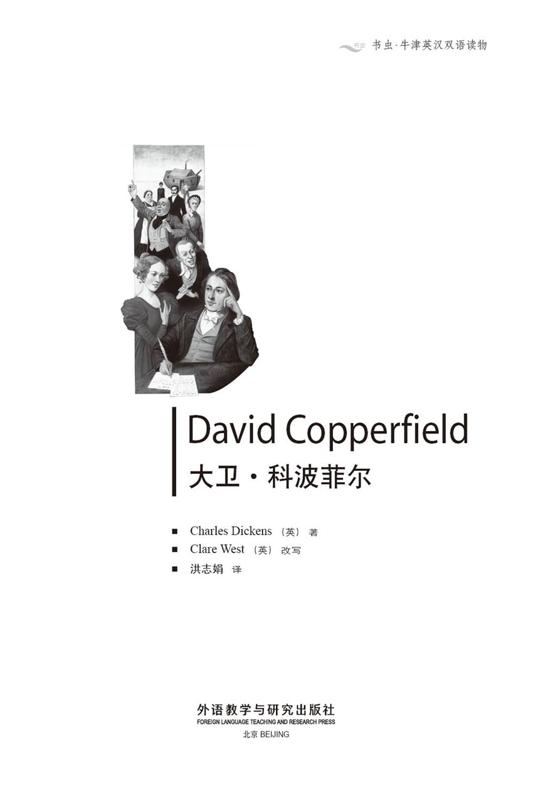
版权页
京权图字 01-96-1585
Originally published by Oxford University Press, Great Clarendon Street, Oxford. © 1994
This edition is licensed for sale in the People's Republic of China only and not for export therefrom.
'Oxford' is a registered trademark of Oxford University Press.
只限中华人民共和国境内销售，不包括香港特别行政区、澳门特别行政区及台湾省。不得出口。
图书在版编目（CIP）数据
大卫·科波菲尔 = David Copperfield／（英）狄更斯（Dickens, C.）著；（英）韦斯特（West, C.）改写；洪志娟译．—北京：外语教学与研究出版社，1997（2015.7 重印）
（书虫·牛津英汉双语读物）
ISBN 978-7-5600-1221-6
Ⅰ．大… Ⅱ．①狄…②韦…③洪… Ⅲ．小说—对照读物—英、汉 Ⅳ．H319.4：I
中国版本图书馆CIP数据核字（97）第06395号
出版人： 蔡剑峰
责任编辑：王霖霖
出版发行：外语教学与研究出版社
社 址：北京市西三环北路19号（100089）
网 址：http://www.fltrp.com
版 次：1997年5月第1版
书 号：ISBN 978-7-5600-1221-6
凡侵权、盗版书籍线索，请联系我社法律事务部
举报电话：（010）88817519
电子邮箱：banquan@fltrp.com
法律顾问：立方律师事务所 刘旭东律师
中咨律师事务所 殷 斌律师
简介
简 介
查尔斯·狄更斯曾经说过：“在我所有的作品中，我最喜欢这一部。正如许多父母一样，我内心里有一个宠儿，他的名字就叫大卫·科波菲尔。”
狄更斯自己的童年艰难困苦，少年大卫的生活也同样不容易。父亲在他未出生前就去世了，8岁时母亲改嫁，继父摩德斯通先生严酷残暴，他的姐姐摩德斯通小姐也一样铁石心肠，不近人情。大卫成长过程中遭遇过许多不友善的人——残忍的校长、狡诈的朋友，还有心怀歹意的尤赖亚·希普。然而，在大卫的生活中也不乏善良之人：有可爱的保姆辟果提，少言寡语、不善言辞的巴克斯先生，有貌似严肃但却菩萨心肠的姨婆，有生活不如意的米考伯夫妇。他们时而兴高采烈，时而忧虑不安，却始终期待着“转机”的到来。有恬静温柔的阿格尼斯，一位聪慧的知心朋友；还有朵拉，一位最最可爱的女孩，金发碧眼，甜美漂亮，天真无邪……
查尔斯·狄更斯（1812—1870）是英国最伟大的小说家之一。他出身于贫苦家庭（父亲曾因负债被捕入狱），经过不懈努力，获得了财富和荣誉。
目录
1．David Copperfield's childhood
1
David Copperfield's childhood
I was born at Blunderstone, in Suffolk, in the east of England, and was given my poor father's name, David Copperfield. Sadly, he never saw me. He was much older than my mother when they married, and died six months before I was born. My father's death made my beautiful young mother very unhappy, and she knew she would find life extremely difficult with a new baby and no husband.
The richest and most important person in our family was my father's aunt, Miss Betsey Trotwood. She had in fact been married once, to a handsome young husband. But because he demanded money from her, and sometimes beat her, she decided they should separate. He went abroad, and soon news came of his death. Miss Trotwood bought a small house by the sea, and lived there alone, with only one servant.
She had not spoken to my father since his marriage, because she considered he had made a mistake in marrying a very young girl. But just before I was born, when she heard that my mother was expecting a baby, she came to visit Blunderstone.
It was a cold, windy Friday afternoon in March. My mother was sitting by the fire, feeling very lonely and unhappy, and crying a little. Suddenly a stern, strange-looking face appeared at the window.
'Open the door!' ordered the stern-faced lady.
My mother was shocked, but obeyed at once.
'You must be David Copperfield's wife,' said the lady as she entered. 'I'm Betsey Trotwood. You've heard of me?'
'Yes,' whispered my mother, trembling.
'How young you are!' cried Miss Betsey. 'Just a baby!'
My mother started sobbing again. 'I know I look like a child! I know I was young to be a wife, and I'm young to be a mother! But perhaps I'll die before I become a mother!'
'Come, come!' answered Miss Betsey. 'Have some tea. Then you'll feel better. What do you call your girl?'
'My girl? I don't know yet that it will be a girl,' replied my mother miserably.
'No, I don't mean the baby, I mean your servant!'
'Her name's Peggotty. Her first name's Clara, the same as mine, so I call her by her family name, you see.'
'What a terrible name! However, never mind. Peggotty!' she called, going to the door. 'Bring Mrs Copperfield some tea at once!' She sat down again and continued speaking. 'You were talking about the baby. I'm sure it'll be a girl. Now, as soon as she's born...'
'He, perhaps,' said my mother bravely.
'Don't be stupid, of course it'll be a she. I'm going to send her to school, and educate her well. I want to prevent her from making the mistakes I've made in life.' Miss Betsey looked quite angry as she said this. My mother said nothing, as she was not feeling at all well. 'But tell me, were you and your husband happy?' asked Miss Betsey.
This made my poor mother feel worse than ever. 'I know I wasn't very sensible—about money—or cooking—or things like that!' she sobbed. 'But we loved each other—and he was helping me to learn—and then he died! Oh! Oh!' And she fell back in her chair, completely unconscious.
Peggotty, who came in just then with the tea, realized how serious the situation was, and took my mother upstairs to bed. The doctor arrived soon afterwards, and stayed all evening to take care of his patient.
At about midnight he came downstairs to the sitting-room where Miss Betsey was waiting impatiently.
'Well, doctor, what's the news? How is she?'
'The young mother is quite comfortable, madam,' replied the doctor politely.
'But she, the baby, how is she?' cried Miss Betsey.
The doctor looked strangely at Miss Betsey. 'It's a boy, madam,' he replied.
Miss Betsey said nothing, but walked straight out of the house, and never came back.
That was how I was born. My early childhood was extremely happy, as my beautiful mother and kind Peggotty took care of me. But when I was about eight, a shadow passed over my happiness. My mother often went out walking, in her best clothes, with a gentleman called Mr Murdstone. He had black hair, a big black moustache and an unpleasant smile, and seemed to be very fond of my mother. But I knew that Peggotty did not like him.
A few months later Peggotty told me that my mother was going to have a short holiday with some friends. Meanwhile Peggotty and I would go to stay with her brother Daniel in Yarmouth, on the east coast, for two weeks. I was very excited when we climbed into the cart, although it was sad saying goodbye to my mother. Mr Murdstone was at her shoulder, waving goodbye, as the driver called to his horse, and we drove out of the village.
When we got down from the cart in Yarmouth, after our journey, Peggotty said, 'That's the house, Master David!'
I looked all round, but could only see an old ship on the sand. 'Is that—that your brother's house?' I asked in delight. And when we reached it, I saw it had doors and windows and a chimney, just like a real house. I could not imagine a nicer place to live. Everything was clean and tidy, and smelt of fish. Now I was introduced to the Peggotty family. There was Daniel Peggotty, a kind old sailor. Although he was not married, he had adopted two orphans, who lived with him and called him Uncle. Ham Peggotty was a large young man with a gentle smile, and Emily was a beautiful, blue-eyed little girl. They all welcomed Peggotty and me warmly.
I spent a wonderfully happy two weeks there, playing all day on the beach with Emily, and sleeping in my own little bed on the ship. I am sure I was in love with little Emily in my childish way, and I cried bitterly when we had to say goodbye at the end of the holiday.
But on the way home to Blunderstone, Peggotty looked at me very worriedly. 'Master David, my dear,' she said suddenly in a trembling voice. 'I must tell you—you'll have to know now... While we've been away, your dear mother—has married Mr Murdstone! He's your stepfather now!'
I was deeply shocked. I could not understand how my mother could have married that man. And when we arrived home, I could not help showing my mother how very miserable I was. I went straight to my room and lay sobbing on my bed, which made my poor mother very unhappy too. As she sat beside me, holding my hand, Mr Murdstone suddenly came in.
'What's this, Clara, my love?' he asked sternly. 'Remember, you must be firm with the boy! I've told you before, you're too weak with him!'
'Oh yes, Edward, I'm afraid you're right,' my mother replied quickly. 'I'm very sorry. I'll try to be firmer with him.'
And when she left the room, Mr Murdstone whispered angrily to me, 'David, do you know what I'll do if you don't obey me? I'll beat you like a dog!'
I was still very young, and I was very frightened of him. If he had said one kind word to me, perhaps I would have liked and trusted him, and my life would have been different. Instead, I hated him for the influence he had over my dear mother, who wanted to be kind to me, but also wanted to please her new husband.
That evening Mr Murdstone's sister arrived to 'help' my mother in the house. A tall dark lady, with a stern, frowning face, she looked and sounded very much like her brother. I thought she was planning to stay with us for a long time, and I was right. In fact, she intended to stay for ever. She started work the next morning.
'Now, Clara,' she said firmly to my mother at breakfast, 'I am here to help you. You're much too pretty and thoughtless to worry about the servants, the food and so on. So just hand me your keys to all the cupboards, and I'll take care of everything for you.'
My poor mother just blushed, looked a little ashamed, and obeyed. From then on, Miss Murdstone took complete control of the house, keeping the keys hanging from her waist as she hurried through the house, checking that everything was being done just as she wished.
extremely adv. highly 非常，极为。 The weather is extremely cold. 天气非常冷。
handsome a. good-looking 好看的，漂亮的。
demand v. ask for 要，要求。
go abroad go to a foreign country 出国。
lonely a. alone 独自一个，孤独的。
shocked a. disturbed 震惊，惊吓。
reply v. answer 回答。
terrible a. bad, dreadful 不好的，可怕的。
at once right now 马上，立即。
prevent v. stop 阻止，制止。
sensible a. aware 知道的，觉察的。
completely adv. fully 完全地。
arrive v. reach 到达。
take care of be responsible for 照顾，负责。
be fond of like, love 喜欢，爱。
wave goodbye depart 告别，挥手告别。
adopt v. take (sb.) into one's family as a relation 收养。
orphan n. a parentless child 孤儿。
childish a. like a child 儿童的，幼稚的。
miserable a. wretched, very unhappy 可怜的，不幸的。
firm a. hard, strict 严厉，严格。
reply v. answer 回答。
trust v. believe 相信。
ashamed a. feeling shame 感到羞耻，惭愧。
check v. examine 检查。
1 大卫·科波菲尔的童年
1 大卫·科波菲尔的童年
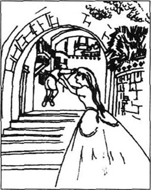
我出生在英国东部萨福克郡的布兰德斯通，并沿用了我不幸的父亲之名——大卫·科波菲尔。可悲的是，他从未见过我的面。他同我母亲结婚时比我母亲大许多，在我出生前6个月就谢世了。他的死使我年轻美貌的母亲感到极为痛苦，因为她知道没有丈夫独自带婴儿的日子将会异常艰难。
在我们家族中最富有、最重要的人物要数我父亲的姨妈——贝茜·特拉伍德小姐。其实她结过一次婚，嫁的是一个英俊的青年。但是，由于这位丈夫总找她要钱，有时还动手打她，她便决定与他分手。他出了国，不久就有消息说他已去世了。特拉伍德小姐在海边买了一所小房子，独自生活在那里，身边只随了一位用人。
自从我父亲结婚后她就不理睬我父亲了，因为她认为我父亲娶这么年轻的小姐做妻子是个错误。然而，在我出生前，当她听说我母亲临产时，就来到布兰德斯通拜访我们。
那是在三月份的一个寒冷、多风的星期五下午，我母亲正独自坐在火炉旁，因感到孤单和不幸而轻声抽泣着。突然一张严肃、陌生的脸出现在窗外。
“开门！”这位满脸严肃的女人命令道。
我母亲吓了一跳，但还是很快开了门。
“你就是大卫·科波菲尔的妻子吧，”她边进门边说，“我叫贝茜·特拉伍德，你听说过吧？”
“听说过。”母亲轻声答道，声音发颤。
“你真年轻呀，”贝茜小姐叫道，“简直还是个孩子！”
母亲又开始抽泣，“我知道我看着像个孩子！我知道我年纪还小，不该为人妻，不该为人母！但也许我会在成为一个母亲之前死去！”
“行了，行了！”贝茜小姐回答说，“喝口茶吧，这样你会好受些。你叫你的女孩什么？”
“我的女孩？我还不知道是不是女孩。”我母亲疑惑地答道。
“不，我不是指小孩，我是说你的女用人！”
“她叫辟果提。她的教名是克拉拉，因为和我同名，所以我就以她的姓称呼她，就这样！”
“多难听的名字！不过没关系，辟果提！”她走到门边叫道，“马上给科波菲尔太太上点茶水！”她又坐下来，继续说道：“你刚才说到孩子，我肯定她会是个女孩。那么，只要她一出生，……”
“他，或许是。”母亲勇敢地更正道。
“别犯傻，当然应该是她，我会送她上学，让她接受良好的教育。我要让我生活中所犯的错误避免在她身上重演。”贝茜小姐说此话时显得很愤怒。母亲没吭声，因为她感觉不太舒服。“好吧，告诉我，你和你丈夫过得幸福吗？”贝茜小姐问道。
这个问题让我母亲更感难受。“我知道我很不开窍——在钱方面，做饭方面，等等！”她抽泣着说，“但我们彼此相爱——他帮助我慢慢学——可他死了，唉！唉！”她倒在椅子上，失去了知觉。
辟果提正巧端着茶进来，意识到情况的严重性，把我母亲扶到楼上。医生随即叫到，并彻夜守护着病人。
大约午夜时分，医生下楼来到客厅，贝茜小姐已经等得很不耐烦了。
“大夫，有什么消息吗？她怎么样了？”
“年轻的母亲情况很好，小姐。”大夫很礼貌地回答。
“她，孩子，她怎么样？”贝茜小姐追问。
大夫很纳闷地看着贝茜小姐，“是个男孩，小姐。”他回答道。
贝茜小姐二话没说，径直走出屋子，从此不再登门。
就这样我来到了世上。孩提时的我非常幸福，因为有我美丽的母亲和善良的辟果提照顾我。然而，在我8岁左右，我的幸福生活开始蒙上了阴影。我母亲经常穿着最好的衣服，和一位叫摩德斯通的先生出去散步。那人有一头黑发，留一大撇黑胡子，笑容阴沉，似乎很喜欢我母亲。但我知道辟果提不喜欢他。
几个月后，辟果提告诉我，母亲要和几位朋友出去度短假。辟果提可以趁此机会带我去东海岸的雅茅斯镇和她兄弟丹尼尔生活两个星期。登上马车时我兴奋不已，虽然与母亲分手有些伤感。摩德斯通先生和我母亲并肩站着，向我们挥手道别。这时，马车夫吆喝一声，把我们拉出村去。
当我们结束旅程，在雅茅斯下车时，辟果提说：“到家了，大卫少爷。”
我环顾四周，只看见沙滩上的一艘旧船，便高兴地问道：“那个——那个就是你兄弟的家？”我们走到近处一看，船上有门，有窗，有烟囱，俨然是一所名符其实的住房。我再也想象不出比这更好的住处了。屋内一切陈设干净、整齐，散发着鱼腥味。这时，我被介绍给辟果提一家。家里有丹尼尔·辟果提，一位善良的老水手，他没有结婚，但收养了两个孤儿。孩子们和他生活在一起，管他叫叔叔。哈姆·辟果提是一位壮小伙子，脸上总是现出亲切的笑容，埃米莉是一位美丽的小姑娘，长着一对蓝眼睛。他们都热情地欢迎我和辟果提的到来。
在这儿的两个星期我过得相当愉快，整天和埃米莉在海滩上玩，夜里就睡在船屋里我的小床上。我相信当时我的确以孩童的方式爱上了小埃米莉。当假日结束我俩不得不道别时我哭得很伤心。
在我们回布兰德斯通的路上，辟果提很忧郁地看着我。“大卫少爷，亲爱的，”她突然说道，声音颤抖，“我必须告诉你——你现在该知道了……在我们离家的这段时间，你亲爱的母亲嫁给了摩德斯通先生！他如今已是你的继父了！”
我非常震惊，不明白母亲怎么会嫁给那个人。我们回到家后，我控制不住自己，让母亲看出了我有多痛苦。我径直走进我的卧室，倒在床上哭泣，弄得我可怜的母亲也伤心起来。正当她坐在我床边，拉着我的手时，摩德斯通先生突然走了进来。
“怎么了，克拉拉，我亲爱的？”他严肃地说道，“记住，对孩子应该严厉点！我已经跟你说过，你太娇惯他了！”
“哦，是的，爱德华，恐怕你是对的，”母亲赶紧答道，“我很抱歉，我会尽量对他严厉些。”
她离开房间后，摩德斯通先生压低声音，愤愤地说道，“大卫，你知道你要是不听话我会怎么对待你吗？我会像揍一条狗一样揍你！”
我当时还小，很怕他。当时他要是跟我说上一句和蔼的话，或许我会喜欢他，信任他，我后来的生活也就会完全不同。然而，我恨他给我亲爱的母亲施加压力，她总想好好待我，可还得讨好她的新丈夫。
当天晚上，摩德斯通先生的姐姐来到家中“帮助”我母亲料理家务。她又高又黑，眉头紧锁，板着面孔，神态和说话声音和她兄弟别无两样。我想她可能要长期和我们待在一起了，果不出所料，她准备永远住下去。第二天一早她就开始行动起来了。
“现在，克拉拉，”早餐时她严肃地告诉我母亲，“我到这儿是来帮助你的。你在安排用人、食品等方面显得太幼稚，太没主意。所以你把所有橱子、柜子的钥匙交给我，我来为你照料一切。”
可怜的母亲只是一阵阵脸红，显得很羞愧，最终还是同意了。从那以后，摩德斯通小姐完全掌管了家事，她把钥匙挂在手腕上，来回地穿梭在屋里屋外，检查着每一件事是否照她的意思办了。
2．David is sent away to school
2
David is sent away to school
I was very unhappy during this time. Mr Murdstone insisted on my studying, and so my mother gave me lessons. In the past she and I had enjoyed our studies together, and she had taught me a lot in her gentle way. But now both Mr and Miss Murdstone were present during my lessons, and somehow I could not concentrate or remember what I had learnt. My poor mother was very sympathetic, and tried to encourage me, sometimes even whispering the answer to me. But the Murdstones had sharp ears.
'Clara, my love!' Mr Murdstone used to say crossly. 'Remember! Be firm! You're making the boy's character worse by helping him like that!'
'Oh, Edward, I'm sorry,' my mother replied, looking embarrassed and hanging her head like a guilty child.
One morning when I arrived in the sitting-room as usual for my lesson, I saw that Mr Murdstone had a thin stick in his hand. I could not take my eyes off it.
'You must be very careful today, David,' he said with his unpleasant smile, holding the stick in both hands.
I knew what would happen then. A terrible fear took hold of me, and all that I had learnt disappeared immediately from my memory, so that I could not answer any of my mother's questions. Mr Murdstone got up from his chair.
'Well David,' he said heavily, 'I think you've worried your mother enough today. We'll go upstairs, boy. Come,' and he picked up the stick. I heard my mother crying as we went upstairs.
'Please, Mr Murdstone!' I cried. 'Don't beat me! I've tried to learn, really I have, sir!'
But he did not listen to me. In my bedroom, he held my arms and started hitting me with the stick. I managed to get hold of his hand, and bit deep into it. He cried out angrily, and began to hit me as hard as he could. Above the noise of my screams, I could hear my mother and Peggotty crying outside the door. Then the next moment, he was gone. I heard him lock the door. And I was lying, sore and bleeding, on the floor. The whole house seemed suddenly very quiet.
I stayed there for a time, without moving. In the evening Miss Murdstone brought me some bread and milk, which she left on the floor beside me, frowning angrily at me as she went out. I was kept locked in that room for five days and nights, and saw nobody except Miss Murdstone, who brought me food but never spoke to me. To a small boy, the five days seemed like years, and I can still remember how frightened and guilty I felt.
But during the fifth night I heard a strange noise at the keyhole. It was Peggotty, trying to give me a message.
'Master David, my dear,' she whispered, sobbing, 'they are going to send you away to boarding school! Tomorrow!'
'Oh Peggotty!' I cried. 'Then I won't see you and mother very often!'
'No, my love. But don't forget, I'll take care of your mother. She needs her cross old Peggotty! I'll stay with her, although I hate these Murdstones. And remember, David, I love you as much as I love your mother, and more. And I'll write to you.'
'Thank you, dear Peggotty!' I whispered back, tears rolling down my face. 'Will you write to your brother too, and Ham, and little Emily, and tell them I'm not as bad as the Murdstones think? And send my love to them, especially little Emily?'
Peggotty promised to do what I asked. The next morning Miss Murdstone told me that because of my wickedness I was going away to school. She had already packed my case for me. My mother was only allowed to say a very quick goodbye to me, when the horse and cart arrived. The driver put my case on the cart, and we drove slowly out of Blunderstone.
I was still sobbing loudly when suddenly I saw Peggotty running after us on the road. The driver stopped and waited for her. With difficulty she climbed up onto the cart.
'Here, Master David!' she cried breathlessly. 'A little present from me and your dear mother! Take care of yourself, my dear!' She put a small purse and a paper bag into my hands, and held me so close to her fat body that I thought I would never breathe again. Then she jumped down and ran back along the road to the village.
As we continued our journey, I dried my tears and looked at what she had given me. The bag was full of Peggotty's special cakes, and in the purse were eight bright shilling coins. Thinking of my mother and Peggotty made me start crying again, but just then the driver, Mr Barkis, began to talk to me. He was a large, red-faced man, who clearly found conversation difficult.
'Did she make those cakes?' he asked slowly, having finished the one that I had offered him.
'You mean Peggotty, sir? Yes, she does all our cooking.'
'Does she?' replied Mr Barkis with great interest. There was a long silence while he considered his next question.
'Does she have a young man?' he asked. 'You know, someone who wants to marry her?'
'Peggotty? A young man?' I repeated, surprised. 'Oh no, she's never had any young men.'
'Ah!' replied Mr Barkis, looking very pleased. Again he thought for a long time before speaking.
'Well,' he said at last, 'perhaps if you write to her—will you be writing to her? You could give her a message from me. You could say "Barkis is willing". Would you do that?'
'"Barkis is willing",' I repeated innocently, wondering what the message meant. 'Yes, of course. But you could tell her yourself, Mr Barkis, when you return to Blunderstone tomorrow.'
'No, no' he said, 'no, you just give her the message. Remember, "Barkis is willing".'
After this conversation Mr Barkis was completely silent for the rest of the journey. When we arrived in Yarmouth, I bought paper at the hotel and wrote this letter to Peggotty:
My dear Peggotty,
I have arrived safely in Yarmouth. Barkis is willing.
Please give my love to mother.
Yours, David
P.S. He says it's important—Barkis is willing.
In Yarmouth I was put on the long-distance coach to London, and travelled all through the night. At the coach station in London I was collected by a teacher, Mr Mell, and taken to Salem House, the school which the Murdstones had chosen for me.
The school was a large old building with a dusty playground, surrounded by a high brick wall. It looked strangely deserted. I was very surprised to find that none of the boys were there, and was told that they were all on holiday, and that I had been sent there during the holidays as a punishment for my wickedness. The headmaster and teachers were on holiday too, all except for Mr Mell, who had to look after me.
I spent a whole month in that miserable place, doing my lessons in the dirty, empty classroom, which smelt of old food and unwashed boys. Every evening I had to eat my supper with Mr Mell, and then go straight to bed. The worst thing was the sign I had to wear round my neck. It said: BE CAREFUL! HE BITES. I was only allowed to take it off when I went to bed.
Although I was extremely lonely and unhappy at this time, I was not looking forward to meeting all the other boys. I felt sure they would laugh at me and especially at the sign I was forced to wear. But one day Mr Mell told me that the headmaster, Mr Creakle, had returned, and wanted to see me. So I went, trembling, to his part of the house.
I realized at once that Mr Creakle lived much more comfortably than the boys or the teachers. He was a small, fat man with a purple nose, who was sitting in an armchair with a bottle and a glass in front of him.
'So, this is the boy who bites, is it?' he asked unpleasantly. 'I know your stepfather, boy. He's a man of strong character, he is. He knows me, and I know him. Do you know me? Answer me, boy!' He pulled violently at my ear.
'Not yet, sir,' I answered, tears of pain in my eyes.
'Ah, but you soon will! Oh yes, I have a strong character too, you'll see!' He banged his hand hard on the table.
I was very frightened, but I made myself ask the question I had been considering for a whole month. 'Please, sir, I'm very sorry for what I did to Mr Murdstone. Could—could I take this sign off, before the other boys see it...'
Mr Creakle gave a sudden, terrible shout and jumped out of his chair. I did not wait to see whether he was going to hit me, but ran out of his room and hid in my bed for the next hour.
However, the boys were not as cruel to me as I had feared. I made a friend almost immediately, a boy called Tommy Traddles, who was known to be the unluckiest boy in the school. I was also noticed, and even smiled on, by the great James Steerforth, one of the oldest boys, at least six years older than me. He was a handsome, intelligent, curly-haired young man, who had become an important figure at the school, with great influence over the younger boys.
'How much money have you got, Copperfield?' he asked me.
'Eight shillings, Steerforth,' I answered, remembering the present my mother and Peggotty had given me.
'You'd better give it to me. I'll take care of it for you,' he offered in a friendly way.
I opened Peggotty's purse and turned it upside-down into his hand.
'Perhaps you'd like to spend some of it now?' he suggested, smiling. 'A bottle of wine, a tin of biscuits, a few cakes, that sort of thing? I can go out whenever I like, so I can buy it for you.'
'Ye-es, that's very kind of you,' I said, although I was a little worried that all my money would disappear.
When we went upstairs to bed, I realized that all my money had been spent, as eight shillings' worth of food and drink was laid out on my bed in the moonlight. Of course I did not want to eat and drink it all by myself, so I invited Steerforth and the others to help themselves. The boys were very willing, and we spent a pleasant evening, sitting on our beds, whispering to each other. I discovered that the boys all hated Salem House, which they considered one of the worst schools in the country. They especially hated Mr Creakle, who was in the habit of beating them regularly with a heavy stick which he carried with him at all times. The only boy he dared not beat was Steerforth. I admired Steerforth even more when I heard this.
When we were all too tired to stay awake, Steerforth got up to go. 'Goodnight, young Copperfield,' he said, putting a hand on my head. 'I'll take care of you.'
'It's very kind of you,' I replied gratefully.
'You haven't got a sister, have you?' he asked sleepily.
'No, I haven't,' I answered.
'What a pity! If you had one, I'm sure she'd be a pretty, bright-eyed little girl. I would have liked to meet her.'
I thought of him a lot that night, with his laughing, handsome face, and his careless, confident manner. I could never have imagined what a dark shadow he would throw over the lives of people who were dear to me.
I stayed at Salem House for three more months. Although one or two of the teachers, like Mr Mell, were kind to us boys, and tried to teach us properly, we were too afraid of Mr Creakle and his stick to concentrate on our studies. But Tommy Traddles and I cheered each other up if we were beaten, and I was lucky enough to be friendly with the great Steerforth, in spite of the difference in our ages.
However, my home, even with the Murdstones there, seemed a much pleasanter place than school, and I was glad when the Christmas holidays arrived, and I was allowed to return to Blunderstone. I was a little surprised to find that my mother had a new baby, and I could see at once that she was not well. She looked tired and worried, and very thin. But she and Peggotty were delighted to see me, although they dared not show it if the Murdstones were present. My stepfather and his sister seemed to hate me even more than before, if that were possible, and they made my life quite miserable whenever they could. In fact, I was almost pleased when it was time to return to school, and see Traddles and Steerforth again.
As the cart drove away, I remember my mother standing outside our house, with her baby in her arms, smiling sadly at me. That was the last time I saw her, and that is how I shall always remember her.
insist on urge 坚持，强调。
concentrate v. focus one's attention on 集中精力于，专心，注意。
sympathetic a. having or showing sympathy 有同情心的，表示同情的。
embarrassed a. awkward, ashamed 难堪的，局促不安的。
take hold of seize 抓住。
worry v. 困扰，使烦恼。
pick up take hold of and lift 拾起，捡起。
hold n. act and manner of holding 抓，把握。get hold of sth. 抓住某物。
sore a. painful 疼痛的。
bleeding a. 流血的。
guilty a. showing or feeling guilt 有罪的，感觉有罪的。
take care of 照料。
cross a. bad-tempered 脾气糟的。
whisper v. speak (words) with noisy breath so that only a person close by can hear 低语，耳语。
send my love to them 代我问他们好。
say a quick goodbye 匆匆道别。
sob v. 呜咽，啜泣。
shilling n. (until 1971) British coin with the value of twelve pennies, one twentieth of a pound （到1971年止）先令（英国钱币，值十二便士，为一镑的二十分之一）。
offer v. hold out, put forward 提供，提出。
message n. a piece of news, or a request, sent to sb. 消息、讯息。
willing a. ready to help, to do what is needed, asked 愿意按照所需所求予以帮助或去做的，乐意的。
long-distance 长途。
coach n. four-wheeled carriage pulled by four or more horses, used to carry passengers and mail before railway was built 四轮马车。
collect v. fetch 接来，拿来。
deserted a. abandoned 无人居住的。
punishment n. punishing or being punished 处罚或被人处罚。
smell (of sth.) give out a smell 发出气味，有……气味。
straight adv. directly, without delay 直接地，不延误。
look forward to 期待。
laugh at 嘲笑。
tremble v. shake involuntarily 战栗，发抖。
purple a. of red and blue mixed together 紫色的。
frightened a. 害怕的。
cruel a. (of person) taking pleasure in the suffering of others, ready to give pain to others （指人）残忍的，残暴的。
figure n. person, esp. his character or influence 人物（尤指其性格或影响力）。
influence over sb. 对某人的影响力
You'd better give it to me. 你最好把东西给我。had better 最好。
disappear v. go out of sight 不见，消失。
awake a. roused from sleep 被唤醒的，醒着的。
What a pity! 真遗憾！
confident a. feeling or showing confidence, certain 感觉有信心的，有把握的。
throw a dark shadow over 给……蒙上浓重的阴影。
cheer sb. up fill with gladness, hope, high spirits, comfort 使（某人）充满欢喜、希望、高兴、鼓舞、安慰。
in spite of not to be prevented by 尽管。
at once 立刻，马上。
thin a. having not much flesh 瘦的。
present a. being in the place in question 出席的，在场的。
2 大卫被送往学校
2 大卫被送往学校
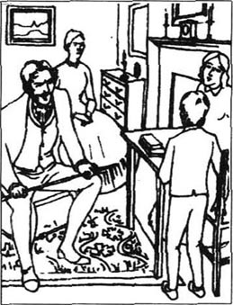
这段时期我很不愉快。摩德斯通先生坚持要我学习，所以母亲就教我功课。在过去，母亲和我都可以从教和学当中得到乐趣，她用她温和的方式教给我许多知识。但如今，我们上课时摩德斯通先生和小姐都在场，这在很大程度上让我不能集中精神，记住所学的内容。可怜的母亲同情我，设法提示我，有时甚至悄声告诉我答案，可摩德斯通先生和小姐的耳朵特别尖。
“克拉拉，亲爱的！”摩德斯通先生总是很恼怒地说道，“记住！要严厉！你这样帮着孩子会把他的脾气惯得更糟！”
“哦，爱德华，很抱歉。”母亲答道，满脸尴尬，像一个认错的孩子似地低下了头。
一天早上，我像往常一样来到客厅学功课，看见摩德斯通先生手上拿着一根细木棍，我的眼睛直钩钩地盯着它不放。
“你今天要非常小心，大卫。”他冷笑道，双手握着那根木棍。
我知道接下来要发生什么。一阵强烈的恐惧占据了我的心头，把我所学会的东西从我的记忆中一扫而光，以至于母亲问我的问题我一个都回答不上来。摩德斯通先生从座位上站起来。
“好了，大卫，”他严厉地说，“我想你今天够难为你母亲的了，我们上楼吧，孩子，来吧。”他拿起木棍。我们俩上楼时我听见母亲在哭泣。
“求您了，摩德斯通先生！”我哭道，“别打我！我已经尽力学习了，我真的尽力了，先生！”
可他并不理睬。到了我的卧房，他抓住我的双臂，抡起木棍就打。我使劲抓住他的手，狠狠地咬了他一口。他愤怒地叫了一声，开始使出浑身的劲儿来打我。在我一阵阵的尖叫声背后，我听见母亲和辟果提在门外哭泣的声音。过了一会儿，他走了。我听见他锁上了门。我躺在地上，浑身疼痛，还流着血。整个屋子似乎突然一下子变得寂静了。
我一动不动地在地上躺了很长时间。晚上，摩德斯通小姐给我拿来一些面包和牛奶，放在我身边的地上，出门时还生气地冲我皱皱眉头。我被锁在房间里五天五夜，其间除了摩德斯通小姐默不作声地给我送点食物，未见有其他任何人来。对一个孩子来说，这五天时间简直就像数年，我至今还记得当时有多恐惧、有多内疚。
第五天夜里，我听到有一个奇怪的声音从锁眼里传来。那是辟果提，设法给我送口信来了。
“大卫少爷，亲爱的，”她低声抽泣道，“他们要把你送到寄宿学校去！明天！”
“哦！辟果提！”我哭道，“那我就不能常见着你和妈妈了！”
“不能了，我亲爱的。但你放心，我会照顾你母亲，她需要我这位脾气大的老辟果提！我会留下来陪她，尽管我讨厌摩德斯通姐弟。记住，大卫，我爱你跟爱你母亲一样，只多不少。我会写信给你。”
“谢谢你，亲爱的辟果提！”我轻声回答，泪水滚落到脸颊。“请你也写信给你的兄弟，还有哈姆，小埃米莉，告诉他们我并不像摩德斯通姐弟认为的那么坏。带给他们我的问候，特别是小埃米莉，好吗？”
辟果提答应了我的请求。第二天一早，摩德斯通小姐告诉我，由于我的劣行，我要被送往学校。她已经为我准备好行装。母亲只被允许在马车到达时说一句简单的道别话。马车夫把我的手提箱放到车上，我们就慢慢地离开了布兰德斯通。
我一直不停地大声哭喊着，突然看见辟果提从后面追来。马车夫停下来等她，她很吃力地爬上了车。
“给你，大卫少爷！”她上气不接下气地说道，“这是我和你亲爱的母亲留给你的小礼物！好好照顾自己，亲爱的！”她把一个小钱包和一个纸袋塞给我，又把我紧紧地贴到她肥胖的怀里，当时我觉得可能再也喘不上气了。然后，她跳下车，沿着马路跑回了村庄。
我们继续往前赶路，我擦干泪水，打开她给我的东西。纸袋里是辟果提做的拿手糕点，钱包里有8先令闪亮的硬币。一想到母亲和辟果提我又一次哭起来。这时，车夫巴克斯先生开始说话了。他是一位红脸壮汉，显然很不擅长与人交谈。
“是她做的这些点心？”他吃了我给他的一块蛋糕后，不紧不慢地问道。
“你是指辟果提吧，先生？是的，我们家的饭菜全是由她做的。”
“是吗？”巴克斯先生饶有兴趣地应了一句。沉默了好一会儿，他想好了另一个问题。
“她有小伙子吗？”他问，“就是，有没有人想娶她？”
“辟果提？小伙子？”我不解地重复道，“哦，没有，她从未有过任何小伙子。”
“噢！”巴克斯先生答道，面露喜色。他又想了很长时间才开口说话。
“那么，”他最后说道，“或许你给她写信时——你会给她写信吧？你可以替我捎个信，你写上‘巴克斯很愿意’，可以吗？”
“‘巴克斯很愿意’，”我天真地重复道，捉摸着这句话的意思。“可以，当然。可你可以自己告诉她呀，巴克斯先生，等你明天回到布兰德斯通的时候。”
“不，不，”他说，“不，你只管给她写上。记住：‘巴克斯很愿意。’”
说完这些，巴克斯先生一路上就完全沉默了。到了雅茅斯，我在客栈买了些信纸，给辟果提寄了这样一封信：
亲爱的辟果提：
我已安全到达雅茅斯。巴克斯很愿意。
请代我问候我母亲。
你的大卫。
附：他说此事很重要——巴克斯很愿意。
在雅茅斯我被送上一辆去伦敦的长途四轮马车，行驶了一整夜。在伦敦车站，有位叫梅尔先生的教师接待了我，并把我送到萨伦学校，那是摩德斯通先生为我选定的学校。
学校由一幢很大的旧楼和一片杂乱的操场组成，四周围着很高的砖墙。我很奇怪，学校里空无一人，后被告知，学生们都放假了，而我却在假期里被送到学校是对我的劣行的一种惩罚。校长和老师们也都放假了，除了这位不得不照看我的梅尔先生以外。
我在这个糟糕的地方待了整整一个月，在肮脏不堪的空教室里做功课，闻着食物霉烂的气味和那种没洗干净的孩子身上的臭味。每天晚上我都得和梅尔先生一起吃晚饭，然后直接上床睡觉。最糟糕的是我必须在脖子上挂块牌子，牌子上写有“小心，他咬人”的字样。只有在上床睡觉时这块牌子才允许被摘下来。
尽管这段时间我感到特别孤单，特别无聊，但我还是不期望见着其他孩子们。我觉得他们肯定会嘲笑我，尤其笑我不得不挂着的那块牌子。然而有一天，梅尔先生告诉我，校长克里古尔先生回来了，并要我去见他。于是我哆哆嗦嗦地来到他的房间。
我一眼就发现克里古尔先生住得比孩子们和老师们要舒服得多。他个子矮小，身材肥胖，长着一个酒糟鼻。他坐在扶手椅上，面前放着一瓶酒和一个酒杯。
“这，就是那个咬人的孩子，对吧？”他很不高兴地问道，“我认识你继父，孩子。他是个脾气特倔的人，他的确是。他认识我，我也认识他。你认识我吗？回答我，小子！”他粗暴地揪起我的耳朵。
“还不认识，先生。”我回答，疼得直掉泪。
“噢，你很快会认识的！噢，对了，我也是个脾气倔强的人，你会知道的！”他狠狠地捶了一下桌子。
我很害怕，但还是竭力稳住自己，问了一个困扰了我一整个月的问题，“求您了，先生，我非常抱歉我对摩德斯通先生所做的一切。我能——我能在其他同学看到之前摘下这块牌子吗……？”
克里古尔先生发出一声突兀、可怕的叫声，从椅子上跳起来。我没等看清他是否想揍我就跑回了宿舍，并在床上待了足足一个钟头。
然而，同学们对我并不像我担心的那样残酷。我很快就结识了一位叫汤米·特拉德的朋友，他被公认为学校里最不幸的孩子。我还引起了学校里最年长的孩子之一的詹姆士·斯提福兹的注意，甚至互相见面致意。他至少比我大6岁，长得英俊、人很聪明，留一头卷发，是学校里的出名人物，对年幼的孩子颇具影响力。
“你有多少钱，科波菲尔？”他问我。
“8先令，斯提福兹。”我回答他说，回想着母亲和辟果提送给我的礼物。
“你最好给我，我替你保管。”他很友善地提议。
我打开辟果提给的钱包，把钱一古脑全倒在他手上。
“你现在大概想先花掉一部分吧？”他笑着建议道，“可以买瓶酒，买个饼干，一些糕点什么的？我随时可以外出，所以我可以帮你买回来。”
“那——好吧，你真是个热心人。”虽然我有点担心我的钱会分文不剩，但还是这么说了。
当我们上楼睡觉时，我意识到我的钱已经全部被花光了，因为借着月光可以看见，价值8先令的食品和饮料已经堆在我的床上。我当然不会一个人独享这些东西，所以邀请斯提福兹和其他的同学一起吃，随便吃。孩子们都非常乐意，那晚过得很愉快。我们坐在自己的床上，悄声聊开了。我发现孩子们都讨厌萨伦学校，认为这是全国最臭的学校之一。他们尤其讨厌克里古尔先生，说他有揍学生的癖好，用他那根从不离身的粗木棍。还说他唯一不敢揍的学生就是斯提福兹。我听了后对斯提福兹更加肃然起敬。
当我们都感觉没劲再熬夜时，斯提福兹站起来要走。“晚安，小科波菲尔，”他把手放在我的头上，说道，“我会保护你的。”
“你真是个好心人。”我感激道。
“你没有姐妹，是吧？”他困倦地问道。
“没有，我没有姐妹。”我答道。
“真遗憾！要是你有的话，我敢肯定她是个漂亮的大眼睛姑娘，我就可以有幸见见她啦。”
那晚，他让我捉摸不透，他的笑声，他那英俊的脸，他那不拘小节、桀骜不驯的气度。而我怎么也想象不到后来他会给我的亲友们的生活蒙上一层沉重的阴影。
我在萨伦学校又待了三个月。虽然也有一两个教师，如梅尔先生，对孩子们很和气，也设法给我们以正规的教育，但我们都害怕克里古尔先生和他的棍子，所以根本没法专心学习。不过，汤米·特拉德和我总是在挨打的时候互相安慰，而且我还很幸运与大孩子斯提福兹保持友好，虽然我们俩年龄相差很多。
不管怎样，我的家，虽然有摩德斯通姐弟在，总显得比学校亲切。所以在圣诞来临之际，我很高兴，我可以回到布兰德斯通去了。我有些吃惊，母亲已经又生了一个小孩，看得出来她身体欠佳。她看上去很疲倦，忧心忡忡，而且瘦弱不堪。但她和辟果提见到我时都很高兴，尽管有摩德斯通姐弟在场时不敢表露出来。继父和他姐姐比以前更讨厌我了，只要有可能，他们就会抓住一切机会让我生活在痛苦之中。所以，当返校的日子来临，想着我又可以见到特拉德和斯提福兹时，我反而感到欣喜。
马车开始启动，我记得母亲站在屋外，怀里抱着小孩，苦涩地微笑着。这是我最后一次见着她，这也是我至今依旧记得的她的模样。
3．David the orphan
3
David the orphan
Life went on as normal for me at school, until my birthday two months later in March. I remember that day very well. It was cold, icy weather, and we boys had to blow on our fingers and rub our hands to keep warm in the freezing classrooms. When a message came for me to go and see Mr Creakle, I thought that Peggotty must have sent me a birthday present, and so I hurried gladly along to his room. But there I realized something unusual had happened, because it was Mr Creakle's wife who was waiting to speak to me.
'David, my child,' she said kindly, holding my hand, 'we all have to accept that our loved ones can die at any moment.'
I looked at her, trying to understand what she meant.
'I'm sorry to tell you,' she continued, 'that your mother is dangerously ill.'
There was a mist in front of my eyes, and suddenly burning tears ran down my face. I knew the truth.
'Your mother is dead,' she said.
I was already sobbing loudly and I felt I was an orphan, quite alone in the world.
Mrs Creakle packed my case herself, and sent me home on the coach for the funeral. I did not realize at the time that I would never return to Salem House.
When I arrived home, Peggotty met me at the door, and we cried miserably in each other's arms. Mr Murdstone seemed very sad, and did not speak to me at all. Miss Murdstone, however, showed her usual firmness of character (which she and her brother were so proud of) by checking that I had brought all my clothes back from school. After that she showed no interest in me at all. There was a deathly stillness in the house. Peggotty took me up to the room where my dear mother's dead body lay, with my little brother, who had died a few hours after her. Everything was fresh and clean in the room, but I could not look at my mother's lovely face, which would never smile at me again, without crying.
'How did it happen, Peggotty?' I asked, sobbing.
'She was ill for a long time, Master David. She got worse after the baby was born, you see. She was sometimes unhappy and forgetful, but she was always the same to me, her old Peggotty. Those two downstairs often spoke crossly to her and made her sad, but she still loved them, you know—she was so sweet and loving! I always sat beside her while she went to sleep. It made her feel better, she said.' There was a short silence while Peggotty dried her eyes, then took both my hands in hers. 'On the last night, she asked me for some water, and then gave me such a patient smile! She looked so beautiful! The sun was beginning to rise, and she put her head on my arm, on her stupid cross old Peggotty's arm, and died like an innocent child going to sleep!'
After my mother's funeral, I began to wonder what would happen to me. The Murdstones did not even seem to notice that I was in the house. They had told Peggotty to leave, as they did not want her as their servant any more, so Peggotty was going to her brother's in Yarmouth, until she decided what work to do next. She suggested taking me with her for a holiday, and to my surprise the Murdstones agreed.
So next morning Mr Barkis appeared at the door with his cart, and Peggotty's cases were put on it. We climbed up and sat beside him. Peggotty was naturally a little sad to leave her old home, where she had been so happy with my mother and me, and at first she cried a little. But when Mr Barkis saw her drying her eyes and looking more cheerful, he too began to look happier, and he whispered to me, 'Barkis is willing! You told her that!' Aloud he said to Peggotty, 'Are you comfortable? '
Peggotty laughed and said that she was.
'And are you comfortable, Master David?' he asked.
I said that I was. Mr Barkis was so pleased with this conversation that he repeated it many times during the journey, and Peggotty and I both had to keep giving him the same answer.
When we arrived in Yarmouth and got down from the cart, we said goodbye to Mr Barkis. Daniel and Ham Peggotty were waiting for us. Daniel and Ham were exactly the same as I remembered them, cheerful and generous as ever, but little Emily seemed different somehow. She was taller and prettier, but she did not want to play with me, or spend her time with me. I was rather disappointed, because I still considered she was the most beautiful girl I had ever seen, and I thought I was in love with her. Daniel and Ham were very proud of her intelligence and beauty, and just smiled when she laughingly refused to sit next to me. But they all listened with interest to my stories of school life at Salem House. I told them about the other boys, especially the handsome, clever Steerforth. I admired him so much that I could not stop myself telling them all about him. Suddenly I noticed that Emily was listening eagerly, her blue eyes shining and a smile on her lips. She blushed when she saw that we were all looking at her, and hid her face behind her hands.
'Emily's like me,' said Peggotty kindly, 'and would like to see David's friend Mr Steerforth.'
The days passed happily, although Emily and I did not play together as we had done before. Mr Barkis was a frequent visitor, and soon Peggotty explained to me that she had decided to marry him.
'I'll love you just as much, David, my dear, when I'm married!' she told me, holding me close to her. 'And I'll be able to come and see you in the cart any time I like. Barkis is a good man and I'm sure I'll be happy with him. He's got a nice little house, and I'll keep a little bedroom there for you to use whenever you want. You'll always be welcome to come and stay!'
So when I returned to Blunderstone, Peggotty had become Mrs Barkis, and I was glad to think of her in her own house, with a husband to take care of her. At home, my stepfather and his sister did not seem pleased to see me, and were clearly trying to find a way of getting rid of me. As they considered school too expensive, they finally arranged for me to start work, although I was still only ten years old, and very small for my age. I was sent to London, to work in a warehouse in the east of the city, near the river.
My job was to wash bottles, which would then be filled with wine, or to pack the filled bottles in cases. I was paid only six shillings a week. There were several other boys who worked with me, but I was the only one who had been to school. All the warehouse workers were coarse, rough people, who were used to working in dirty conditions for long hours. No words can describe the horror I felt, when I realized what my life was going to be like from now on. I was deeply ashamed at having such a job and I was also afraid that I would forget everything I had learnt from my mother and my teachers. I would never find friends like Traddles or Steerforth, or be able to get a better position in life. It was an extremely unhappy time for me.
My stepfather had asked Mr Quinion, the manager, to find me somewhere to stay in London, so at the end of my first day I was called to Mr Quinion's office and introduced to an important-looking, rather fat, middle-aged man with a head as bald as an egg. His name was Mr Micawber, and he offered me a spare room in the house he was renting with his family. I agreed to take it, and Mr Micawber and I walked home together.
The Micawbers were obviously very poor, but tried hard not to let this show. The house had several floors of rather dirty, empty rooms with very little furniture. Mrs Micawber was a thin, tired-looking woman with a baby in her arms. The baby was one of twins, and in all my experience of the family, I never saw Mrs Micawber without at least one of the twins. They also had a four-year-old son and a three-year-old daughter. Their only servant was a young orphan girl.
'I never thought,' Mrs Micawber told me sadly as she showed me my room, 'when I lived with Mother and Father, before I was married, that I would ever be as poor as this. But as Mr Micawber is for the moment in difficulties, I must of course accept the situation. I'm afraid he owes a lot of money, but his creditors will just have to wait! You can't get blood out of a stone, nor can anyone get any money at all out of Mr Micawber at present!'
I soon realized that neither Mr nor Mrs Micawger had ever been able to manage money. The little that Mr Micawber earned was not enough, either to keep his creditors happy, or to pay for the needs of his growing family. So his creditors were constantly at the door, demanding payment, and meals were rather irregular in the Micawber house. Mr and Mrs Micawber's moods varied according to the situation. One moment Mr Micawber looked extremely miserable and depressed, the next he was brushing his shoes and singing a song before going out. Mrs Micawber's character was similar to her husband's. Sometimes I came home to find her lying on the floor, with her hair undone, looking wild and desperate, but an hour later she was cheerfully eating a good supper.
I lived with these kind people for several months, and became very fond of them. I bought my own food out of my wages, because I knew the Micawbers hardly ever had enough for themselves, and I lived mostly on bread and cheese. As they were so short of money, once or twice I offered to lend them a few shillings, which they refused to accept. But at last Mr Micawber's creditors became tired of waiting for their money, and went to the police, who arrested him for debt. He was taken to the King's Prison, and asked me to visit him there. When I arrived, I was shown to his room, where he was waiting for me. He seemed quite brokenhearted, and even cried a little.
'This is a black day for me, Copperfield!' he sobbed. 'I hope my mistakes will be a warning to young people like you! Remember, if a man earns twenty pounds a year, and spends nineteen pounds and nineteen shillings, the result is happiness. But if he spends twenty pounds and one shilling, the result is misery! By the way, Copperfield, could you lend me a shilling for some beer? Mrs Micawber will pay you back as soon as you arrive home.' And when the beer arrived, he appeared much more cheerful. We had a pleasant evening, telling stories and jokes.
He stayed in prison for several weeks, and I visited him regularly. I was delighted to hear on one of my visits that he would soon be free, as his creditors had unwillingly accepted the fact that he had no way of paying his debts. I gave the news to Mrs Micawber when I returned home. We celebrated by sharing our supper and a glass of wine together.
'May I ask what you will do, madam, when Mr Micawber is free?' I asked politely.
'My family,' said Mrs Micawber grandly, 'believe that Mr Micawber should move to the country, to Devon, and carry on his business interests there. Mr Micawber is a very clever man, Master Copperfield.'
'I'm sure he is,' I agreed.
'Although they haven't found anything exactly right for him yet, my family think he should be ready, in Devon, in case something turns up.' She put down her empty glass.
'And will you be going with him, madam?' I asked.
'I must! I will!' Mrs Micawber's voice rose to a scream. 'He is my life! My love! My husband! The father of my children! I will never desert Mr Micawber! You can't ask me to desert him!'
I felt very uncomfortable, as I had not asked her to desert him at all, but she soon became calm again and finished her supper. I was becoming used to the Micawbers' changes of mood.
I now realized that when the Micawbers left London, as they were planning to do, I would be very lonely in the city. I still hated my work in the warehouse, and wanted to make a better life for myself. I thought about it for a long time, and decided there was only one thing I could do. I would try to find my one surviving relation, my father's aunt. Miss Betsey Trotwood, and ask her to help me. I knew that she lived somewhere near Dover, in Kent. I could go there by coach, because Peggotty had once sent me ten shillings to keep, in case I ever needed it. The time had come to use that money.
normal a. usual, regular 常态的，平常的。
rub v. move backward and forward on the surface 擦，搓。
mist n. filmy appearance before the eyes 朦胧不清。
orphan n. a person (esp. child) who has lost one or both his parents by death 父亲、母亲或父母双亲死亡的人，孤儿。
funeral n. burial or cremation of a dead person with the usual ceremonies 葬礼。
firmness n. 坚定。
check v. examine in order to learn whether sth. is correct 检查，核对。
stillness n. deep silence 寂静。
stupid a. slow-thinking, foolish 鲁钝的，愚蠢的。
to my surprise 令我吃惊的是。
exactly adv. quite 完全地。
generous a. ready to give freely 慷慨的，大方的。
somehow adv. for some reason or other 说不上什么理由，为某种理由。
disappointed a. sad at not getting what was hoped for 失望的。
admire v. have a high regard for 钦佩，羡慕。
blush v. become red in the face from shame or confusion 脸红。
frequent a. often happening, habitual 时常发生的，惯常的。
keep v. 保留。
stepfather n. one's mother's later husband 继父。
get rid of 摆脱，除去。
warehouse n. building for storing goods before distribution to retailers 仓库，货栈。
coarse a. vulgar, not refined 粗鲁的。
rent v. pay rent for the use of sth. 租用。
obviously adv. easily seen, clearly 明显地。
furniture n. all those movable things such as chairs, beds, desks, etc. 家具。
twin n. either of the two children born together of the same mother 双胞胎之一。
owe v. be in debt to 欠债。
creditor n. person to whom one owes money 债主。
mood n. state of mind or spirits 心情，情绪。
vary v. be different 改变。
depressed a. being sad, low in spirits 愁苦，沮丧。
similar a. like, of the same sort 类似的，同样的。
arrest v. seize (sb.) by the authority of the law 依法拘捕。
broken-hearted a. crushed by grief 伤心的，断肠的。
misery n. great suffering of mind or body 痛苦。
celebrate v. do sth. to show that a day or an event is important 庆祝，祝贺。
scream n. loud, shrill, piercing cry or noise 尖叫声。
desert v. leave, go away from 离开，离弃。
calm a. not excited, quiet 镇定的，宁静的。
survive v. continue to live or exist 残存，继续生存。
somewhere adv. in, at, to somewhere 在某处，到某处。
3 孤儿大卫
3 孤儿大卫
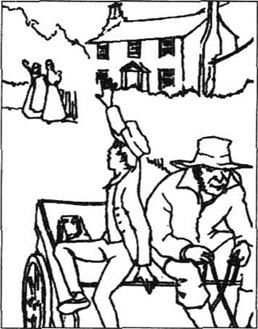
学校生活一切照常，直到两个月后我三月份生日的那天。我对那天的情景记忆犹新。那是个寒冷冰冷的一天，孩子们坐在冰冷的教室里不得不哈着热气搓手取暖。有人带给我口信让我去见克里古尔先生，我以为是辟果提给我送生日礼物来了，所以兴冲冲地来到了他的房间。一到那儿我意识到事情有些异常，因为是克里古尔先生的妻子等在那里，准备跟我谈话。
“大卫，孩子，”她握住我的手温和地说道，“我们都必须有思想准备，我们的亲人会随时离开我们。”
我看着她，竭力想理解她的意思。
“我很难过，”她继续道，“你母亲病得很厉害。”
我的眼前一片模糊，忽地，眼泪顺着脸颊往下流。我知道了真相。
“你母亲死了。”她说。
我大声地哭开了，感觉到自己已是个孤儿，孤单单一个人活在这世上。
克里古尔夫人亲自为我收拾行李，把我送上马车，回家参加葬礼。我当时没有想到我再也不能回萨伦学校了。
我到家时，辟果提在门口迎我，我们俩抱头痛哭。摩德斯通先生似乎很悲伤，几乎不跟我说话。摩德斯通小姐则带着她一惯严肃的表情（她和她兄弟都以此为荣）检查了一下我是否把我在学校的衣物都拿回来了。之后，她对我不再有任何兴趣。家里面死一般地寂静。辟果提把我带到楼上安放我母亲遗体的房间，还有我的小弟弟的遗体，他是在母亲去世数小时后死去的。房间里每一件东西都清新整洁，可我看不见母亲动人的脸，它再也不会对着我微笑，再也不会哭泣。
“怎么会这样，辟果提？”我抽泣着问道。
“她病了很长时间，大卫少爷。生完孩子后身体更虚了，你知道。她有时会闷闷不乐，而且容易忘事。但在我，在她的老辟果提看来，她一直没变。楼下那两位时常怒斥她，令她难堪，可她依然爱他们，你知道——她是那么的恬静可爱！她睡觉时我总坐在她身边，她说这样她感觉好受多了。”辟果提停了片刻，擦了擦眼泪，然后握住我的双手，“最后那天晚上，她向我要了点水喝，然后冲我那么欣慰地笑了笑！她看上去美极了！太阳开始升起，她把手枕在我的胳膊上，枕在她笨拙的老辟果提的胳膊上，像天真的孩童一般睡着了，永远地睡着了。”
母亲的葬礼结束后，我开始考虑我今后的安排。摩德斯通姐弟像是压根儿没注意到我的存在。他们叫辟果提离开，因为他们不想继续雇佣她。所以辟果提准备先去雅茅斯她兄弟家，直到她决定下一步干什么为止。她提出来想带我一起去度假，奇怪的是摩德斯通姐弟居然答应了。
就这样，第二天一早巴克斯先生驾着他的马车出现在门口，辟果提的行李随即被搬上了车。我们爬上马车，坐在他身边。就要离开旧居，离开她曾经与我和母亲度过快乐时光的地方，辟果提自然有些伤感，车刚启动她就轻轻地哭泣起来。可后来，当巴克斯先生看见她擦干了眼泪，情绪好了些时，他自己也愉快了许多，他悄声对我说：“巴克斯很愿意！你是那么说的吧！”他提高嗓门对辟果提说：“你感觉舒服点了吗？”
辟果提笑了，并回答说是的。
“你舒服点了吗，大卫少爷？”他问。
我说是的。巴克斯先生对这句话是如此的满意以至于一路上重复问了好几遍，辟果提和我只好一遍一遍给他同样的答复。
我们到达雅茅斯，下了马车，与巴克斯先生道别。丹尼尔和哈姆·辟果提在那里迎接我们。丹尼尔和哈姆和我记忆中的模样无异，依旧那么开心，那么坦荡，而小埃米莉却多少有些不同。她长高了，也更漂亮了，可她不再愿意和我一起玩，不情愿跟我待在一起。我很失望，因为我仍然认为她是我见过的最美丽的女孩，我想我爱上了她。丹尼尔和哈姆很为她的聪慧和美丽而自豪，当她笑着拒绝坐到我身边时，他们只是报以一笑。但他们都饶有兴趣地听我讲叙萨伦学校的故事。我跟他们讲其他孩子，尤其是那位英俊聪明的斯提福兹，我是如此佩服他以至于不停地告诉他们有关他的所有的事。突然，我注意到小埃米莉听得非常出神，她的蓝眼睛扑闪扑闪的，嘴角挂着笑容。当她发现我们大家都看着她时，她脸红了，并用双手捂住了自己的脸。
“小埃米莉跟我一样，”辟果提友好地说，“都想见见大卫的这位朋友——斯提福兹先生。”
那些天过得很愉快，尽管埃米莉和我不像以前那样一块儿玩了。巴克斯先生是这儿的常客，很快，辟果提向我解释，她决定嫁给他。
“我结婚后会照样爱你，大卫，亲爱的，”她把我拉到跟前说，“我随时都会坐车去看你。巴克斯是个好人，我相信跟他一起生活会很快乐。他有一所很不错的小房子，我会在那儿给你留一个小卧室，以备你随时使用。你的到来是永远受欢迎的。”
就这样，当我回到布兰德斯通时，辟果提已经成了巴克斯太太了。想到她能住上自己的房子，并有丈夫照顾她，我就很高兴。到家中，继父和他姐姐似乎并不乐意见到我，很明显，他们正设法寻找打发我的办法。因为考虑到学校开销太大，最后他们决定给我安排工作，尽管我当时只有10岁，并且看上去不到10岁。我被送到伦敦，在市区东郊一条小河旁的仓库里工作。
我的工作是洗刷那些用来装酒的瓶子，或者把灌了酒的瓶子集装成箱。他们只付我一星期6先令的工钱。那儿还有其他一些孩子和我一起干活，但我是唯一上过学的。所有仓库工人都很粗鲁、庸俗，他们已经习惯于在肮脏的环境下连续工作数小时。当我意识到我的生活从此之后便是这个模样，我就产生一种不可名状的恐惧。我为做这样的工作感到十分羞愧，我害怕我会把母亲和老师们教给我的知识都忘光。我再也找不到像特拉德和斯提福兹那样的朋友了，也不可能有更好的生活境遇。那一段生活我过得很不愉快。
我继父要求经理奎宁先生为我在伦敦寻找一处住处，所以第一天工作结束后我被叫到奎宁先生的办公室，并认识了一位大人物长相、脑袋像鸡蛋一样光亮的肥胖的中年男子，他叫米考伯先生。他给我提供了他们家正租用着的一所房子的一间空房，我答应接受，于是米考伯先生和我就一同回家了。
米考伯先生一家显然穷困潦倒，但他们尽量掩饰这一点。房子分为数层，有几间肮脏不堪的空房间，没什么家具。米考伯太太是个消瘦、一脸倦容的女人，怀里抱着婴儿，婴儿是双胞胎中的一个。我和这个家相处的经历中从未见到米考伯太太没抱孩子的时候。他们还有一个4岁的男孩和一个3岁的女孩。他们唯一的保姆是一个小孤儿。
“我从未想到，”米考伯太太带我看房间的时候伤心地说，“我结婚前和父母住在一起的时候，我从未想到我会穷到这个地步，但是，如今米考伯先生正处于困难时期，我当然必须接受这种现状。恐怕他是欠了很多钱，但他的债主得等一等。石头里是挤不出血来的，同样，目前任何人都不能从米考伯先生那儿逼出一分钱。”
我很快意识到无论是米考伯先生还是米考伯太太都没法弄到钱。米考伯先生仅有的一点收入远远不够，既不能让他的债主放心，也不能承担他那日见膨胀的家庭支出。所以，他的债主们就常常出现在他的家门口索取债务，而米考伯先生家中却常常是上顿不接下顿。米考伯夫妇的情绪会随境况的改变而改变。忽儿，米考伯先生看上去极其痛苦、消沉，忽儿，他又会边擦皮鞋边哼哼小曲儿准备外出。米考伯太太的性格很像她丈夫。有时，我走进家里见她躺在地上，头发蓬乱，表情疯狂而绝望。但一小时后，她就会兴高采烈地享受一顿丰盛的晚餐。
我和这些友善的人住了几个月就开始喜欢他们了。我用自己的工资买食物，因为我知道米考伯一家很难够自己吃的，而我的食物大致上也只是面包和奶酪。由于他们如此缺钱，有那么一两次我主动提出借他们几先令，但被他们拒绝了。然而，米考伯先生的债主们最终没有耐心再等待下去，就找来警察，以拖欠债务之名拘捕了米考伯先生。他被送往王家监狱，他要求我去那儿看他。我一到那儿就被带到他的房间，他早已在那里等我。他似乎痛心疾首，甚至还伤心落泪。
“这是我倒霉的日子，科波菲尔！”他抽泣道，“希望我的错误能给像你这样的年轻人一个警示！记住，如果一个人一年收入20英镑，花费19英镑19先令，结局是幸福，但假如他花费20英镑零1先令，结果就是痛苦！顺便问一下，科波菲尔，你能借我1先令买点啤酒吗？回家米考伯太太会还给你的。”啤酒买回来后，他似乎高兴了许多。我们俩愉快地过了一晚上，不停地讲故事，说笑话。
他在监狱里关了几个星期，其间我时常去探望他。有一次他告诉我他将很快被释放，因为他的债主们最终很不情愿地接受了米考伯先生无法偿债的事实，我真替他高兴。我回家时把这一消息告诉了米考伯太太，我们一起吃晚餐并开了一瓶酒以示庆祝。
“我想问问，夫人，米考伯先生获释后你们打算干什么？”我很礼貌地问了一句。
“我娘家人，”米考伯太太自豪地说道，“认为米考伯先生应该离开这儿去德文，去那儿展示他的经商兴趣。米考伯先生是个聪明人，科波菲尔少爷。”
“我相信他是。”我表示同意。
“尽管我娘家人还没有给他找到具体的事做，他们认为他应该为去德文时刻准备着，等待机遇的降临。”她放下空酒杯。
“您跟他一起走吗，夫人？”我问。
“我必须去！我一定去！”米考伯太太的声音高得都要尖叫起来，“他是我的生命！我的爱！我的丈夫！孩子们的父亲！我不能抛弃米考伯先生！要我那么做绝对不成！”
我觉得很尴尬，因为我压根儿就没让她抛弃他，但她很快又平静下来，吃完了她的晚餐。我开始习惯米考伯夫妇的情绪的大起大落了。
米考伯夫妇按预定计划离开伦敦的同时，我才意识到我在这个城市中将会孤身一人。我仍然讨厌仓库的工作，总想让自己生活得好一些。为此我考虑了很久，终于决定走唯一的一条路。我要去找我唯一活着的亲人，我父亲的姨妈贝茜·特拉伍德小姐，并争取她的帮助。我知道她住在肯特郡的多佛镇附近。我可以坐马车去，因为辟果提给过我10先令，她让我留着以备急需之用。现在是用这笔钱的时候了。
4．David and his aunt
4
David and his aunt
So, after helping the Micawbers to pack their few clothes, and waving goodbye to them at the coach station on their way to Devon, I went to the warehouse for my last day at work. I did not tell anyone I would not be coming back the following week. In the evening I packed my case, and put the ten shillings in the little purse Peggotty had once given me. I looked around for someone to help me with my case, which was rather heavy for me, and saw a tall young man with a horse and cart passing by.
'Could you please take my case to the coach station?' I asked him politely.
The young man put the case into his cart. Then, looking round quickly to make sure there were no witnesses, he pushed me roughly against the wall and took my purse out of my trembling hand. Before I could say a word, he had driven the horse and cart down the road and out of sight round the corner. I knew I would never see him, my case or my ten shillings again.
I sat down on the pavement and cried. Now I had lost everything I owned in the world, and had no money for the coach fare to Dover. In the end I decided I would have to walk there, and I started the long journey. It took me six days to cover the hundred kilometres, as I got tired very easily, and had to rest. I sold my jacket for a shilling, so that I could buy bread and milk on the way, and at night I slept in disused farm buildings or under trees. Sometimes I was afraid of the dangerous-looking beggars and thieves I met on the road, but I knew I had to keep going. As I walked, I thought of my mother's gentle, pretty face. I felt sure she would approve of what I was doing, and that encouraged me to continue.
But when I arrived in Dover, it seemed a much larger town than I had imagined. I spent a whole morning asking people if they knew where Miss Betsey Trotwood lived. Finally I found someone who recognized the name and showed me the way to her house. I stood at her front door, in the neat little garden, for a few moments, trembling with fear, and wondering what my aunt would think of me. My face and hands were dirty, my hair was unbrushed, and my clothes were torn and dusty. Perhaps she wouldn't even want to invite me into her house!
Just then a handsome but strict-looking grey-haired woman came out of the door towards me. I knew she must be my aunt.
'Go away!' she said crossly. 'I don't allow anyone to walk on my grass!'
'Please, madam,' I said bravely, 'please, aunt...'
'WHAT?' cried Miss Betsey in great surprise.
'Please, aunt, I'm your nephew.'
'Good heavens!' she cried, and sat down rather suddenly on the grass.
'I'm David Copperfield, your nephew's son, of Blunderstone in Suffolk, where you came on the night I was born, and saw my dear mother. I've been very unhappy since she died. My stepfather sent me to work in London, and I hated it, and ran away, and someone stole my case and my money, and I've had to walk all the way, and I haven't slept in a bed for six nights!' Here my selfcontrol broke, and I fell to the ground, sobbing bitterly.
My aunt jumped to her feet, picked me up and took me into her sitting-room, where she mixed some medicine in a glass and made me drink it. She also wrapped me in a large blanket and put me on her sofa. Then she rang the bell for her servant, Janet.
'Please ask Mr Dick to come here, Janet,' she said.
A tall, grey-haired, pleasant-looking gentleman entered a few minutes later, laughing rather strangely to himself.
'Now, Mr Dick,' said my aunt firmly, 'don't be a fool, because we all know you're intelligent.' Mr Dick looked very serious at once. 'No doubt you remember that I had a nephew, David Copperfield? Well, this is his son. He has run away.'
'Oh, really? David's son! Run away! Well!' said Mr Dick.
'Now the question is, Mr Dick, what shall I do with him?'
'Well—' Mr Dick looked vacantly at me, and then suddenly his eyes shone. 'If I were you, I would wash him!'
'Well done, Mr Dick! You always have the right answer!' said my aunt delightedly.
And so they washed me, and gave me clean clothes and delicious food. While I was eating, my aunt stared at me, occasionally whispering 'Good heavens!' to herself. When she could see that I felt better, she asked me question after question, and I told her the story of my life.
'Good heavens!' she said again, when I had finished. 'Why did your poor mother marry again? What a terrible mistake!'
'Perhaps she was in love,' suggested Mr Dick, smiling his rather foolish smile.
'In love!' said Miss Betsey crossly. 'Perhaps the poor silly girl thought she was in love! But now, Mr Dick, another question. What should we do with the boy?'
'Well—' said Mr Dick, thinking. Then an idea suddenly came to him. 'You should put him to bed!'
'Thank you again, Mr Dick, for your common sense!' said my aunt happily. 'Janet, put the boy to bed!'
And so, in a comfortable clean little bed, in a pleasant airy room at the top of Miss Betsey Trotwood's house, I floated away into the world of my dreams.
At breakfast next morning I bravely asked my aunt, 'Are you—have you—what's going to happen to me?'
'I've written to your stepfather,' she replied.
'Oh! Are you going to send me back to the Murdstones? Please don't, aunt! Please let me stay here!' I cried, trembling.
'I don't know what I'll do yet. We'll have to wait and see,' she answered firmly.
This news made me very depressed, but there was nothing I could do about it and my aunt soon began to talk about something else.
'What do you think of Mr Dick, child?'
'He looks a little—well, mad. Is he mad, aunt?'
'Well, his family called him mad, and wanted to lock him up for ever. But I met him, and thought—I still think—he's an extremely sensible, intelligent person. So I offered to take care of him, and he's lived in my house for ten years. Nobody knows what useful advice he's given me! I trust him completely!'
When I heard how generous my aunt had been to poor harmless Mr Dick, I began to understand her character better. In spite of her stern appearance and frequent crossness, she was very kind to people who needed her help. I hoped she would be kind to me.
Several days later, I was looking out of the sitting-room window when I saw Mr and Miss Murdstone riding into my aunt's garden. My aunt had seen them too, and hurried out, waving her umbrella angrily at them and shouting. 'Go away! Don't ride on my grass! Who do you think you are? Go away, I tell you!'
'Aunt!' I cried out. 'They're Mr and Miss Murdstone!'
'I don't care!' she shouted. 'Nobody is allowed to ride on my grass!' And she went back into her house, banging the door behind her. The Murdstones had to lead their horses out of the garden, and then return to ring the doorbell. They looked very uncomfortable and unsure of themselves. Janet showed them into the sitting-room, where my aunt, Mr Dick and I were waiting.
'Miss Trotwood—' began Mr Murdstone, stepping forward.
'Excuse me,' said my aunt sharply. 'I imagine you are the Mr Murdstone who married my nephew's widow. In my opinion, it would have been much better if you had never married the poor child.'
'I agree with you, Miss Trotwood,' said Miss Murdstone, smiling falsely. 'My brother would certainly have been happier if he hadn't married her, because I consider poor dear Clara was, in fact, just a child.'
'Fortunately,' said my aunt, 'you and I, madam, are too old and plain for anyone to say that about us.'
Miss Murdstone did not seem eager to agree to this. Her brother, however, wanted to get down to business.
'Miss Trotwood,' he said, a little crossly, 'having received your letter, I've come to explain to you, in case you haven't realized it yet, that this boy is extremely wicked and violent. Both my sister and I have tried to change his character, but sadly we have failed.'
'I must add,' said Miss Murdstone, 'that of all the boys in the world, I believe this is the worst boy.'
'I see,' said my aunt. 'Now tell me, has David inherited any money from his father or mother?'
'No, madam,' answered Mr Murdstone. 'My dear Clara naturally trusted me to take care of David, and I'm ready to do that, if he comes back with me now. But I alone shall decide what to do with him, Miss Trotwood—understand that. I am here, for the first and last time, to take him away. If you decide to keep him with you, you keep him for ever.'
'What do you say, David?' asked my aunt, turning to me.
'Please don't let me go with them, aunt!' I begged. 'They've always been unkind to me, and they made my mother very unhappy. I'll be so miserable if I have to go back with them!'
'What do you think, Mr Dick?' asked my aunt.
Mr Dick thought for a moment. 'Get a suit of clothes made for him immediately,' he said.
'What would I do without you, Mr Dick!' asked my aunt, shaking his hand enthusiastically. Then she turned to Mr Murdstone.
'You'd better go. I'll keep the boy and take my chance with him. I don't believe a word of your story. Do you think I don't know how you broke that poor girl's heart? And how you hated her son, and punished him for it? I can see by your face that I'm right.' We all stared at Mr Murdstone. It was true that his face was white and he was breathing fast. 'Goodbye, sir, and goodbye to you too, madam,' added my aunt, turning suddenly to Miss Murdstone. 'If I see you riding on my grass again, I'll knock your hat right off your head!'
The Murdstones said nothing in reply to these fierce words, but walked quickly out of the house.
'Thank you, thank you, aunt!' I cried. 'I'll do my best to make you proud of me!' and I kissed her many times.
'Mr Dick, you and I will adopt this boy together,' said my aunt, her stern expression softening into a smile.
And so a new life began for me. I was soon able to forget the warehouse and the Murdstones, in learning to please my aunt, and to play games with Mr Dick, who spent much of his time with me.
But one day my aunt suggested that I should go to boarding school in Canterbury. I was delighted, as I was eager to continue my studies, and Canterbury was very near my aunt's home in Dover. So the next day my aunt and I went to Canterbury, where I admired the beautiful old buildings in the ancient city centre.
'Is it a large school, aunt?' I asked politely.
'I haven't decided which school you'll go to yet,' she replied. 'First we're going to ask my old friend Mr Wickfield's advice about it. He lives and works in Canterbury, you see.'
Soon we stopped in front of a very old house, with a very clean front doorstep, and fresh white curtains at the windows. A strange-looking person, dressed in black, with short red hair and a very thin white face came out to meet us. I thought he must be a servant. He was about fifteen, but looked much older.
'Is Mr Wickfield at home, Uriah Heep?' asked my aunt.
'He is, madam,' replied Uriah, smiling unpleasantly. He showed us into the sitting-room, where I noticed two large paintings on the wall, one of a grey-haired gentleman and the other of a lady with a sweet, gentle face. Just then a gentleman entered the room, looking a little older than his picture. I soon discovered he was Mr Wickfield, my aunt's lawyer.
'Mr Wickfield,' said my aunt, 'this is my nephew. I have adopted him, and I want to send him to a good boarding school here in Canterbury. Can you help me find a school for him?'
Mr Wickfield thought for a moment. 'There's a very good school I can recommend, Dr Strong's, but the boy can't board there, and it's too far to travel from Dover every day. However, he could live here, if you liked, in my house. There's plenty of room for him.'
'That's very kind of you, Mr Wickfield. I'll pay you for his food, of course,' said my aunt.
'Come and meet Agnes, who takes care of everything and manages the house,' said Mr Wickfield. We all went upstairs to another sitting-room, prettily furnished, where a girl of my own age was sitting. On her face I saw immediately the beautiful, calm expression of the lady in the painting downstairs, and I knew she must be Mr Wickfield's daughter, Agnes. When I saw the way Mr Wickfield looked at Agnes and held her hand, I realized that she was the only thing that made life worth living for him. The lady in the painting was her mother, who had died some years before, and Agnes was now in complete charge of the house. She welcomed me warmly as a guest, and showed me the comfortable bedroom I would sleep in. My aunt was very happy to leave me in the care of Mr Wickfield and his daughter.
'I must leave now, David,' she told me. 'Mr Wickfield will take you to school tomorrow, and make all the arrangements. I'm sure you will work hard, and do well.'
'Thank you, aunt!' I said, trying not to cry. 'And give my love to Mr Dick! And thank you again!'
When she had gone, I dried my tears and spent a pleasant evening with the Wickfields. We ate supper and talked in the pretty little sitting-room. Agnes played the piano and tried to amuse her father, but he often looked serious and rather sad. During the evening he drank a good deal of wine. I wondered why he seemed unhappy.
The next day I had my first experience of a well-organized school. It could not have been more different from Salem House. The headmaster, Dr Strong, was a gentle, kind man who enjoyed teaching and never punished anybody. I soon made friends with the other boys, and as time went on, with the teachers too. But although I liked school very much, I was always happy to return to the Wickfields' quiet house every evening. There, Agnes used to help me with my studies and listen sympathetically to my problems, and her father always seemed pleased to see me. I often wrote to my aunt and Peggotty, and Mr Dick came to visit me once a week.
The strangest person in my new life was Uriah Heep. Soon after I arrived in Canterbury, we had a conversation one evening. He was doing a lot of Mr Wickfield's work, and was working late in his small office, just off the hall of the Wickfields' house.
'Come in, come in, Master Copperfield!' he cried when he saw me passing the door. I entered, and found him reading a large dusty book, and making careful notes in a notebook.
'What are you studying, Uriah?' I asked politely.
'I'm going to be a lawyer,' he replied, rubbing his thin hands together and smiling his oily smile.
'You're Mr Wickfield's assistant, aren't you? Perhaps one day you'll be his partner,' I said, trying to make conversation.
'Oh no, Master Copperfield!' cried Uriah, rolling his eyes upwards. 'I could never rise so high! No, I'm much too humble for that! But thank you, Master Copperfield, for thinking kindly of me. And may I say, that if ever you have the time (and I'm sure a young gentleman like you is much too busy to spare the time for a poor person like me), my mother and I would be glad to offer you a cup of tea at our humble home.'
'Of course—if I have time,' I answered, and left the room quickly. I did not feel comfortable with him, for some reason.
But the following week he invited me to tea again, and I did not want to appear rude, so I agreed. That evening he and I walked to the small house where he lived with his mother. It was a warm day and we were drinking our tea near the open door when a gentleman I recognized passed by. It was Mr Micawber! He saw me sitting near the door and called out. 'Copperfield! Is it really you?'
I was delighted to see him again, and Mrs Heep invited him in for some tea. I had to introduce him to the Heeps, but I did not think that Uriah would be a good influence on Mr Micaw ber. However, I was interested to discover that the Micawbers were now living in Canterbury, as nothing had 'turned up' in Devon. They seemed to be very short of money again, and surrounded by creditors as usual. I left the Heeps' house as soon as possible, taking Mr Micawber with me, as I did not want him to tell Uriah all about my life at the warehouse in London.
And so the years passed. I learnt everything that Dr Strong and his teachers could teach me, and at seventeen, came to the end of my schooldays. My aunt suggested that, before deciding what profession to choose, I should spend a month in London or travelling round the country. This would give me time to consider my next step. I agreed enthusiastically, and although I was sorry to say goodbye to my sweet friend Agnes and her father, I was looking forward to leading the life of an independent young gentleman.
witness n. person who was actually present at an event and should, for this reason, be able to describe it 目击者。
out of sight 看不见的。
pavement n. paved way at the side of a street for people on foot（街边）人行道。
own v. possess, have as property 拥有。
in the end 最后。
thief n. person who steals, esp. secretly and without violence 贼，小偷。
approve of give one's approval of 赞成，同意，认可。
recognize v. identify again (sb. or sth.) that one has seen, heard, etc. before 认出，认明。
nephew n. son of one's brother or sister 侄儿，外甥。
Good heavens! 天啊！
medicine n. substance, esp. one taken through the mouth 药，药剂。
wrap v. cover or roll up 包，卷。
blanket n. thick, wollen covering used on beds 毯子。
run away 逃走。
delicious a. giving delight to the senses of taste and smell 美味的。
common sense 常识。
float v. be held up in air, gas or on the surface of liquid 漂浮。
reply v. answer 回答。
lock sb. up put (a person) in a locked room in a prison, a mental home 将（某人）锁在房间、监狱、疯人院。
stern a. severe, strict 严厉的，严肃的。
wave v. move to and from, up and down 挥舞，摆动。
bang v. hit violently, shut with a noise 猛击，砰然关上。
in my opinion 依我看来。
in fact 事实上。
plain a. (of a person's appearance) not pretty or handsome（指人的容貌）不美的，不漂亮的。
eager a. full of, showing strong desire 热切的，渴望的。
in case because of a possibility 万一。
wicked a. (of a person, his acts) bad, wrong, immoral（指人，某行为）坏的，错的，不道德的。
inherit v. receive property as heir 继承。
trust v. allow (sb.) to do sth. without anxiety, knowing that he will act sensibly 对某人放心，信得过。
a suit of clothes 一套衣服。
take one's chance trust to luck 碰运气。
fierce a. violent and angry 愤怒的。
adopt v. take (sb.) into one's family as a relation with legal guardianship 以合法监护人身份将某人收养。
ancient a. belonging to times long past 古代的。
recommend v. speak favourably of, say that one thinks sth. is good for a purpose 推荐。
plenty of 很多。
board v. get meals for a fixed weekly/monthly payment 包饭，供膳。
furnish v. put furniture in 布置家具于。
furnished 备有家具的。
in charge of 负责。
guest n. person staying at or paying a visit to another's house 宾客，客人。
make all the arrangement 安排一切。
a good deal of 大量的。
oily a. (of speech or manner) too smooth, fawning, trying by fawning to win favours （指言语或态度）太圆滑的，奉承的。
assistant n. helper 助手。
partner n. person who takes part with another or others in some activity, esp. one of the owners of a business 合伙人，伙伴。
humble a. obscure and unimportant 卑下的。
for some reason 因为某种原因。
rude a. impolite, not showing respect or consideration 无礼的。
be short of 缺乏。
be surrounded by 被……围困，被……围绕。
as usual 如平常。
profession n. occupation 职业。
sweet a. pleasant or attractive 可爱的，有吸引力的。
lead v. spend (life) 过（生活）。
4 大卫和他的姨婆
4 大卫和他的姨婆
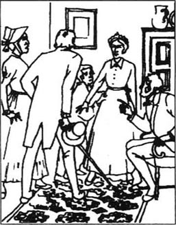
就这样，帮着米考伯夫妇整理好不多的衣物，把他们送到去往德文的马车站，与他们挥手告别后，我来到仓库干完了最后一天的活。我没有向任何人透露下星期将不再回来工作。晚上，我整理好自己的提箱，把10先令放进辟果提给我的小钱包里。我四处张望，希望有人能帮我提这个对我来说还太沉的箱子，这时过来一位赶马车的高个子青年。
“您能帮我把这个箱子带到马车站吗？”我很礼貌地问道。
那青年人把箱子放到马车上，然后环顾四周，确信周围没有外人时，就狠狠地把我推倒在墙边，并把钱包从我发抖的手中夺走。我还没来得及叫喊，他已经驾着马车上路，一拐弯就不见了。我知道我再也见不着他了，再也见不着我的钱包和我那10个先令了。
我站在路边哭泣。我失去了我所有的东西，而且也没有了去多佛的路费。最后我决定步行到那儿，就开始了长途跋涉。100多公里的路程我走了6天时间，因为我走不多久就累了，只好休息下来。我把茄克衫卖了，换来一先令钱买路上吃的面包和牛奶。到晚上，我就睡在废旧农场的木屋里或者大树下。有时在路上遇上一些满脸凶相的乞丐和小偷让我很害怕，但我知道我必须继续走下去。我边走边想象我母亲慈爱、动人的脸，我肯定她会支持我的做法，这种想法激励着我继续前进。
然而，当我走到多佛时才知道这个小镇比我想象得要大得多。我整整花了一上午时间打听贝茜·特拉伍德小姐的住处。最后，终于有一个人知道这个名字并指给我到她家的路。我在她门前的小花园里站了一会儿，害怕得直打哆嗦，不知道姨婆会怎么看我。我满脸污垢，两手肮脏不堪，头发蓬乱，衣服又脏又破。或许她都不欢迎我进她的房子！
正在此时，门口出现一位端庄、严肃的灰头发妇人，她向我走来，我想她肯定是我的姨婆。
“走开！”她愤愤地说，“我不许任何人踩我的草地！”
“求您，夫人，”我鼓足勇气说道，“求您，姨婆…”
“什么？”贝茜小姐十分震惊地叫道。
“求您，姨婆，我是您的重外甥。”
“天哪！”她叫了一声，忽地坐在了草地上。
“我是大卫·科波菲尔，您外甥的儿子，在萨福克郡的布兰德斯通。我出生的那天晚上您来过，并见了我亲爱的母亲。自从她去世后我非常不幸。继父把我送到伦敦干活，我恨死了，跑了出来，我的箱子和钱都被人偷走了，我只好一路步行到这儿，我6个晚上没有挨着床了！”说到这里，我再也抑制不住自己，倒在地上痛哭起来。
姨婆迅速站起来，扶起我，把我带到客厅，并拿来一些药化在杯子里让我喝了。她用一块大毯子把我裹住，放在沙发上。然后摇了摇铃，招呼她的女仆詹妮特。
“叫迪克先生到这里来，詹妮特。”她说。
几分钟后，一位高个子、灰头发、面色和悦的先生十分古怪地笑着走进来。
“现在，迪克先生，”姨婆严肃地说，“别装傻了，因为我们都知道你很聪明。”迪克先生立刻严肃起来。“你肯定记得我有过一个外甥，叫大卫·科波菲尔。这位，就是他的儿子，他跑出来了。”
“哦，是吗？大卫的儿子！跑出来了！啊？”迪克先生说。
“现在的问题是，迪克先生，我应该怎么办才好？”
“嗯，——”迪克先生神情茫然地看着我，突然他两眼放光，“我要是你，就先他给他洗洗澡！”
“很好，迪克先生！你总会有正确的答案！”姨婆兴奋地说道。
于是他们就为我洗澡，给我干净的衣服和美味的食物。我吃饭的时候，姨婆盯着我看，偶尔自叹一声“我的天！”。她见我感觉好些了就一个问题接一个问题地问我，我就把我的生活经历统统讲给她听。
“我的天！”我讲完后，她又说了一句，“你可怜的母亲为何要改嫁呢？她犯了个多大的错误呀！”
“或许是出于爱情。”迪克先生猜测道，嘴角挂着笨拙的笑容。
“爱情！”贝茜小姐愤愤地说道，“或许是因为这位可怜的傻女孩自己认为谈上了恋爱！但是，现在，迪克先生，另一个问题是，我们拿这个孩子怎么办？”
“嗯——”迪克先生思索着说道。然后，他突然想出了一个主意，“你应该带他上床睡觉！”
“再次感谢你，迪克先生，你真懂常理、知常情！”姨婆高兴地说道，“詹妮特，带这个孩子去睡觉！”
就这样，在贝茜·特拉伍德小姐的房子顶层，在安逸的卧室里，在一张干净而舒适的小床上，我进入了梦乡。
第二天早餐时分，我鼓起勇气问姨婆：“您打算——您准备——我今后会怎么样？”
“我已经给你继父写了信。”她回答。
“啊！那您准备把我送回给摩德斯通姐弟吗？求您别这样，姨婆！求您让我留在这里。”我哭起来，声音发颤。
“我还不知道怎么办，我们必须等等看。”她严肃地说。
这一消息令我很沮丧，但我也毫无办法。姨婆立刻转入了别的话题。
“你认为迪克先生怎么样啊，孩子？”
“他有点儿——嗯，不正常。他是不太正常吧，姨婆？”
“嗯，他的家人认为他不正常，想把他锁起来，但我看见他的时候我认为——我至今认为——他是一个非常敏感、聪慧的人，所以我主动提出照顾他。他在我这儿住了10年了，没人知道他给我提的建议多么有益，我完全信赖他。”
听到姨婆对可怜无邪的迪克先生如此豁达时，我更了解她的性格了。尽管她看上去很严厉，而且常常满脸怒容，但她对需要帮助的人非常热心。我希望她对我也热心。
几天后，透过客厅的窗户我看见摩德斯通先生和小姐骑马来到了姨婆的花园，姨婆也看见了他们，急匆匆地出去，挥着伞气愤地冲他们喊，“走开，别踩着我的草地，你们是什么人，走开，我警告你们！”
“姨婆！”我叫道，“他们是摩德斯通先生和小姐！”
“我才不管呢！”她嚷道“任何人都不允许践踏我的草地！”她走进屋子，“嘭”地一声关上门。摩德斯通姐弟只好把马牵出草地，退回去按门铃。他们似乎很尴尬、很不自信。詹妮特把他们带进了客厅。姨婆、迪克先生和我还等着他们。
“特拉伍德小姐——”摩德斯通先生上前一步说道。
“对不起，”姨婆尖锐地说，“我想你就是那位娶我外甥的遗孀作妻子的摩德斯通先生吧。依我看，你要是不娶那位可怜的女人，情况就会好多了！”
“我同意您的说法，特拉伍德小姐，”摩德斯通小姐装出一副笑脸说道，“我弟弟当初要是没娶她当然会更幸福，因为我认为，可怜的克拉拉实际上只是个孩子。”
“幸运的是，”姨婆说，“你和我，女士，都太年老、太平庸，不值得任何人来说我们。”
摩德斯通小姐对这点似乎不急于表示同意。而她弟弟则希望尽快转入正题。
“特拉伍德小姐，”他说道，显得有点生气，“收到您的信我就赶来向您解释，以免您还蒙在鼓里。这孩子极为恶劣、粗暴，我姐姐和我坚持想改变他的性格，可遗憾的是，我们都失败了。”
“我必须补充一点，”摩德斯通小姐说道，“这世界上所有的孩子中，我相信他是最坏的一个。”
“我明白了，”我姨婆说，“好吧！现在告诉我，大卫从他父亲或母亲那儿继承到钱了吗？”
“没有，女士，”摩德斯通先生回答道，“我亲爱的克拉拉自然相信我能照顾好大卫，我也准备这么做，要是他现在跟我回去。我会自己决定该怎么对待他，特拉伍德小姐——明白了吧？我到这里来是第一次，也是最后一次，来把他带走。如果您决定把他留下，那您就永远留着他吧。”
“你说呢，大卫？”姨婆转过来问我。
“请不要让我跟他们走，姨婆！”我恳求道，“他们对我一向残酷，他们让我母亲不幸福。要是我跟他们回去，我会痛苦不堪！”
“你的意见呢，迪克先生？”姨婆问道。迪克先生想了一想，“给他弄块布来，立刻做套衣服。”他说道。
“离了你我真是什么也干不了，迪克先生！”姨婆热情地握住他的手说道。然后，她转身对摩德斯通先生说：
“你最好走吧。我会留下这孩子，看他到底是什么样的孩子。我不相信你说的任何一句话，你认为我不知道你是怎么伤透那位可怜的女孩的心，你是怎样恨她的儿子并因此而惩罚他？我可以从你脸上看出我是对的。”我们都盯着摩德斯通先生看，他的脸的确很苍白，并且呼吸急促。“再见，先生。还有你，女士。”姨婆突然转向摩德斯通小姐，补充道，“要是我再看见你踏进我的草坪，我会把你的帽子从你的脑袋上敲掉！”
摩德斯通姐弟对这些严厉的措词没做任何回答，他们很快走出了房间。
“谢谢您，谢谢您，姨婆！”我叫道，“我会尽力让您为我自豪！”我亲了她好几下。
“迪克先生，你和我将一起收养这个孩子。”姨婆说着，严肃的表情转化成一丝微笑。
自此，我的新生活开始了。我努力让姨婆高兴，并和迪克先生玩游戏，他大部分时间都和我在一起，这样我很快就忘记了仓库和摩德斯通姐弟。
可有一天，姨婆提议我应该到坎特伯雷寄宿学校去上学。我很高兴，因为我自己急切希望能继续学习，而坎特伯雷离多佛的姨婆家又很近。于是，姨婆陪我来到了坎特伯雷，我很欣赏这座城市中心美丽的旧式建筑。
“那是一所很大的学校吗，姨婆？”我很有礼貌地问道。
“我还没决定你上哪所学校，”她回答，“我们首先要听听我的老朋友威克菲尔先生对此的看法。他就住在坎特伯雷，在这儿工作，明白了吧。”
很快，我们在一幢十分古旧的房子前停了下来。门前的台阶十分干净，窗户挂着洁白的窗帘。有一位相貌古怪、身着黑衣、留红色短发、面孔精瘦苍白的男子出来迎接我们。我想他一定是这家的仆人。他大概15岁，但看上去要大得多。
“威克菲尔先生在家吗，尤赖亚·希普？”姨婆问他。
“在家，小姐。”尤赖亚回答，不自在地笑了笑。他领我们进了客厅，我注意到客厅墙上挂着两幅画像，一幅是位灰头发男子，另一幅是位恬静、温柔的女士。这时，一位先生走进客厅，显得比画像上的老些。我立刻意识到他就是威克菲尔先生，我姨婆的律师。
“威克菲尔先生，”姨婆说道，“这是我的外孙，我收养了他，我想送他上一所较好的寄宿学校，就在坎特伯雷城，您能帮我找一所吗？”
威克菲尔先生想了一会儿，“我可以推荐他去一所非常好的学校，斯特朗博士学校，可学生不能寄宿，而且每天从多佛赶到这里也太远了。不过，他可以住在这儿，在我家，如果您愿意的话。家里有的是空房间。”
“您真是太好了，威克菲尔先生。当然他的生活费由我负担。”姨婆说。
“来吧，见见阿格尼斯，她掌管着家里的一切。”威克菲尔先生说。我们来到楼上的另一个客厅，这里的陈设非常漂亮，一位年龄跟我相仿的姑娘坐在那儿。从她脸上我立刻看出了楼下画像中那位女士的那种美丽、安详的神情。我想她一定是威克菲尔先生的女儿阿格尼斯。从威克菲尔先生看阿格尼斯的眼神中和他握她手的方式中我意识到她是他生活中的唯一寄托。画像上的女士是她的母亲，几年前去世了，现在的这个家完全由阿格尼斯负责。她把我当成贵宾一样热情招待，并带我看了为我准备的舒适的卧房。姨婆很放心把我交给威克菲尔先生和她的女儿照顾。
“我要走了，大卫，”她跟我说，“威克菲尔先生明天带你去学校，并为你安排一切。我相信你一定会好好学习，干出成就的。”
“谢谢您，姨婆！”我说道，尽力忍住不哭，“并代我问候迪克先生！再次感谢您！”
她走后，我擦干眼泪，和威克菲尔一家度过了愉快的一晚。我们就在这美丽的客厅里吃晚餐，聊天。阿格尼斯弹奏钢琴，设法取悦她父亲，可他总是很严肃，很忧郁。一晚上他喝了好多酒，我不知道他为什么显得不高兴。
第二天，我第一次感受到了一个正规学校的气氛。它与萨伦学校有着天壤之别。校长斯特朗博士温和、友善，热爱教学，从不惩罚任何人。不久我就和这里的孩子们成了朋友，而且时间一长，跟老师们也成了朋友。然而，尽管我非常喜欢学校，我还是很高兴每天晚上回到威克菲尔先生那安静的家。在那儿，阿格尼斯常常帮助我做功课，并极为同情地听我诉说我的难题。她父亲见着我也总是显得很高兴。我常写信给姨婆，给辟果提，迪克先生每星期都来看我一次。
我新生活中遇到的最奇特的人物就是尤赖亚·希普。我到坎特伯雷后不久，一天晚上我们进行了一次谈话。威克菲尔先生的很多事情都由他在做，他在他的小办公室里干得很晚，那间办公室离威克菲尔先生家的大厅很近。
“进来，进来，科波菲尔少爷！”他看见我从门前经过就叫住了我。我进去了，见他正在读一本厚厚的、满是灰尘的书，并认真地做着笔记。
“你在学什么，尤赖亚？”我礼貌地问道。
“我准备做一名律师，”他边说边搓着他细瘦的手指，讨好地笑了笑。
“你是威克菲尔先生的助手，是吗？或许哪天你会成为他的合作伙伴。”我没话找话地说道。
“哦，不，科波菲尔少爷！”尤赖亚叫起来，两眼往上一翻。“我不会升得这么高！不，我太卑微，够不上那种职位！但还是谢谢你，科波菲尔少爷！谢谢你能这么看我。恕我冒昧，如果你有时间（我肯定像你这样的年轻人会忙得匀不出时间给我这样的可怜人），我母亲和我很高兴邀请你去我们卑微的家里喝杯茶。”
“当然可以——只要我有时间。”我回答道，并很快离开了房间。不知什么原因，跟他在一起我感到很不自在。
紧接着的第二个星期，他再次邀请我去喝茶，我不想失礼，所以同意了。那天晚上，他带我到了他和他母亲居住的小屋子。那天天气暖和，我们坐在敞开的门边喝茶，这时有一个我熟识的身影从门口走过。是米考伯先生！他见我站在门口就叫起来，“科波菲尔！真的是你吗？”
我很高兴和他重逢，希普太太邀请他进屋喝茶，我只好把他介绍给希普母子。但我并没想到尤赖亚后来会对米考伯先生产生巨大的影响。不管怎么说，我感兴趣的是知道米考伯一家现住在坎特伯雷，因为在德文并没出现“转机”。他们似乎又缺钱了，又像以前那样债台高筑。我尽快离开了希普家，把米考伯先生带出来，因为我不想让他告诉尤赖亚我在伦敦仓库工作时的全部生活。
一晃几年过去了，我学到了斯特朗博士和老师们能教给我的所有知识。17岁那年我的学生生涯结束了。姨婆建议我在决定选择职业前先去伦敦或附近的城镇度一个月假，这样可以有充分的时间考虑一下下一步的打算。我热切地表示同意，尽管与恬静的朋友阿格尼斯和她父亲道别令我难过，我还是期望能过一种独立的、年轻人的生活。
5．David meets old friends again
5
David meets old friends again
I decided to go to London first, to stay at a hotel for a few nights, and see all the sights of that great city. I knew it would be very different from the last time I was in London, when I was working at the warehouse. Now I was adult, and educated, and had money.
The hotel I chose was called the Golden Cross, and because I looked so young, I was given a very small, dark room in the roof. But I did not feel confident enough to complain.
That evening I was returning from the theatre when I recognized someone going into the hotel. I could not prevent myself from saying at once, 'Steerforth! Do you remember me?'
He stared at me for a moment. Then he cried, 'Good heavens! It's little Copperfield!'
I was so delighted to see him that I held both his hands, saying, 'My dear Steerforth, you have no idea how pleased I am to see you again!' I remembered how much I had admired him, and all my love for him came back. I had to brush away the tears from my eyes.
'Don't cry, Copperfield, old boy!' he said kindly. 'I'm glad to see you too. What are you doing here?'
'I've just finished school, and my aunt has sent me to London to look around before deciding on a profession. What about you, Steerforth?'
'Well, I'm studying at Oxford University, but nothing exciting ever happens there! That's why I'm in London for a few days. But it's boring here too, isn't it?'
'In London?' I asked, surprised. 'I think it's wonderful! There's so much to do and see! I've just been to the theatre—the actors were excellent and—'
'David, David!' laughed Steerforth. 'It does me good to see your fresh, innocent face, so full of excitement! Now, let me see, which room are you staying in?'
'Number 44. It's rather high up,' I confessed, blushing.
'They've put you in number 44? I'll soon change that.' And when Steerforth complained to the manager, I was immediately given a large, airy, comfortable room on the first floor, next to his. That night as I fell asleep I thought happily of the next few days, which Steerforth and I were planning to spend together.
A week passed very quickly, with visits to the theatre, the museums and the zoo. We went sightseeing, riding, swimming and boating. Steerforth was the perfect companion to have, and I admired him even more than before. In fact, I loved him with all my heart.
One day I said to him, 'You know, Steerforth, I really must go and visit my mother's old servant, Peggotty. She was very good to me when I was a child.'
'Yes, David, I remember you told me. She lives in Yarmouth now, doesn't she? Why don't we go there together?'
'Oh yes, Steerforth! You'd enjoy meeting her brother, and all the family! They're very kind, good people.'
'Even if they are only working people,' said Steerforth. I looked quickly at him to see what he meant, but he was smiling at me, so I knew he was joking, and I smiled too.
We travelled to Yarmouth by coach, and when we arrived, Steerforth stayed at the hotel while I went to Barkis's house to find Peggotty. When I knocked at the door, Peggotty opened it, and did not recognize me for a moment. I had continued to write to her regularly, but we had not seen each other for seven years, and I was no longer the small boy she remembered. But when she realized I was her Master David, she sobbed and sobbed with delight, holding me in her arms as she had always done. Soon she was calmer, and we talked about the events of the last few years. I heard that she was very happy with Mr Barkis, who, however, was ill in bed at the time. She was so pleased to see me that she insisted I should sleep at her house during my stay in Yarmouth, in the little bedroom she had always kept for me.
The next day I took Steerforth with me to visit Daniel Peggotty. It was a dark and windy winter evening. As we came closer to the old boat, we heard happy voices and laughter inside. I opened the door, and suddenly I was surrounded by Daniel, Ham and Emily, all looking very surprised.
'Look! It's Master David! Look how he's grown!'
And for a moment we were all shaking hands and talking and laughing at the same time. I did not forget to introduce Steerforth. They welcomed him warmly as my best friend.
'Well!' cried Daniel Peggotty, his large face red and shining with delight. 'It's wonderful, Master David, that you two gentlemen have come here tonight of all nights! The best night of my life! Because tonight, gentlemen, my little Emily—' and he took Emily's small white hand in his rough red one and placed it on his heart—'has agreed to become Ham's wife!'
'I congratulate you with all my heart,' said Steerforth politely to Ham, without taking his eyes off Emily, who was blushing prettily.
'Master David knows how I love this girl,' continued old Daniel, 'and my dearest wish was for her to have a good husband to take care of her. And there's no one I trust more than Ham! He's only a rough sailor like me, but he's honest, and sincere, and I know she'll come to no harm while he lives!'
Meanwhile, Ham was blushing too. I did not know what to say, unsure whether I still loved Emily and was therefore jealous of Ham, or whether I was glad they were going to be happy together. But Steerforth always knew the right thing to say, and with a few well-chosen words he made us all feel much more comfortable.
We spent the rest of the evening very pleasantly, telling stories and singing songs, and it was midnight when Steerforth and I left the old boat.
'Well!' said Steerforth to me as we walked across the sand in the cold night air. 'What a lovely girl! And what a coarse young man she's engaged to!'
I was shocked by these unexpectedly cold words. But when I turned to him and saw him smiling, I replied warmly, 'Ah, Steerforth! You pretend to laugh at people who are poorer or less educated than yourself, but I've just seen you spend the whole evening with the Peggotty family, making them happy! I know you understand and love them, and I admire you all the more for it!'
He stopped and looked at me, saying rather sadly, 'David, you're serious, aren't you? I wish I were as good as you!'
For the next two weeks I was often with Peggotty and Barkis, while Steerforth went sailing or fishing with Daniel and Ham, or found other things to do, so I did not see very much of him. Finally we decided to return to London.
While we were travelling back on the coach, I turned to say something, and was surprised to see how miserable he looked
'Oh, David!' he said unhappily. 'I wish I could control myself better! I hate myself sometimes!'
'Steerforth! What can you mean!' I cried. 'You're the best, the most intelligent, the kindest of men!'
'Thank you, David,' he said, shaking his head, 'but you don't know how bad I am.'
'Bad!' I repeated. 'My dear Steerforth! Don't say that! I know your character well, and I'm proud to call you my friend!'
In a little while his mood changed, and he became cheerful again. I soon forgot his words, but I remembered them later.
In London I discovered that my aunt had arrived at the Golden Cross Hotel, and had booked a room there for several days. We were delighted to see each other, and had a long conversation that evening. She had come to ask me a particular question.
'David,' she said very seriously, 'I've been thinking about your future profession. How would you feel about becoming a lawyer?'
I thought for a moment. 'Well, aunt, it sounds a very good idea. I confess I hadn't considered it before, but I think I'd like it.'
'Very good,' said my aunt, jumping up. 'In that case, let's go immediately to see Mr Spenlow. He's a partner in an important law firm, and I think he'll agree to train you. We'll have to pay him, of course, but after several years you'll be a properly trained lawyer, and be able to earn your own money.'
And so we carried out this plan. My aunt paid Mr Spenlow's firm a thousand pounds, and I promised to work hard and do my best to become a successful lawyer. Before she returned to Dover, my aunt rented a small flat for me, at the top of a house near the lawcourts, and I moved in at once.
At first it seemed very exciting to walk through the busy streets after a long day in the courts or at Mr Spenlow's dusty office, and know that I had my own home to return to. But when I had climbed up all the stairs, and entered my sitting-room, it no longer seemed so exciting. In fact, my flat looked empty and depressing. So, after two days of loneliness, I was very glad to receive my first visitor, Steerforth, and because I was so happy to see him, I invited him and two friends of his to dinner the next evening.
As it was my first dinner party, I did not know what to buy, but I ordered cooked dishes of chicken and fish from the restaurant, bought cheese and fruit from the market, and had a large number of bottles of wine delivered. I was quite frightened by how much money I had spent, but when Steerforth and his friends arrived, I soon became more cheerful. The party was a great success, and we all enjoyed ourselves very much. We ate, and drank, and smoked, and drank again. I was constantly opening bottles of wine, and became unusually talkative. I began to feel rather strange, and when. I caught sight of myself in a mirror, I seemed very pale. I had to confess to myself that I looked drunk.
Someone suggested going to the theatre, and in a kind of mist we left my flat and walked through the streets. Steerforth was holding my arm and laughing. Then a man in a little box looked out of the fog, and took money from somebody. Soon we were sitting high up in a very hot, very crowded theatre. There were bright lights, and there was music, but I could not understand what anyone was saying, and the whole building seemed to swim in front of my eyes.
Then someone suggested going to visit some friends in another part of the theatre, so we went downstairs. Suddenly I saw, quite clearly, Agnes Wickfield, sitting with a lady and a gentleman. She was looking at me with a surprised expression on her face.
'Good heavens!' I cried. 'Agnes! You're in London!'
'Quiet!' she whispered. 'People are trying to listen to the actors. You'll disturb them!' Then she added kindly, 'David, please do what I say. Ask your friends to take you home.'
I had always taken Agnes's advice, and I did so this time. I do not remember how I got home, but I do remember Steerforth helping me to undress and get into bed. What a terrible, sleepless night I spent! How ill I felt! How dry my mouth was! But the next morning I felt even worse. I was so miserable and ashamed that I had been so stupid, and that Agnes had seen me drunk. I could not even apologize to her, because I did not know where she was staying in London. I spent the whole day with my head in my hands, in my dirty, smoky room, surrounded by empty wine bottles.
But the next day a note was delivered to my flat. It was from Agnes, asking me to visit her at the house where she was staying. I went straight there after my day's work at the office.
She looked so quiet and good, and reminded me so much of my happy schooldays in Canterbury, that I could not help crying.
'I'm so sorry, Agnes,' I said, 'that you saw me like that. I wish I were dead!'
'David, don't be unhappy,' she said cheerfully. 'You know you can trust me, and I'll always be your friend.'
I took her hand and kissed it. 'Agnes, you're my good angel!'
She shook her head. 'No, David, but if I were, I'd warn you—to stay away from your bad angel.'
'My dear Agnes!' I cried. 'Do you mean Steerforth?'
'I do, David,' she replied, looking firmly at me.
'Agnes, you're wrong! He is my trusted friend! He helps and guides me! It wasn't his fault that I got drunk, you know!'
'I wasn't thinking of that. I judge him from what you've told me about him, and your character, and his influence over you.' Agnes spoke very seriously, and her words went straight to my heart. 'I'm certain I'm right. You've made a dangerous friend, David, because you're so trusting. Please remember what I say—and forgive me for saying it.'
'I will, if you forgive me for getting drunk.'
Agnes agreed, smiling, and then said suddenly, 'Have you seen Uriah Heep?'
'No,' I replied. 'Is he in London? What's he doing here?'
'I'm worried, David,' answered Agnes with sadness in her beautiful eyes. 'I think he's going to be Father's partner.'
I remembered Uriah Heep's oily smile, and how uncomfortable he always used to make me feel.
'What? That creature? He's so unpleasant! You must prevent your father from agreeing to it, Agnes!'
Agnes smiled miserably. 'My poor father has no choice. You know how unhappy he has often been? And of course you've seen him drinking. You see, he loved my mother very much, and when she died, he didn't care so much about his work. That's when he started drinking. Uriah's very clever—he knows all this, and he's been very useful to Father, doing all the work that Father had forgotten or didn't want to do. Father really needs Uriah now, to keep his business going. And Uriah himself pretends to be humble and grateful, but in fact he's in a strong position, and is insisting on becoming a partner. Father is ashamed of himself, but he has to agree. Poor Father! I'd do anything to help him, anything!' And Agnes sobbed bitterly.
I had never seen Agnes cry before. It made me so sad that I could only say helplessly, 'My dear Agnes! Please don't cry!' However, in a few minutes she was calm again, and I was able to leave her, promising to visit her and her father in Canterbury very soon.
sights n. noteworthy buildings, places, features 名胜，风景。
adult n. person grown to full size and strength 发育成熟的人。
complain n. say that one is not satisfied that sth. is wrong 报怨，发牢骚。
idea n. feeling that sth. is probable. 认为某事可能发生的想法。
have an idea 知道，认为。
boring a. making (sb.) feel tired by being dull or tedious 令人心烦的。
confess v. acknowledge 承认。
go sightseeing 观光。
perfect a. without fault, excellent 完美的，极佳的。
companion n. person with similar tastes, interests 志趣相同者。
joke v. make jokes 开玩笑。
sob v. draw in the breath sharply and irregularly from sorrow or pain, esp. while crying 呜咽，啜泣。
event n. happening, usually sth. important 事件，重要事件。
voice n. sounds made when speaking or singing 说话声，歌唱声，噪音。
congratulate v. tell sb. one is pleased about sth. happy or fortunate that has come to him 庆贺，道贺。
without taking his eyes off Emily 始终凝视着埃米莉。
sailor n. seaman 水手。
come to no harm 不会遇到危险，平安。
jealous a. feeling or showing unhappiness because of the better fortune of others 妒羡的。
be engaged to 订婚。
pretend v. make oneself appear (to be sth., to be doing sth.) either in play or to deceive others 佯装，伪装。
serious n. solemn, thoughtful 严肃的。
book v. arrange in advance to have 预订。
particular a. relating to one as distinct from others 单独的，特殊的。
sound v. give an impression when heard 听起来，似乎。
in that case 若是那样的话。
train v. give teaching and practice in order to bring to a desired standard of behavior, efficiency or physical condition 教育，训练。
carry out 执行。
promise v. make a statement that one will or will not do sth. 许诺。
loneliness n. state or being alone, without companions 寂寞。
restaurant n. place where meals can be bought and eaten 饭馆。
deliver v. take to houses, to the buyers 递送，交付。
enjoy oneself experience pleasure, be happy 玩得愉快。
catch sight of begin to see 看见。
pale a. (of a person's face) having little colour, bloodless 脸色苍白的，没有血色的。
swim v. seem to be moving round and round, have a dizzy feeling 似在转动，晕眩。
disturb v. break the quiet, calm, peace or order of, upset 扰乱，惊动。
undress v. remove the clothes of 除去或脱去衣服。
apologize v. say one is sorry 道歉。
warn v. give notice of possible danger or unpleasant consequences, inform in advance what may happen 警告，预告。
stay away from 远离。
fault n. responsibility for being wrong 过失，过错。
judge v. form an opinion 判断。
choice n. right or possibility of choosing 选择的权力或可能性。
keep one's business going 继续开展业务。
grateful a. feeling or showing thanks 感激的，感谢的。
ashamed a. feeling shame 感到羞耻的。
5 大卫重逢老朋友
5 大卫重逢老朋友
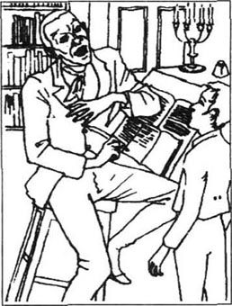
我决定先到伦敦，在旅馆里住上几天，把那大城市的风光景致游览个遍。我知道这一次与我上次到伦敦仓库工作时的情景会大不一样。如今我已长大成人，受过教育，身上有了钱。
我选择了一家取名“金十字”的旅馆，由于我看上去很年轻，他们就给我开了一间阁楼上又小又黑的房间。而我当时还没有足够的勇气抱怨。
那天晚上，我从戏院回来，见一个熟悉的身影走进旅馆。我禁不住脱口叫道：“斯提福兹！你还认识我吗？”
他看了我一会儿，然后叫起来，“我的天！是小科波菲尔！”
见到他，我欣喜异常，我紧握住他的双手说：“亲爱的斯提福兹，你不会知道再次见到你我有多高兴！”我记得我是多么地敬重他，现在这种感情又复苏了。我的双眼涌满泪花，我只好赶紧擦掉。
“别哭，科波菲尔，老伙计！”他和善地说道，“我也很高兴见到你，你在这里干什么？”
“我刚毕业，我姨婆让我在选择职业之前先到伦敦转转。你呢，斯提福兹？”
“嗯，我在牛津大学上学，可那儿没什么好玩的事！所以我来伦敦待几天，但这儿也很无聊，是吧？”
“伦敦吗？”我很纳闷，问道，“我觉得很好呀！有那么多事可做可看！我刚去了戏院——那些演员棒极了，还有——”
“大卫，大卫，”斯提福兹笑道，“看到你这张好奇、天真的脸，这么激动，真让我高兴！现在，告诉我，你住哪个房间？”
“44号，在楼顶上。”我红着脸直说了。
“他们把你安置在44号？我马上给你换房。”斯提福兹找老板谈了以后，他们很快把我安排在二楼的一间宽敞、通风、舒适的房间，而且在斯提福兹的隔壁。晚上躺下睡觉时，我很高兴，想着接下来的几天我可以和斯提福兹在一起玩。
一周很快过去了，我们一起看戏，参观博物馆、动物园，我们一起观光、骑马、游泳、划船，斯提福兹是一位难得的好伙伴，我比以前更敬重他了。实际上，我已经真心真意喜爱他了。
一天，我跟他说，“你知道，斯提福兹，我必须去看看我母亲的老女仆，辟果提，我小时候她对我很好。”
“是，大卫，我记得你跟我说过。她住在雅茅斯，是吧？干吗不一起去呢？”
“哦！对呀，斯提福兹！你一定很乐意见见她的哥哥及她的全家！他们都是非常友好、善良的人。”
“即使他们只是普通的劳苦大众。”斯提福兹说。我瞥了他一眼，想弄清他话中的含义，但他冲我笑笑，我想他是在开玩笑，所以我也笑了笑。
我们乘坐长途马车到雅茅斯，到了之后，斯提福兹先在一家旅馆歇脚，我到巴克斯家去找辟果提。我敲了敲门，辟果提出来了，她当时没认出我。我虽然一直给她写信，从未间断，但我们彼此已有7年没见面，我已不再是她记忆中的小男孩了。然而，当她意识到我就是她的大卫少爷时，她激动得哭了又哭，还像从前那样把我拥在她怀里，她很快就平静了下来，我们互相说起近几年发生的事情。她说她跟巴克斯先生过得很幸福，可他现在却生病在床。她见到我是那么高兴，坚持要我在雅茅斯逗留期间住到他们家，睡那间她一直为我保留着的小卧房。
第二天，我带斯提福兹去拜访丹尼尔·辟果提。那是个黑暗、多风的夜晚，我们走近老船屋，听得里面传出快乐的说笑声。我推开门，丹尼尔、哈姆和埃米莉突然围过来，惊奇地看着我。
“看！是大卫少爷！他长成大人了！”
一时间我们都握着手又说又笑。我没忘了介绍斯提福兹。他们把他当作我的好朋友热情接待。
“好啊！”丹尼尔·辟果提叫道，激动得大脸庞又红又亮，“太好啦，大卫少爷，你们两位先生选择今晚到这里！这是我一生中最美好的夜晚！因为今天晚上，先生们，我的小埃米莉——”他把小埃米莉白皙的小手握在自己粗糙发红的手中并放到胸口——“已经答应嫁给哈姆当妻子！”
“我衷心地祝贺你。”斯提福兹出于礼貌对哈姆说道，可他的眼睛始终没有离开脸颊菲红的美丽的埃米莉。
“大卫少爷知道我有多爱这孩子，”老丹尼尔继续道，“我最大的心愿就是她能找到一位好丈夫照顾她。而我最信任的人莫过于哈姆！他虽然只是一个像我一样粗鲁的水手，但他朴实、真诚，我知道只要有他在，她决不会受到任何伤害！”
这时，哈姆也脸红了。我不知道说什么好，不知道是应该因还爱着埃米莉而妒嫉哈姆，还是应该为他们的幸福而高兴。然而，斯提福兹总能说出合适的话语，他的几句很得体的话让大家都觉得自在多了。
接下来的时间我们过得很愉快，大家讲故事、唱歌，一直到午夜时分，我和斯提福兹才离开船屋。
“咳！”我们在寒冷的夜色中穿过沙滩，斯提福兹说，“多可爱的女孩！却要嫁给这么粗俗的男人！”
他突然说出这么尖刻的话使我感到震惊，可当我回过头看他脸上挂着笑容时，我热情地附和道：“啊，斯提福兹！你假装嘲笑那些比你寒酸、没文化的人，可我刚看到你和辟果提一家整个晚上在一起，逗他们开心！我知道你了解他们，喜欢他们，我更加仰慕你了！”
他停下脚步看着我，心情沉重地说：“大卫，你是认真的，对吧？我真希望我能像你这么好！”
接下来的两个星期我常和辟果提和巴克斯在一起，而斯提福兹常随丹尼尔和哈姆去航海、钓鱼，或者找些其他事干，所以我不常见着他。最后我们决定回伦敦。
当我们坐上返程的长途马车时，我转身想跟他说些什么，却惊奇地发现他居然是满面愁容。
“噢，大卫！”他痛苦地说，“我真希望能更好地把握住自己！我有时恨死我自己了！”
“斯提福兹！你在说什么呀！”我叫道，“你是最优秀、最聪明、最好心肠的人！”
“谢谢你，大卫！”他摇了摇头，说道，“但你不知道我有多坏。”
“坏！”我重复道，“我亲爱的斯提福兹！别胡说了！我很了解你的性格，和你成朋友是我的荣幸。”
片刻之后，他的情绪有了改观，重新高兴起来。我很快忘了他的这些话，可后来我又回想起来了。
回伦敦后，我发现姨婆早就等在“金十字”旅馆了，而且已经在那儿住了好几天了。彼此相见我们都很高兴，当晚聊了很久。她为一个问题专程来问我。
“大卫，”她十分严肃地说，“我一直都在考虑你今后的工作问题，你觉得做律师怎么样？”
我想了一会儿，“好啊，姨婆，听起来这主意不错。我承认我以前没想到过，但我想我会喜欢的。”
“很好，”姨婆说着跳起来，“既然这样，我们马上去见斯本罗先生，他是一家颇为重要的律师事务所的合伙人，我想他会同意收你为徒，当然我们得付学费。可几年下来你就能成为一名训练有素的律师，而且可以自己挣钱。”
紧接着，我们实施了这项计划。姨婆付给斯本罗事务所1000英镑，我答应努力学习，尽可能成为一名成功的律师。姨婆回多佛之前，给我租了一套小房子，位于法院附近一幢楼的顶层，我很快搬了进去。
一开始，我每天从法院或斯本罗事务所那满是尘土的办公室工作一天之后，穿过热闹繁华的街区，想到我也有自己的家可回，就异常兴奋。可当我爬完所有的楼梯，走进客厅，似乎就不再那么兴奋了。事实上，我的房间看上去空荡荡的，令人抑郁。所以，孤单单地待了两天后，我很高兴我的第一位客人斯提福兹来访。见到他后我非常开心。于是又邀请他和他的两位朋友第二天晚上到我的寓所聚餐。
由于我是头一次搞聚餐，不知道该买什么，就从餐馆里预定了现成的一只鸡和一条鱼，又从商店里买了些奶酪和水果，还让人送到家好几瓶酒。自己一下子花掉那么多钱，真有点可怕。可当斯提福兹和他的朋友到来之后，我的心情立刻好转了。聚会办得十分成功，我们玩得很开心，我们边吃边喝边抽烟，然后又喝。我不停地打开一瓶又一瓶的酒，而且变得异常健谈，我开始感觉不对劲，照着镜子一看，自己已脸色苍白。我不得不承认自己的醉态。
有人提议去看戏，我们就迷迷糊糊地走出我的寓所来到街上。斯提福兹嘻笑着搀着我的胳膊。小包箱里有一个人从雾里探出头来，偷走了另一个人的钱。很快，我们坐进了燥热、拥挤的戏院，而且高高在上。戏院里有明亮的灯光，有音乐，但我听不懂演员在说什么，整个建筑物仿佛在我眼前晃动。
之后，有人提议去戏院的另一头看看几位朋友，所以我们又下了楼。突然，我十分清楚地看见阿格尼斯·威克菲尔，她与一位女士和一位先生坐在一起。她看着我，一脸惊讶的神色。
“我的天！”我叫起来，“阿格尼斯！你在伦敦！”
“安静！”她小声说道，“别人都在听戏，你会吵着他们的！”然后她又善意地加了一句：“大卫，请照我说的做，让你的朋友送你回家。”
阿格尼斯的意见我向来都听，这次也一样。我不记得当时是怎么回的家，但我依然记得是斯提福兹帮我脱了衣服，把我弄上床。多么可怕、难眠的一宿！我感觉好难受！口干舌燥！而第二天上午情况更糟，我为自己所干的蠢事感到既痛苦又羞愧，还让阿格尼斯看见了我的醉态。我甚至设法向她致歉，因为我不知道她住在伦敦的哪个地方。我双手捧着自己的脑袋，在脏乱不堪、乌烟障气、满是空酒瓶的屋子里待了一整天。
第二天，有人给我的寓所送来一张便条，是阿格尼斯写的，她要求我到她现在住的地方去找她。我下了班就直奔她那儿。
她看上去是那么文静，气色那么好，让我回想起在坎特伯雷城那段美好的学生生活，我情不自禁地哭起来。
“真抱歉，阿格尼斯，”我说，“让你瞧见我的蠢样。我真没脸见你！”
“大卫，别难过了，”她愉悦地说道，“你知道你可以相信我，我永远是你的朋友。”
我抓起她的手吻了一下，“阿格尼斯，你是我的天使！”
她摇了摇头，“不，大卫，如果我真是，我要提醒你——离开你的坏天使。”
“亲爱的阿格尼斯！”我叫道，“你是指斯提福兹？”
“是的，大卫。”她回答，坚定地注视着我。
“阿格尼斯，你错了！他是我信任的朋友！他帮助我，引导我！我喝醉不是他的错，你知道！”
“我不是指醉酒的事。我是从你谈起他的话语中，从你的性格和他对你所产生的影响来判断的。”阿格尼斯认真地说道，她的话触动了我的心。“我认定我是对的。你结识了一位危险的朋友，大卫，因为你太容易轻信他人了。请记住我的话——并请原谅我的直率。”
“我会的，只要你能原谅我的酒后失态。”
阿格尼斯笑着答应着，然后她突然问道，“你见过尤赖亚·希普吗？”
“没有啊，”我回答，“他在伦敦吗？他来这里来干什么？”
“我很担心，大卫，”阿格尼斯回答，美丽的双眼蒙上一层郁忧。“我想他将要成为父亲的合伙人了。”
我想起尤赖亚·希普那讨好般的笑，他总是让人那么地不舒服。
“什么？那个怪物？他实在不讨人喜欢！你必须阻止你父亲与他合伙经营，阿格尼斯！”
阿格尼斯苦笑了一下，“可怜的父亲没有别的选择，你知道他为何总是那么忧郁吗？当然你也见过他酗酒。你知道，他非常爱我的母亲，她死后，他便不再那么专心于他的工作。也就是那时他开始酗酒。尤赖亚很聪明——他知道这一切，他对父亲帮助很大，帮父亲做所有他忘记做或者不想做的事情。如今，为了能继续维持他的公司，父亲的确已经离不了尤赖亚了。尤赖亚自己则装出一幅卑谦、感恩戴德的样子，而实际上，他占据上风，坚持要做父亲的合伙人。父亲为自己感到羞愧，可也不得不同意。可怜的父亲！我愿意做任何事情来帮助他！任何事！”阿格尼斯伤心痛哭。
以前我从未见阿格尼斯哭过。我难过得只能说些无济于事的话，“亲爱的阿格尼斯！求你别哭了！”不过，几分钟后，她又恢复了平静，我也能告辞出来了，我答应她我会很快去坎特伯雷看望她和她的父亲。
6．David falls in love
6
David falls in love
Agnes had asked me to be polite to Uriah if I met him, and so, when I saw him the next day near the lawcourts, I was careful not to offend him. He looked even stranger than before, with his small evil head and long thin body, and his wide oily smile. When we shook hands, I noticed how cold and wet his hand felt, just like a fish.
'Would you—would you like to come to my rooms for coffee, Uriah?' I offered, trying to hide my horror of him.
'Oh, Master Copperfield, I mean, Mister Copperfield, I should say now! How kind of you! I'm too humble to expect such kindness! But I would like that!'
And when we reached my flat, he looked at me with an unpleasantly confident smile, and said, 'Perhaps you've heard that I'm going to become Mr Wickfield's partner, Mr Copperfield?'
'Yes,' I replied. 'Agnes has told me about it.'
'Ah! I'm glad to hear that Miss Agnes knows about it,' he answered. 'Thank you for that, Mr Copperfield!'
I was annoyed with myself for mentioning Agnes's name, and hated hearing him say it, but I said nothing and drank my coffee.
'You said once, Mr Copperfield,' continued Uriah, rubbing his hands together happily, 'that perhaps I'd be Mr Wickfield's partner one day. It was kind of you to say so. A humble person like me remembers things like that! And now it's true! I'm glad to think I've been able to help poor Mr Wickfield. Oh, how very careless he has been! If I hadn't been his assistant, he would certainly have lost his business, his house, and all his money by now. Of course, I'm helping him because I admire him—and not only him...'
Suddenly, although the room was warm, an icy coldness spread through my body, as I stared into his cruel little face.
'Miss Agnes is looking beautiful at the moment, isn't she?' he went on, smiling horribly. 'Mr Copperfield, I trust you, because as you know, I've always liked you, although I'm so humble, and you're a gentleman. So I'd like to tell you my little secret. In spite of my low position, I love Miss Agnes! I've given my heart to her, and I hope to marry her one day!'
There was a purple mist in front of my eyes. I wanted to hit his ugly face, or stab a knife right into his wicked heart. I was almost mad with anger. But I thought of Agnes's request, and I managed to control myself.
'Have—have you spoken to Agnes about your—your love?' I asked as calmly as I could.
'Oh no, Mr Copperfield. I'm waiting for the right moment. Perhaps I'll ask her when I become her father's partner. She'll think kindly of me, you see, when she realizes how much her father needs me. She loves him so much! Ah, what a good daughter my Agnes is! And what an excellent wife she'll be to me!'
Dear, sweet Agnes, my adopted sister! I did not know any man good enough to be her husband. Could she ever marry this worthless insect? When Uriah left my flat, I spent a sleepless night worrying about what I should do. In the end I decided to say nothing to Agnes about Uriah's plan, as she already had enough to worry about.
A year had passed since I first started work in Mr Spenlow's firm. I often went to court with him, and began to understand the details of some of the most difficult cases. Mr Spenlow was kind to me, and occasionally talked to me, not only about law but also about other matters. I discovered that his wife had died, and that he lived in a large country house just outside London, with his only daughter and her paid companion. One day he invited me to his house for the weekend, and I accepted gratefully. So on Friday evening Mr Spenlow's coach and horses drove us to the house.
When I saw the Spenlows' home, I realized how rich Mr Spenlow must be. It was a lovely old building, with large gardens. As soon as we entered, Mr Spenlow asked one of the servants, 'Where's Miss Dora?'
'Dora!' I thought. 'What a beautiful name!' We went into the sitting-room, and I suppose Mr Spenlow introduced me. I did not notice, because nothing mattered at that moment. I just stared stupidly at his daughter Dora, lost in wonder at her beauty, and unable to say anything. I had fallen in love in a second.
As I stared, I heard a voice speaking to me, but it was not Dora's. It was her companion, whom I had not noticed at all while Mr Spenlow was making the introductions. When I saw that the companion was Miss Murdstone, I was surprised, certainly, but nothing could take my attention away from Dora for more than a second or two.
Mr Spenlow explained that Miss Murdstone had been kind enough to come and look after his poor motherless daughter, and to be her confidential friend and companion. But it seemed to me that Dora was neither friendly nor confidential towards her stern companion.
As for me, the rest of the weekend passed in a kind of fog. We ate meals, and went for walks. People spoke to me, and I answered. But I have no idea what I actually said. All I remember was Dora's golden hair, and Dora' s blushing face, and Dora's beautiful blue eyes! Occasionally I was lucky enough to speak to her alone, and then I was so shy that I blushed as much as Dora herself. I was very jealous of the little dog that she carried everywhere with her. Sometimes I thought she liked me a little, and at other times I was sure she would never love me. I was wildly, desperately in love!
I had wondered if Miss Murdstone would try and blacken my name with the Spenlows, but on that first evening she had taken me to one side.
'David Copperfield,' she said coldly. 'I see no need for either of us to speak about the past to anyone here. I imagine we are agreed on that.'
'Certainly, ma'am. We are agreed on that, although I shall never change my opinion of you.'
I put Miss Murdstone out of my mind, and for several weeks after meeting Dora, I lived in a dream. I did my work automatically, and I never stopped thinking of her. The greatest happiness I could imagine was being engaged to Dora. I dared not hope that one day we would be married.
While walking round London one day, hoping to meet Dora out shopping, I met my old schoolfriend Tommy Traddles. He was living in the city, like me, and was also studying to become a lawyer. I arranged to visit him, and went to his house after work the next day. He lived in one room in a rented house, in a very poor part of the city. His room was small, and almost empty.
'Copperfield! I'm glad to see you!' he said warmly. 'you can see I haven't got much furniture, but I'm hoping to earn more money later, when I've finished my studies.'
'Didn't you have a rich uncle, Traddles?' I asked.
'Yes, but I've always been unlucky, you know. He decided he didn't like me, so he didn't leave me anything when he died. I'm really very poor, and I have to do several jobs to pay for my studies.' Traddles looked surprisingly cheerful. 'But I must tell you, Copperfield, as you're an old friend, that I'm engaged! To a lovely girl, who comes from a large family, and lives in Devon!'
I was thinking of Dora as I shook hands with him and congratulated him enthusiastically. 'Will you get married soon?' I asked.
'No, she's very poor too, so we'll have to wait a long time, until we've saved enough money. She's such a dear girl, Copperfield. She says she'll wait for me until she's sixty, if necessary! And I'm quite happy here with the people who rent the house—the Micawbers are very kind.'
'Who did you say?' I cried. 'The Micawbers! I know them!'
Just then Mr Micawber himself knocked at the door and entered. His stomach was a little fatter and his face a little older than before, but he looked as confident as ever; I went up to him and shook his hand.
'How are you, Mr Micawber?' I asked. 'Do you remember me?'
'Is it possible? Can it be? Have I the pleasure of seeing my old friend Copperfield again?' he replied, a smile spreading over his large face. He turned to call downstairs, 'My dear! Come and meet this gentleman, my love!'
When Mrs Micawber came in, she was also delighted to see me, and we talked for some time about the twins, and the other children, and her husband's business interests. But this conversation soon made Mr Micawber rather depressed.
'You see, Copperfield,' he said miserably, 'nothing has turned up yet. Sometimes I wonder whether anything ever will turn up. I can't pay for our food, or even our water. It's hard enough for me to accept the situation, but how can I expect my dear wife to live like this? Perhaps it would have been better if I had never asked her to marry me!' He put his head in his hands.
'Micawber!' cried his wife. 'How can you say that! You know I have always loved and admired you, and always will love and admire you! My dear husband!' And they fell into each other's arms, sobbing on each other's shoulders. In a few moments they had both dried their eyes and looked quite cheerful again. I realized that the Micawbers had not changed at all, but this quick change of mood was rather a surprise for Traddles.
Before I left, I made sure I had a word in private with my old schoolfriend. 'Traddles,' I whispered, 'take my advice—don't lend Mr Micawber any money. He's got a lot of debts.'
Traddles looked uncomfortable. 'Thank you, Copperfield,' he whispered in reply, 'but I've already lent him some. I don't know whether he'll give it back—you know how unlucky I am!'
When I got back to my rooms, I found Steerforth waiting for me there. I thought of Agnes's warning about him, but when I saw his open, good-looking face, I could not believe he could be a bad influence on anyone. However, there was something rather strange in his manner that night. Sometimes he seemed quite depressed, almost desperate, but a minute later he was laughing wildly, and I had no idea why he was like that.
'I've just been to Yarmouth, David!' he told me.
'Oh!' I replied. 'You've seen the Peggotty family, I expect?'
'I haven't seen much of them, but I have got some news for you. It's about old Barkis. I'm afraid his illness has got much worse, and the doctor thinks he'll die very soon.'
'Oh dear!' I said. 'Poor Peggotty will be so sad!'
'Yes, it's bad luck,' replied Steerforth carelessly. 'But people die in this world every minute. I'm not afraid of death! I want to live life in my own way, and nobody can stop me!' He threw his head back proudly. I looked into his handsome face, wondering why he was so excited, which was unusual for him.
'Steerforth, I think I'll have to go to Yarmouth myself,' I said. 'Perhaps I can help Peggotty at this difficult time.'
Smiling, he put his hands on my shoulders. 'I wish I could be as good as you! David, promise me that if anything ever happens to separate us, you'll think of me at my best! Promise me that!'
'Steerforth, you have no best or worst for me,' I answered. 'You will always have your place in my heart!'
And as he turned to go, he gave me his hand, and smiled in his old friendly way. That is how I like to remember him, now that I shall never touch his hand again, or see him smile.
When I arrived in Yarmouth, I went straight to Barkis's house. In the sitting-room I found Daniel, Ham and Emily. Ham was standing by the door, while Emily was sobbing in Daniel's arms. None of them seemed surprised to see me.
'Emily's very young, Master David,' explained Daniel. 'It's hard for her to accept death. That's why she's crying. Now cheer up, Emily my dear, Ham has come to take you home. What's that?' He bent his grey head down to hear her whispered reply. 'You want to stay here with your old uncle? But you should go with Ham—he'll be your husband soon!'
'That's all right,' said Ham. 'If it makes Emily happy, it'll make me happy. I'll go home alone.' He went over to Emily and gave her a gentle kiss. She seemed to turn away from him a little. As Ham went out, I went upstairs to see poor Barkis.
He was lying unconscious in bed, looking very pale and ill. Peggotty was sitting beside him. She jumped up and took me delightedly in her arms, just as she used to do. Then she turned to her husband. 'Barkis, my dear,' she said almost cheerfully, 'here's Master David, who brought us together, you remember? He carried your messages for you. Can you speak to him?'
Barkis lay silently there, not moving. We sat beside him all through that long night. In the early morning, he suddenly opened his eyes, reached out his hand to me, and said clearly, with a pleasant smile, 'Barkis is willing!' And then he closed his eyes, and died.
'He was a good man!' said Peggotty, with tears in her eyes. 'I shall miss him!'
I was able to help Peggotty with the arrangements for the funeral. Barkis was buried in Blunderstone churchyard, close to my mother and little brother. We discovered that Barkis had saved quite a lot of money, which he left to Peggotty and Daniel. So I knew that Peggotty would not need to work in future.
On the day before the funeral, we all arranged to meet at the old boat. It was my last evening in Yarmouth, as I was returning to London the following day. When I arrived, I was surprised to see that Ham and Emily were not there. Peggotty was feeling more cheerful now, and Daniel was talking to her. Just then Ham came to the door.
'Master David, come outside a minute, would you?' he asked. I stepped outside, and Ham shut the door carefully. It was raining heavily, and as we stood on the lonely beach, I noticed how very pale Ham's face was.
'Ham!' I cried. 'What's the matter?'
'Master David!' he sobbed wildly. I had never seen such a strong man cry like that before. 'It's Emily! I'd have died for her! I love her with all my heart! But she's run away and—worse than that! Oh, how I wish God had saved her from this ruin!'
I shall never forget his desperate face turned towards me, and the pain in his honest eyes.
'You're educated, Master David!' he continued. 'You know how to express yourself! Help me! How can I ever explain to him in there? He loves her even more than I do!'
I saw the door open, and tried to stop Ham speaking, but it was too late. Daniel Peggotty came out, and when he saw us, he seemed to realize immediately what we were talking about. The expression on his face changed in a moment, and he pulled us both back inside. I found myself with a letter in my hand which Ham had given me.
'Read it, sir,' said Daniel, his face pale and trembling and his eyes wild. 'Read it slowly, please.'
The room was completely silent as I read aloud:
Dear Ham,
Please, please, forgive me for running away and leaving you. When you see this, I'll be far away. I shall never return to my dear home unless he marries me and brings me back as a lady. Oh, I'm so sorry, and so ashamed! I know this will break your heart, but believe me, I'm not good enough for you! I'm too wicked. Tell Uncle I'll always love him, even if he can never love me again. And I'll always think of you, dear Ham, even if you hate me for what I've done. Forgive me, and goodbye!
Emily
Daniel did not move for a long time after I had finished reading. I took his hand, but he did not notice. Suddenly he appeared to wake up, and said in a low voice,
'Who's the man? I want to know his name.'
Ham looked quickly at me, and I felt a shock run through my whole body. I fell on to a chair and could not speak.
'Don't listen, Master David,' Ham said, hesitating, 'we don't blame you for it.' Peggotty put her arm round my neck, but I could not move. 'A—gentleman's been here very often recently,' continued Ham in a broken voice, 'and—today people saw Emily driving off with him in his coach!'
'Tell me!' cried Daniel wildly. 'Is his name Steerforth?'
'It is!' replied Ham just as wildly, 'and I'm sorry, Master David, but he's the wickedest man I've ever known!'
After a moment Daniel spoke. He looked suddenly much older. 'I wish I'd drowned him when I had the chance! But it's too late now. There's no peace for me here while my dear girl is away. I'm going to look for her, and bring her back home. Don't any of you try to stop me! Ham, you must stay here in Yarmouth. Keep a light always burning in the window of this house, so that if the poor girl ever comes back, she can find her way home across the sand. I'm going to London, and France, and all over the world if necessary. I'm prepared to spend my whole life travelling until I find her. If anything happens to me, if I don't come back, tell her I forgive her—tell her my love for her is unchanged!'
And although we all tried hard to persuade him to stay, he refused to listen. He took his coat, hat, bag and stick, and stepped out into the darkness. We watched him walking along the London road, until he disappeared from sight. I often thought of that lonely figure in the next few weeks and months, walking through strange streets in foreign cities, looking for his adopted child. When I thought of him, I remembered his last words to us: If anything happens to me, if I don't come back, tell her I forgive her—tell her my love for her is unchanged!
offend v. hurt the feeling of 伤……的感情。
evil a. wicked, bad, harmful 邪恶的，有害的。
hide v. keep out of sight 隐藏。
reach v. go to, go as far as 到达。
annoyed a. angry and irritated 恼怒。
mention v. say the name of 提到。
spread v. become more widely extended or distributed 传布，散开。
secret n. sth. kept from view or knowledge of others 秘密。
stab v. push a knife into 用锐器刺向。
request n. asking or being asked 请求。
realize v. be fully conscious of, understand 完全认知，了解。
insect n. a sort of small animal, eg. ant, fly, wasp 昆虫。
detail n. small particular fact of item 细节琐碎的事。
accept v. (consent to) receive (sth. offered) 接受。
suppose v. take it as a fact that 认定，假定。
matter v. be of importance 关系重要，要紧。
be lost in wonder 沉入惊异中，惊异。
fall in love come to feel love for 爱上（某人）。
confidential a. having the confidence of another or others 获他人信任的。
take my attention away 转移我的注意力。
look after take care of 照顾。
go for walks 出去散步。
I see no need... 我认为没有必要……。
imagine v. think of as probable 认为可能发生或存在。
opinion n. belief or judgement not founded on complete knowledge 看法。
like prep. such as 如，像。
decide v. think about and come to a conclusion 考虑并下结论。
save v. keep for future use 储蓄。
necessary a. which has to be done 必需的。
stomach n. the front part of the body below the chest 肚子。
as confident as ever 依旧自信。
have a word 谈话。
in private 单独，私下。
lend v. give the use of (sth.) for a period of time on the understanding that it or its equivalent will be returned 借出。
give back return 偿还。
expect v. suppose, think 想，认为。
see much of sb. 常见到某人。
separate v. make divided, not joined 分离，分开。
have your place in my heart 你在我心中占有一席位置。
cheer up become happy 高兴起来。
bend v. cause to be out of a straight line or surface 弯曲。
unconscious a. not conscious (of all senses) 无意识的，失去知觉的。
used to 表示过去经常的习惯。
through prep. from beginning to the end 自始至终。
reach out stretch out 伸出。
bury v. place (the dead body) in the ground, in a grave or in the sea 埋葬。
churchyard n. burial ground near a church 教堂墓地。
beach n. shore between high and low-water mark, covered with sand and water-wore pebbles 海滩。
express v. make known, show by words, looks and actions 表达，表示。
forgive v. say that one no longer has the hard feelings towards 原谅。
lady n. woman who has good manners and some claim to social position 贵妇，（有教养和社会地位的）妇女。
appear v. seem 似乎，显得。
in a low voice 低声地。
hesitate v. show signs of uncertainty or unwillingness in speech or action 犹豫，踌躇。
blame v. fix on sb. the responsibility for sth. done (badly or wrongly) 责备。
neck n. part of the body that connects the head and the shoulder 脖子，颈。
drown v. cause to die in water because of unable to breathe 使某人淹死。
persuade v. cause (sb.) to do sth. by reasoning 劝服。
foreign a. of, in, from, another country 外国的。
6 大卫坠入爱河
6 大卫坠入爱河
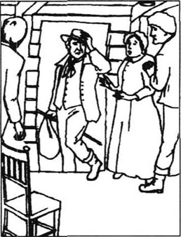
阿格尼斯曾要求过我，要是我碰到尤赖亚，一定要对他客气点。所以，当我第二天在法院附近看见他时，我很谨慎不去冒犯他。他看上去比以前更古怪了，阴险的小脑袋，细长的躯体，僵硬、狰狞的笑脸。我们握了握手，他的手是如此的冰冷潮湿，活像捏着条冷血鱼。
“你愿意——愿意到我的寓所去喝杯咖啡吗，尤赖亚？”我主动提议，竭力想隐藏对他的恐惧感。
“噢，科波菲尔少爷，我是说科波菲尔先生，我愿意现在就去！你真是好心！我太卑微，不敢奢望如此善意的邀请！但我愿意接受！”
我们到达寓所时，他以一种令人讨厌的自信笑着看着我，说：“或许你已经听说了，我将成为威克菲尔先生的合伙人，科波菲尔先生？”
“听说了，”我回答，“阿格尼斯跟我说过。”
“噢，我很高兴阿格尼斯小姐知道此事，”他答道，“谢谢你告诉我，科波菲尔先生！”
我很懊恼自己提到了阿格尼斯的名字，而且讨厌听到他称呼这个名字。可我并没说什么，只顾喝我的咖啡。
“你曾经说过，科波菲尔先生，”尤赖亚高兴地搓着双手，继续道，“或许有一天我会成为威克菲尔先生的合作伙伴。谢谢你的吉言。一个像我这么卑微的人会时刻铭记这样的话！而现在，这成真的了！想到能帮助可怜的威克菲尔先生我很高兴。哦，他是那么地粗心！要是没我做他的助手，他现在肯定已经丢掉了公司、房子和所有的钱财。当然，我帮助他是因为我敬重他——而且不光是他……”
突然，我浑身感到一阵透凉，尽管房间里很暖和。我紧盯着他那张残酷的脸。
“如今的阿格尼斯出落得很漂亮，是不是？”他露出可怕的微笑，继续说道，“科波菲尔先生，我信赖你，因为你知道，我一直喜欢你，尽管我如此卑微，而你是位绅士。所以，我想告诉你一个小秘密：不管我地位有多低下，我爱阿格尼斯小姐！我已经把心交给了她，我希望有朝一日娶她为妻！”
我眼前蒙上一层浓雾，我想揍他那张丑陋的脸，或是用刀刺穿他恶毒的心。我气得都快发疯了，但想到阿格尼斯的请求，我还是设法控制住了自己。
“你——对阿格尼斯表达过你的——你的爱吗？”我尽可能平静地问道。
“哦，没有，科波菲尔先生。我正在等待时机。或许在我成为她父亲的合伙人时，我会向她求婚。当她意识到她父亲有多么需要我时，你知道，她会平心静气考虑我。她是那么地爱她父亲！啊，我的阿格尼斯是个多好的女儿！她将会是我多么出色的妻子！”
至爱至亲的阿格尼斯，我的义姐！我不知道有谁能配得上做她的丈夫。难道她要嫁给这个一钱不值的怪物吗？尤赖亚离开我的寓所后，我一宿未眠，思考着我能为此做些什么。最终我决定不把尤赖亚的阴谋告诉给阿格尼斯，因为她已经够烦心的了。
到斯本罗先生事务所工作已经有一年了。他常带我去法院，我开始对一些比较复杂的案例的细节有所了解，斯本罗先生对我不错，时常跟我聊天，内容不光是有关法律的知识，还有一些其他事情。我了解到他妻子已经去世，他与唯一的女儿和她的侍伴住在伦敦城外不远的一所乡间别墅。一天，他邀请我去他家度周末，我很感激地接受了邀请。于是，斯本罗先生的马车把我们带到了他的家中。
当我看到斯本罗先生的住宅时，我才意识到斯本罗先生有多富裕。这是一座可爱的旧式建筑，花园很大。我们一进门，斯本罗先生就问其中的一位用人：“朵拉小姐在哪儿？”
“朵拉！”我心想，“多美的名字呀！”我们走进了客厅，斯本罗先生可能把我介绍了一番。我没注意这一点因为当时什么都不重要了，我只是呆呆地盯着他的女儿朵拉，为她的美貌出神，嘴里说不出半句话来。在这一瞬间我坠入了爱河。
就在我目瞪口呆之际，我听见有人跟我说话，但不是朵拉的声音，而是她的侍伴，斯本罗先生作介绍时我压根儿没留意她。当我看清这位侍伴是摩德斯通小姐时，我自然很吃惊，但当时没有任何东西可以把我的注意力从朵拉身上移开，哪怕只一两秒钟。
斯本罗先生解释说，摩德斯通小姐能来照顾他失去母爱的可怜的女儿，并成为她的密友和侍伴，真是难能可贵。可在我看来，朵拉对她这位严肃的伙伴既不友好也不亲密。
至于我，接下来的这段周末时光就像在云雾中度过。我们在一起吃饭，散步，别人问我什么我就回答什么，但我不知道自己到底说了些什么。我全部的记忆就是朵拉的金发、朵拉红扑扑的脸蛋、朵拉美丽的蓝眼睛！有时，我有幸能单独跟她说话，可我却那么腼腆，脸红得跟朵拉一样。我很嫉妒那条跟朵拉形影不离的小狗。时而，我想她有点喜欢我，时而又肯定她不可能爱上我。我疯狂地、绝望地爱上了她！
我不知道摩德斯通小姐是否会在斯本罗一家面前尽力说我的坏话。可当天晚上她把我叫到一边。
“大卫·科波菲尔，”她冷冷地说道，“我看我们俩谁也没有必要对这儿的任何人提起我们的过去。我想你我都会赞成吧。”
“当然，小姐，你我都赞成。但我永远不会改变对你的看法。”
摩德斯通小姐很快被我忘在脑后。遇见朵拉后的几个星期，我都生活在梦境之中。我机械地工作着，却无时无刻地想她。我最大的快乐就是想象跟朵拉订婚的情景。我不敢奢望有一天我俩会结成夫妻。
一天，我在伦敦街头溜达，指望能看见朵拉从哪家商场出来。这时，我遇见了老同学汤米·特拉德尔。他住在伦敦城，也跟我一样在学做律师。我安排了时间去看他。第二天下了班，我来到了他的住处。他住的是一个租来的房间，位于城市的贫民窟。房间很小，几乎是空空荡荡。
“科波菲尔！真高兴见到你！”他热情地说，“你看我这儿没什么家什，可我希望不久就能赚钱，就在我学完之后。”
“你不是有一个很富有的叔叔吗，特拉德尔？”我问道。
“是的，可是你要知道，我总是不走运。他不喜欢我，所以在他死后，没留下任何东西给我。我的确很穷，而且不得不做好几份工作来支付我的学费。”特拉德尔的情绪出奇地好。“可我必须告诉你，科波菲尔，因为你是我的好朋友，我一定得告诉你，我已经订婚了！跟一个很可爱的女孩，她出生于一个大家庭，就住在德文！”
我热切地握住他的手向他道喜，心里却想着朵拉。“你们很快要结婚？”我问道。
“不，她也很穷，所以我们必须得等一段时间，等到我们攒够钱。她是个那么可亲的女孩，科波菲尔，她说她会等我到60岁，如果有必要的话！而且我在这里跟我的房东处得很愉快——米考伯一家非常友善。”
“你说什么？”我叫起来，“米考伯一家！我认识他们！”
正在这时，米考伯先生本人敲了敲门进来了。他的肚子比以前圆了点儿，脸也比以前苍老了些，但他还像以前那样自信。我走上前去跟他握手。
“你好吗，米考伯先生？”我问道，“还记得我吗？”
“这可能吗？是真的吗？我能有幸再次见到我的老朋友科波菲尔？”他回答，大脸庞绽开笑容。他转身朝楼下喊道：“亲爱的！快来见见这位先生，我的宝贝！”
米考伯太太进来了，她也很高兴见到我。我们聊起了她的双胞胎和其他几个孩子，还谈到她丈夫的业务经营。但这个话题弄得米考伯先生的心情马上沉重起来。
“你知道，科波菲尔，”他痛苦地说道，“没有任何转机。我有时怀疑是否真有转机出现。我已买不起食物，甚至买不起水。这种状况对我来说已够艰难的了，我怎能让我亲爱的妻子也如此生活呢？或许当初我没要求她嫁给我就好了！”他把脑袋埋在双手中。
“米考伯！”他妻子哭道，“你怎么能这么说呢！你知道我爱你、敬重你，而且永远爱你、敬重你！我亲爱的丈夫！”然后，他们拥抱在一起，抱头痛哭。几分钟后，他们俩都擦干眼泪，情绪再次好转，我意识到米考伯夫妇根本没什么改变。但这种情绪忽高忽低的突然转变使特拉德尔很是吃惊。
在告辞之前，我下决心要跟老同学单独说几句。“特拉德尔，”我小声说道，“记住我的劝告——不要借钱给米考伯先生，他已债台高筑。”
特拉德尔神色很不自在。“谢谢你，科波菲尔，”他小声回答，“可我已经借给他一些钱了，不知道他是否能还给我——你看我多背运！”
我回到自己的住处，发现斯提福兹在那儿等我。我想到阿格尼斯对我的忠告，可当我看着他开朗、英俊的脸，就不相信他能对别人产生什么坏影响。然而，那天晚上他的情绪很不对劲。时而他似乎很消沉，几乎绝望，可没过片刻，他又发疯地笑起来。我不知道他怎么会这样。
“我刚去了雅茅斯，大卫！”他告诉我。
“噢！”我回答，“那你见着辟果提一家了，我猜？”
“我没常见他们，可我的确有消息告诉你。是有关老巴克斯的。恐怕他的病已经恶化，医生说他活不多久了。”
“噢，老天！”我说，“可怜的辟果提该会有多伤心！”
“是的，运气不佳，”斯提福兹满不在乎地说道，“可这个世上每分钟都有人死去。我一点都不怕死！我想以我自己的方式生活，没有人能阻止我！”他桀骜不驯地仰了仰头。我看着他英俊的脸，奇怪他怎么这么激动，激动得有点儿失常。
“斯提福兹，我想我该自己去一趟雅茅斯，”我说，“或许我能在辟果提困难的时候帮她一把。”
他把手搭在我肩上，笑了笑。“真希望我能像你这么好！大卫，答应我，如果有什么事发生使我俩分开，你要多想想我的好处！答应我吧！”
“斯提福兹，对我来说，你身上没有好坏之分，”我回答，“在我心目中永远有你的位置！”
当他转身要走时，他伸出手，以他惯常那种友好的方式笑了笑。这是我记得他的模样，可如今我再不能握他的手，再见不着他笑了。
到达雅茅斯后，我径直来到了巴克斯家。走进客厅，我看见丹尼尔、哈姆和埃米莉都在。哈姆站在门边，埃米莉倒在丹尼尔的臂弯里哭泣。见着我他们谁也不吃惊。
“埃米莉还年轻，大卫少爷，”丹尼尔解释说，“她很难接受死亡。所以她哭了。现在，高兴点，我亲爱的埃米莉，哈姆来接你回家。你说什么？”他低下满是灰发的头，凑近她听她轻声地回答，“你想和你的老叔叔待在这儿？可你得和哈姆回去——他就要成为你的丈夫了！”
“没关系，”哈姆说，“如果埃米莉高兴，我也就高兴。我可以一个人回家。”他走到埃米莉跟前，轻轻地吻了她一下。她似乎略微回避了一下。哈姆走后，我上楼去看可怜的巴克斯。
他昏睡在床上，脸色苍白，病得不轻。辟果提坐在他身边。她跟以前一样跳起来高兴地拥抱了我。然后她转向她丈夫。“巴克斯，亲爱的，”她几乎是兴奋地说道，“大卫少爷来了，是他使我俩走在一起，记得吗？他把你的口信捎给我。你能跟他说话吗？”
巴克斯静静地躺着，一动不动。我们彻夜守在他身边。第二天一早，他突然睁开眼睛，伸出手握住我，带着高兴的微笑，清楚地说了一句：“巴克斯很愿意！”然后就闭上眼睛，死了。
“他是个好人！”辟果提两眼噙着泪，说，“我不会忘了他！”
我帮助辟果提安排了后事。巴克斯葬在布兰德斯通的教堂墓地，离我母亲和小弟弟不远。我们得知巴克斯存有一大笔钱，留给辟果提和丹尼尔。所以，我知道辟果提今后不需要工作了。
葬礼前一天，我们决定在船屋碰头。这是我在雅茅斯的最后一晚，因为我第二天就要回伦敦了。到那儿以后，我很奇怪没有见着哈姆和埃米莉，辟果提情绪好多了，丹尼尔在跟她聊天。这时，哈姆来到门口。
“大卫少爷，请出来一下好吗？”他说。我走了出来，哈姆轻轻地关好门。雨下得很大，当我们俩孤零零地站在海滩上时，我发现哈姆脸色十分苍白。
“哈姆！”我叫道，“出什么事了？”
“大卫少爷！”他失声痛哭。我从未见过这样一个强壮的男子如此伤心地哭过。
“是埃米莉！我情愿为她而死！我全身心地爱她！可她离家出走了——甚至更糟糕！噢，真希望上帝能把她从这场灾难中解救出来！”
我永远忘不了他转向我时脸上那绝望的表情，忘不了他诚实的眼睛里流露出的痛苦。
“你是受过教育的人，大卫少爷！”他继续道，“你知道如何表达自己！帮帮我！我怎么能跟那边的他解释？他甚至比我更爱她！”
我看见门开了，想制止哈姆继续往下说，可已经晚了。丹尼尔·辟果提已经走出来了。他看见我们时似乎立刻意识到我们在说什么。一时间他脸上的表情改变了，他把我俩拉回屋里。我这才发现我手上拿着哈姆刚给我的一封信。
“念念，先生，”丹尼尔说道，他脸色苍白，浑身发颤，目光咄咄逼人，“请念慢一点。”
屋子里一片寂静，我开始念道：
亲爱的哈姆：
请，请你原谅，我离开家，离开你。你读到此信时，我已经在很远的地方了，我将不再回我亲爱的家，除非他娶了我并以夫人的身份把我带回家。噢，真是很对不起，我非常惭愧！我知道这会伤透你的心，但相信我，我配不上你！我太卑贱了。告诉叔叔我会永远爱他，即便他永不再爱我。我会永远记得你，亲爱的哈姆，即便你恨我的所作所为。原谅我，再见！
埃米莉
我读完信后，丹尼尔很长时间一动不动。我握住他的手，他没有反应。突然他像是刚苏醒似地低声问道：
“那个男人是谁？我想知道他的名字。”
哈姆很快看了我一眼，我感觉浑身一阵颤栗，我跌坐在椅子上，说不出话来。
“你可以不听，大卫少爷。”哈姆迟疑地说道，“我们不会怪你的。”辟果提把手臂搭在我脖子上，可我动弹不了。“一位——先生最近总在这儿出现。”哈姆断断续续地继续道，“然后——今天，有人看见埃米莉坐在他的马车上走了！”
“告诉我！”丹尼尔疯狂地叫起来，“他的名字是不是斯提福兹？”
“是的！”哈姆同样疯狂地回答，“很抱歉，大卫少爷，可他是我所知道的最为卑劣的人！”
过了一会儿，丹尼尔说话了，他突然像是苍老了许多。“要是有机会我会溺死他！但现在一切都晚了！我亲爱的孩子不在这儿了，我是不会安心的。我要去找她，把她带回家。你们谁也别拦我！哈姆，你必须守在雅茅斯。让屋子窗户上永远亮一盏灯，这样，可怜的孩子一旦回来，也好让她穿过沙滩找到回家的路。我要去伦敦、法国，以至全世界，如果必要的话。要准备一辈子流浪下去，直到我找到她。要是我出了什么事，要是我回不来了，告诉她我原谅她——告诉她我对她的爱永远不变！”
虽然我们大家都竭力劝他不要去，但他听不进去。他拿起外套、帽子、背包和手杖，走出屋子，踏进夜色之中。我们目送他走上去往伦敦的路，直到看不见为止。在此后的几周直至几个月中，我时常想起这个孤独的身影，想象他走上异乡陌生的街头，寻找他的养女。想到他我就记起他跟我们说的最后几句话：要是我出了什么事，要是我回不来了，告诉她我原谅她——告诉她我对她的爱永远不变！
7．Good news and bad news for David
7
Good news and bad news for David
All this time I had gone on loving Dora more than ever. The more evil there seemed to be in the world, the more brightly Dora's star shone down on me. I am sure I considered her a beautiful angel, far above the rest of us poor humans, and I had no real hope of persuading her to love me.
Peggotty had come to London with me, as she was feeling rather lonely after Barkis's death and Daniel's departure, and I could not stop myself telling her all about Dora. She was very interested, and most encouraging.
'The young lady should be very proud to have such a handsome, intelligent young man as you, Master David!' she cried. 'And I'm sure her father will be delighted to accept you as her husband!' But I could not share her hopeful view of the situation.
However, a wonderful thing happened. During a long conversation with Mr Spenlow in the office, he mentioned that it was Dora's birthday the following week, and invited me to a picnic to celebrate it. As soon as I heard this, I went completely mad, and could not think at all clearly. In the next week I bought expensive new clothes and boots, and arranged to hire a handsome white horse. On the day of the picnic, I got up at six in the morning and went to Covent Garden market to buy the freshest and most beautiful flowers for Dora, and by ten o'clock I was riding towards the Spenlows' house.
How lovely Dora looked, in her sky-blue dress and white hat, when I met her in the garden in front of the house! And when she accepted my flowers with delight, I almost thought I would die of happiness.
'You'll be glad to hear, Mr Copperfield,' she said, smiling prettily, 'that cross Miss Murdstone isn't here. She'll be away for at least three weeks. Instead I have my dear friend, Miss Julia Mills, here with me.'
Sitting next to Dora was a young lady I had not noticed before. Although she was only about twenty, she looked very calm and wise. I later discovered that she had had an unhappy experience in love, and had decided never again to become personally involved in matters of the heart.
'How delightful for you!' I answered, blushing as I always did when I spoke to Dora. 'And everything that is delightful to you is delightful to me, Miss Spenlow!' Miss Mills said nothing, but smiled kindly on us both.
To get to the picnic place, which was some way from the house, Mr Spenlow, Dora and Miss Mills drove in an open carriage, while I rode by their side on my handsome white horse. I shall never have such a ride again. Dora sat with her back to the horses, looking towards me, and holding my flowers close to her sweet face. Our eyes often met, and I am surprised I did not fall off my horse. I did not notice the dust, or the road we were taking. Sometimes Mr Spenlow spoke to me about the scenery, and I replied politely, but I cannot remember what I said. All I could see was Dora.
I was very disappointed when we arrived, to find that other guests had been invited. I was quite jealous even of the ladies, because they talked to Dora and took her away from me, but I hated all the men as soon as I saw them. There was a very unpleasant, talkative man with a red moustache, who insisted he knew all about preparing food, and soon had most of the young ladies round him. One of them was Dora. I felt that he was now my worst enemy.
When we started eating, I saw to my horror that Red Moustache was sitting, with a huge plate of chicken, at Dora's feet! I could not think clearly, but I pretended to be cheerful. I sat with a young lady dressed in pink, and talked amusingly to her, and looked at her, and fetched her whatever she needed. Sometimes I looked over at Dora, and she looked back at me, but she had Red Moustache and I had the young lady in pink.
After the meal, the young lady's mother took her away, and I walked alone into a wood, feeling angry and desperate. I was just planning to ride away on my handsome white horse, although I did not know where to, when I saw Dora and Miss Mills coming to meet me.
'Mr Copperfield,' said Miss Mills, 'you are unhappy.'
'No, no, Miss Mills!' I protested firmly. 'Perfectly happy!'
'And Dora,' continued Miss Mills, 'you are unhappy.'
'Oh good heavens, no, Julia!' cried Dora. 'Not at all!'
'Mr Copperfield and Dora,' said Miss Mills, looking old and wise, 'enough of this foolishness! You love each other! Confess it and be happy! Take the chance that life offers you! Listen to one who speaks from bitter experience!'
I was so hot and excited that I took Dora's little hand immediately and kissed it—and she let me! I kissed Miss Mills's hand too, and life seemed wonderful again.
Dora shyly put her arm in mine and we walked about together, until, much too soon, we heard the other guests calling her name. So we had to go back, and when they wanted Dora to sing a song, Red Moustache offered to fetch the guitar from the carriage for her. But Dora told him nobody except me knew where it was.
So I fetched the guitar, and I held her gloves, and I sat beside her while she sang. And I knew that in that great crowd of people she was singing only for me, who loved her.
When the guests left, I rode beside the carriage all the way back to the Spenlows' house. Mr Spenlow, who had drunk a lot of wine, was asleep in his seat, and Miss Mills was smiling in a motherly way, as Dora and I whispered happily to each other. Once Miss Mills called me to her side of the carriage.
'Dora is coming to stay with me,' she told me quietly, 'the day after tomorrow. Perhaps you would like to visit us?'
'Miss Mills! How can I ever thank you?' I said. 'What a friend you are—to Miss Spenlow and me!'
When we arrived at the Spenlows' house, I had to say goodbye to Dora and ride back to London. On the way, I remembered everything she had done or said ten thousand times. I decided I had to tell her I loved her as soon as possible, and ask whether she loved me too. It was the most important question in the world, and only Dora could give me the answer to it.
So, two days later, I dressed in my finest clothes and went to the address Miss Mills had given me. The servant took me to the sitting-room, where I found Julia Mills learning a song, and Dora painting the flowers I had given her! After a short conversation Miss Mills made an excuse and left the room, and Dora and I were alone together.
'I hope your poor horse wasn't tired the other night,' said Dora, raising her beautiful eyes to mine. 'It was a long way for him, to and from the picnic place.'
I must ask her today! I thought. My whole body was trembling. 'It was a long way for him,' I answered. 'For me it seemed very short, because of my happiness in being so near you.'
There was a moment's silence. Then Dora said, 'You didn't seem to care for that happiness earlier in the day, when you were sitting with the lady in pink. But I expect you don't mean what you say. And of course you're quite free to do whatever you like!'
I don't know how I did it. It happened so quickly. Suddenly I had Dora in my arms and I couldn't stop speaking. I told her how I loved her. I told her I would die without her. And when she blushed and cried a little, I said I had loved her day and night since the moment I had first seen her. I told her that nobody had ever loved or could ever love as much as I loved her.
Somehow I found myself sitting quietly next to Dora on the sofa, holding her little hand. We were engaged! I suppose we realized that one day we would get married, but for the moment we were going to keep our engagement secret from Mr Spenlow. When Miss Mills came in, she was delighted to hear our news, and promised to help us as much as possible.
Now began one of the happiest times of my life. When I look back, I see how foolish I was, but how loving and sincere! I visited Dora every day, and I did not have time for anyone or anything else. But in the middle of my excitement I suddenly thought of Agnes, of her clear calm eyes and her gentle face, and I sat down immediately to write to her, and tell her all about Dora. I knew that as my adopted sister she would share my happiness, and I wanted her approval.
One day when Peggotty and I were having tea in my flat, Tommy Traddles came to visit me. 'My dear Copperfield!' he cried. 'I've been several times before, but you've been out.'
'My dear Traddles,' I replied, 'yes, I'm very sorry, I've been visiting my—Miss D, you know.'
'I expect she lives in London, doesn't she? Mine—that's Sophy—beautiful name, isn't it? Mine lives in Devon, I think I told you. So I don't see her very often. She really is the dearest girl! She's very busy at home, you know, looking after the other nine children. And her mother, who's unable to walk.'
'What a wonderful girl she must be!' I agreed politely. 'And tell me, Traddles, how is Mr Micawber?'
'I'm not living in his house at the moment,' said Traddles, 'because his creditors demanded payment of his debts recently, and he had to move to another house. To avoid these unpleasant men, he's even changed his name to Mortimer, and he only comes out of the house after dark, wearing glasses.'
'So nothing has turned up for him yet? And what about the money you lent him, Traddles?'
'I'm afraid I may not get it back. But Mr Micawber promises to give it back one day. He's a fine, honest man, isn't he?' And Traddles looked hopefully at me.
Before I could reply, we heard footsteps on the stairs. I was very surprised to see my aunt coming upstairs. She was carrying two cases and her cat, and was followed closely by Mr Dick, carrying two more cases.
'My dear aunt!' I cried. 'What an unexpected pleasure!' We kissed each other, and I shook hands with Mr Dick. Traddles left quietly, as he could see we would be discussing family matters. Peggotty made some more tea for my aunt, who had sat down heavily on her cases.
'Dear aunt!' I said. 'Make yourself more comfortable! Sit in an armchair, or sit on the sofa!'
'Why do you think I'm sitting on my cases?' she asked, looking seriously at me.
I shook my head, unable to guess.
'Because what I'm sitting on is all I have! Because I've lost all my money, my dear!'
I couldn't have been more shocked if the house and all of us in it had fallen into the River Thames.
'Yes,' continued my aunt, putting her head calmly on my shoulder. 'I'll tell you all about it tomorrow, David, but tonight we must find a bed for Mr Dick, and I'll sleep here, to save money.' So that night, my aunt agreed to take my bed, while I planned to sleep on the sitting-room sofa, and I took Mr Dick to a neighbour's house to rent a room. When I returned, I found my aunt walking up and down in front of the sitting-room fire.
'That Peggotty woman is very fond of you, David!' she said. 'She's been offering to give us some of her money—the money she inherited from her husband! Of course I refused at once. But she's a good woman. And she's been telling me about the trouble at Yarmouth—'
'Yes, poor Emily!' I could not stop myself saying.
'Silly Emily, you mean! But I'm sorry for you, because you cared for her once. And now Peggotty tells me you're in love again!'
I blushed. 'I love Dora with all my heart, aunt!'
'I suppose the little thing is very lovely, is she?'
'No one can imagine how lovely she is!'
'She isn't at all silly, is she?' asked my aunt.
I had never considered this possibility before, and could only repeat what my aunt had said. 'Silly, aunt?'
'Well, well, I only ask,' replied my aunt gently. 'David, you're very loving, like your poor mother, and you need a good, serious, sensible person to love.'
'Aunt, if you only knew how sensible Dora is!' I replied.
'Oh David!' she answered. 'Blind, blind, blind!'
This made me feel a little uncomfortable, but I was glad she knew my secret. I thought perhaps she was rather tired, so I said goodnight. She went to my bedroom, and I lay down on the sofa.
How miserable I was that night! I knew I should be thinking of my poor aunt's situation, but I could not prevent myself from thinking of Dora. How could I marry her if I had no money, no expensive clothes to wear, no handsome white horse to ride or flowers to give her?
The next morning I got up early to have a walk in the fresh air, and on the way home, a carriage stopped beside me, and Agnes Wickfield got out. I immediately felt better when I saw her beautiful calm face smiling at me. She had heard that my aunt was in trouble, and had come to London to see her. We walked together to my flat.
'You know that Uriah Heep is my father's partner now?' she said quietly. 'His influence over my father is far too great. Father is much, much worse. He looks years older, and I'm afraid that, encouraged by Uriah, he drinks more than ever. Uriah and his old mother live with us now, so I can't always be with Father—to—to protect him from whatever Uriah is planning. I just hope that love and truth will always be stronger than evil!'
I could not give her my opinion of Uriah, because by then we had arrived at the flat. My aunt was very pleased to see Agnes again, and made us sit down on the sofa next to Peggotty.
'Now let me explain to you all what happened to my money,' said my aunt firmly. I was surprised to see that Agnes was pale and trembling. Betsey Trotwood continued, 'I saved a lot of money over the years, and my lawyer, Mr Wickfield, used to help me invest it in the right companies. But recently I thought he wasn't such a good lawyer as he used to be, so I decided to invest my money myself. What a lot of mistakes I made! Who knows where it's gone? In gold, and foreign banks, and so on. It's no good worrying about it, but I can tell you, there's nothing left.'
The colour was beginning to return to Agnes's face. 'So it—it wasn't my father's fault, dear Miss Trotwood?'
'Not at all, Agnes,' said my aunt cheerfully. 'Now can any of you give me some advice? I've asked my servant Janet to rent my little house in Kent. That will bring in about seventy pounds a year. I think we'll need more than that, to live on.'
'You and David could share this flat very cheaply, with Mr Dick just round the corner in his rented room,' suggested Agnes. 'And I think I can find a little job for David. Do you remember Dr Strong, the headmaster of the Canterbury school? Now that he's retired and come to live in London, he needs a private secretary to work for him in the mornings and evenings, at his house. He was asking Father about it the other day. What do you think?'
'Agnes!' I cried. 'What would we do without you? You are my good angel, I told you so before! I could easily be Dr Strong's secretary, as well as continuing my work in Mr Spenlow's firm. I'll go and see him today, and arrange it with him.'
Agnes gave me her beautiful smile as she got up to leave. I went downstairs with her, and as we walked together to the coach station, I saw an old beggar with a white stick in the street. He was holding out his thin hand for money, and crying, 'Blind! Blind! Blind!' It sounded like an echo of what my aunt had said the day before. Oh Agnes, dear sister! If I had only known then what I discovered long afterwards!
human n. mankind 人类。
departure n. going away 离开。
share v. have in common 共有，共享。
picnic n. pleasure trip on which food is carried to be eaten outdoors 野餐。
hire v. obtain or allow the use of service of sth. in return for the fixed payment 出租，租用。
at least 至少。
wise a. having or showing experience, knowledge, good judgement, prudence, etc. 明智的。
become involved in 卷入。
by their side 在他们一旁。
scenery n. general natural features of a district 一地区之天然景色。
moustache n. hair allowed to grow on the upper lip（长在嘴唇上面的）胡子。
enemy n. one who has ill feeling or hatred toward sb. or sth. 仇敌。
pink n. pale red colour or various kinds 粉红色。
protest v. affirm strongly 坚决声明。
guitar n. six stringed musical instrument, plucked with the fingers or a plectrum 吉他。
glove n. covering of leather, knitted wool for the hand, usu. with separate fingers 手套。
crowd n. a large number of people together 人群。
all the way 一直。
excuse n. reason given to explain or defend one's conduct 借口，托词。
tired a. weary in body and mind 疲倦的。
body n. the whole physical structure of man or animal 身体，躯体。
moment n. point or very brief period of time 瞬间。
care for 喜欢，想要。
happen v. take place, come about 发生。
nobody pron. no person 没有人。
I found myself sitting quietly... 我不知不觉静静坐在……。
keep secret 保守秘密。
sincere a. (of feeling) genuine, not pretended 诚恳的。
avoid v. get away from 避开。
footstep n. sound of the step sb. walking 脚步声。
stair n. (any one of) the series of fixed steps leading from one floor of a building to another 楼梯。
follow v. come, go after 跟随。
discuss v. examine and argue about 商讨。
guess v. form an opinion not on careful thought, calculation or definite knowledge 猜想。
fire n. burning fuel to heat a room 炉火。
walk up and down 来回走动。
at once immediately 马上。
silly a. foolish 愚蠢的。
sensible a. having or showing good sense, reasonable, practical 明智的。
blind a. without the power to see 盲目的，瞎的。
fresh a. cool, refreshing 清新的。
on the way home 回家的路上。
flat n. suit of rooms on one floor of a building 一套房间，公寓。
be in trouble 陷入困境。
truth n. that which is true 真相，真实。
invest v. put money in 投资。
gold n. precious yellow metal used for making coins, ornaments, jewellery 黄金。
bank n. establishment for keeping money and valuables safely, the money being paid out on the customer's order 银行。
retired a. having stopped working 退休了的。
private secretary 私人秘书。
firm n. (two or more persons) carrying on a business 商行，事务所。
echo n. sound reflected or sent back 回声，回音。
discover v. find out 发现。
afterwards adv. after, later 后来。
7 大卫的好消息和坏消息
7 大卫的好消息和坏消息
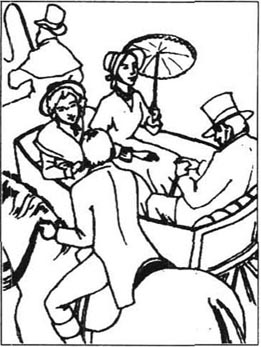
在这段日子里，我对朵拉的爱越来越强烈。似乎这世上有越多的罪恶、黑暗，朵拉这颗星就会照得我心里越亮。我确信自己已经把她看作是美丽的天使，远远地高于我们这些可怜的凡人之上。我并不真想说服她来爱我。
辟果提和我一起来到伦敦，因为巴克斯的死和丹尼尔的离开使她感到非常孤独。我控制不住把有关朵拉的事全告诉了她。她很感兴趣，并且一个劲儿地鼓励我。
“有你这样英俊、聪明的年轻人追求她，这位年轻小姐应该感到十分自豪，大卫少爷！”她叫道，“而且我相信她父亲也会很高兴接受你这位女婿！”然而，我不敢赞同她对我的处境所持的乐观态度。
不过，绝好的机会出现了。在办公室与斯本罗先生的一次长谈中，他透露下周是朵拉的生日，并邀请我一起去野餐以示庆祝。听到这消息，我完全喜疯了，根本不能冷静地考虑什么。到了第二周，我买了一身昂贵的衣服和一双靴子，订租了一匹漂亮的白马。野餐那天，我6点钟起床，到科文特花市给朵拉买了最新鲜最漂亮的一束花。10点钟，我骑着马来到了斯本罗先生家。
在门前的花园里我遇见了朵拉，多么可爱的朵拉，穿一身天蓝色的衣服，戴一顶白色的帽子！当她高兴地接过我的鲜花时，我感觉自己都快要幸福死了！
“跟你说了你准高兴，科波菲尔先生，”她妩媚地一笑，说道，“那位严厉的摩德斯通小姐不在。她至少三个星期不会回来。我嘛，有我的好朋友朱莉亚·米尔斯和我作伴。”
坐在朵拉身边的是一位我刚才没注意到的年轻小姐。尽管她大约只有20岁，可她显得很沉稳，很机智。我后来知道，她有过一段不愉快的恋爱史，所以决定再也不卷入个人情感的漩涡中。
“真替你高兴！”我红着脸回答，我一跟朵拉说话就脸红。“所有你高兴的事，我也高兴，斯本罗小姐！”米尔斯小姐没说什么，只是善意地冲我俩笑笑。
野餐地点距离住所有一段距离，斯本罗先生、朵拉和米尔斯小姐坐在敞篷的马车上，我骑着我那漂亮的白马伴在他们旁边。我再也感觉不到那种骑马的感觉了。朵拉背对着马匹坐着，看着我，把我送给她的花贴到她甜美的脸上，我们的目光常常相遇，我奇怪自己居然没从马上摔下来。我注意不到飞扬的尘土，记不得我们走过的路线。有时，斯本罗先生跟我说几句赞美风景的话，我出于礼貌回答了，可我不记得自己说了什么，我所看见的只有朵拉。
到达目的地时，我很失望地发现，被邀请的还有其他客人。我甚至连小姐太太都嫉妒，因为她们总拉着朵拉说话，把她从我身边带走。我更恨那些男士们，从第一眼见到他们起。其中有一位很烦人、喋喋不休、留着红色小胡子的家伙，自称精通做饭之道，很快把绝大多数女士吸引到他身边，其中也包括朵拉。我觉得他是我当时最危险的敌人。
我们开始用餐时，我惊恐地发现“红胡子”端着一大碗鸡肉坐在朵拉的脚边！我的脑子不能清醒地思考了，可我仍装出一副高兴的样子。我坐到一位穿粉红衣服的年轻小姐身边，饶有兴致地跟她交谈，看着她，并帮她取她所需要的任何东西。时不时地，我抬头看朵拉几眼，她也回看我几眼，可她有“红胡子”，我有粉衣姑娘。
饭后，这位年轻小姐的母亲把她带走了，我独自走进树林，心中既气愤又绝望。我准备骑上我那漂亮的小白马走开，尽管我不知道自己要去哪里，这时，我看见朵拉和米尔斯小姐向我走来。
“科波菲尔先生，”米尔斯小姐说，“你不高兴。”
“不，不，米尔斯小姐！”我坚定地否认，“我非常高兴！”
“还有你，朵拉，”米尔斯小姐继续道，“你不高兴。”
“哦，上帝！不，朱莉亚，我很高兴！”朵拉叫道。
“科波菲尔先生，朵拉，”米尔斯小姐说道，看上去既老练又聪明，“愚蠢的把戏玩够了！你们俩各自都爱着对方！承认吧，高兴起来！抓住生活给你们创造的机会！相信一位有过痛苦经历的人的话吧！”
我热血沸腾，激动万分，猛地抓起朵拉的手吻了一下——她没有抗拒！我也吻了米尔斯小姐的手，生活似乎又重放光彩了。
朵拉很腼腆地把自己的手搭在我的臂弯里，我们一起朝前走，可是没过多会儿，我们听到有客人叫她的名字，我们只好往回走。他们要求朵拉唱一首歌，“红胡子”自告奋勇提出为她去取吉他，但朵拉告诉他，除了我，谁也不知道吉他在哪儿。
这样，我取来了吉他。她唱歌时我坐在她旁边，给她拿着手套。我知道，在这一群人中间，她只为我一个人，一个爱她的人歌唱。
客人们离开后，我骑着马一路护送马车回到斯本罗住宅。斯本罗先生喝了很多酒，在座位上睡着了。米尔斯小姐露出母亲般慈爱的微笑，看着朵拉和我幸福地窃窃私语。其中有一次，米尔斯小姐把我叫到她那一侧的马车前。
“朵拉要去我那儿，”她平静地告诉我，“后天。你或许愿意去看看我们？”
“米尔斯小姐！我怎么才能感谢你呢？”我说，“你是多好的朋友——斯本罗小姐和我的朋友！”
我们到达斯本罗住所后我不得不和朵拉道别，骑马回伦敦。一路上，我成千上万次地回忆起朵拉和我说的和做的每一件事情，我决定尽快告诉她我爱她，并问她是否也爱我。这是世界上最重要的问题，而且只要朵拉才能给我问题的答案。
于是，两天后我穿上最好的衣服，按米尔斯小姐给我的地址来到她家。用人把我领进客厅，我看见米尔斯小姐正在学唱一支歌，朵拉正在画我送给她的花！短短地聊了几句后，米尔斯小姐找了个借口离开了，朵拉和我就单独留在客厅。
“我希望前天夜里你的马不至于太累吧，”朵拉抬起她美丽的大眼睛看着我，说，“从野餐地点来回地跑，对它来说是段很长的路。”
我一定要今天问她！我心里想着，浑身上下都在颤抖。“对它来说是一段很长的路，”我回答，“可对我却似乎很短，因为在你身边就是我的快乐。”
沉默了一阵后，朵拉说道：“在那天的早些时候，你好像并不在乎这种快乐，当你坐在那位穿粉红色衣服的女孩身边。不过，我希望你只是说说而已。当然，你有权爱怎么做就怎么做！”
我不知道我是怎么做的。一切发生得如此迅速。我突然抱住朵拉，滔滔不绝地说个没完。我告诉她我有多爱她，我告诉她没有她我就会死掉。当她红着脸，轻声地哭泣时，我说，从看见她的一瞬间起，我日日夜夜都在爱她，我告诉她，没有人曾像我这么爱她，并永远像我这样爱她。
不知不觉地，我发现自己安静地坐在朵拉身边，握着她的小手。我们订下了终身！我想我们明白将来有一天我们会结婚，但目前我们打算先对斯本罗先生保守我们已经订婚的秘密。米尔斯小姐进来了，她很高兴听到这个消息，并答应尽最大努力帮助我们。
这样，我一生中最幸福的时光开始了。我现在回想起来，觉得自己好傻，可又是那么可爱，那么真诚！我每天去看朵拉，没有时间顾及别人，干别的事情。然而，在我兴奋之中我突然想到了阿格尼斯，想到她沉稳的目光和温柔的神情，我立刻坐下来给她写信，告诉她有关朵拉的一切。我知道，作为我的义姐，她会分享我的快乐，而且我需要她的支持。
一天，我正和辟果提在我寓所喝茶，汤米·特拉德尔来找我。“亲爱的科波菲尔！”他叫道，“我来过好几次，你都没在家。”
“亲爱的特拉德尔，”我回答，“是的，我很抱歉，我总去找我的——D小姐，你知道。”
“我想她住在伦敦，是吧？我的——索菲——很美的名字，是吧？我的那位住在德文，我想我跟你说过。所以我不常见她。她的的确确是最可亲的姑娘！她在家非常忙，你知道，要照看其他9个孩子，还有她的母亲，不能行动的母亲。”
“她真是位了不起的姑娘！”我礼貌地附和道，“告诉我，特拉德尔，米考伯先生怎么样了？”
“我现阶段没住他们家，”特拉德尔说，“因为他的债主们最近总是催债，他只好搬到别处去住。为了避免这些讨厌的人，他甚至把自己的名字改作摩尔提么，他只在天黑后出门，并带上眼镜。”
“看来他还是没遇到转机？你借给他的钱怎么样了，特拉德尔？”
“恐怕是要不回来了，可米考伯先生答应我总有一天会还给我。他是一个好人、一个很善良的人，是吧？”特拉德尔乐观地看我一眼。
我正要回答，只听得楼梯口一阵脚步声。我很吃惊看见姨婆正往上走。她提着两个箱子，抱着她的宠猫，身后紧跟着迪克先生，提着另外两个箱子。
“亲爱的姨婆！”我叫道，“多么意外的惊喜！”我们互相亲吻了一下，我和迪克先生握了握手。特拉德尔悄悄地离开了，因为他知道我们接下来就要商讨家事。辟果提给姨婆另沏了一些茶，可她却重重地坐在了她的箱子上。
“亲爱的姨婆！”我说，“您可以让自己舒服点！坐到椅子上或是沙发上吧！”
“你知道我为什么坐在箱子上吗？”她问，很认真地看着我。
我摇了摇头，猜不出来。
“因为我坐着的就是我的全部所有！我失去了全部的积蓄，我亲爱的！”
没有比这让我更震惊的消息了，哪怕是这房子和这房子里的人都掉进了泰晤士河。
“是的，”姨婆接着说道，把头静静地枕在我的肩上，“明天我会告诉你一切，大卫，但今晚我们必须给迪克先生找个地方睡觉，我可以睡在这里，省点钱。”就这样，那天晚上，姨婆同意了睡我的床，我自己则准备睡客厅的沙发，我给迪克先生租了一间邻居的房间。我回来时，发现姨婆正在客厅里踱来踱去。
“那位叫辟果提的女人对你很好，大卫！”她说，“她提出要拿出她从她丈夫那儿继承到的一部分钱给我们！我自然一口回绝了，可她是个好人。她把雅茅斯的悲剧告诉我了。”
“是的，可怜的埃米莉！”我情不自禁地叫道。
“你是说愚蠢的埃米莉吧！可我为你感到惋惜，因为你曾经一度关心过她。辟果提告诉我你如今又爱上了一个人！”
我脸红了。“我是真心爱着朵拉，姨婆！”
“我猜那小东西一定很可爱，是吗？”
“没有人能想象得出她有多可爱！”
“她一点儿都不愚蠢吧，是吗？”姨婆问。
我以前从未考虑过这种可能性，所以只重复着姨婆的问话，“愚蠢吗，姨婆？”
“好了，好了，我只是随口问问，”姨婆温和地回答，“大卫，你很多情，像你的母亲一样，你需要有个善良、认真、懂事理的人来爱你。”
“姨婆，你要知道朵拉有多懂事理就好了！”我回答。
“噢，大卫！”她回答，“盲目，盲目，盲目呀！”
她的话使我很不舒服，可我很高兴她知道了我的秘密。我想或许她太累了，就跟她道了晚安。她进了我的卧室，我躺在沙发上。
那是多么痛苦的一宿！我知道我该考虑考虑可怜的姨婆的处境，但我控制不住要想朵拉。我要是没钱，没有贵重的衣服，没有漂亮的白马，或者没有鲜花送给她，我怎么能跟她结婚？
第二天早上，我起得很早，边散步边呼吸着新鲜空气。往回走时，一辆马车在我身边停下来，阿格尼斯·威克菲尔走下车。看到她那美丽、沉稳的脸正冲我微笑，我顿时觉得心情好多了。她听说我姨婆遇上了麻烦，特到伦敦来看望她。我们就一起朝我的寓所走去。
“你知道吗，尤赖亚·希普如今已是我父亲的生意合伙人了？”她平静地说道，“他对我父亲的影响太大，父亲身体更加糟糕了。他看上去苍老了好几岁，而且受到尤赖亚的挑唆，恐怕酒喝得比以前更凶了。尤赖亚和他的老母亲如今和我们住在一起，所以我不能总跟父亲在一起——来——来保护他不受尤赖亚的牵制。我仅仅希望亲情和真诚会战胜罪恶！”
我没能谈谈我对尤赖亚的看法，因为那时我们已经走到了我的寓所。姨婆很高兴又一次见到阿格尼斯，并把我们让到辟果提旁边的沙发上坐下。
“现在我来跟你解释我的钱到底出什么事了，”姨婆坚定地说。奇怪的是，我看见此时的阿格尼斯脸色苍白，浑身发抖。贝茜·特拉伍德继续说，“这些年来我存了一大笔钱，我的律师威克菲尔先生曾帮助我把钱投资到合适的企业。但最近我觉得他已不是原来的那个好律师了，所以我只好自己决定投资方向。我犯了个多大的错误！谁知道那些钱都去了哪里？换成了黄金，入了外国银行，亦或是别的。为此犯愁没有用，但我可以告诉你，这钱现在已一分不剩了。”
阿格尼斯的脸上重新恢复了血色，“那么说这——这不是我父亲的错，亲爱的特拉伍德小姐？”
“根本不是，阿格尼斯，”姨婆情绪高昂地说道，“现在谁能给我出点主意吗？我已经让我的女仆詹妮特租掉了我在肯特的小别墅。那会给我们带来每年70英镑左右的收入，我想我们靠这些生活是远远不够的。”
“您和大卫住这套房子，迪克先生就住拐脚处租来的那间房间，开销很小嘛，”阿格尼斯建议道，“而且我想我能给大卫找一份差事。你还记得斯特朗博士吗，坎特伯雷城那所学校的校长？他现已退休，住在伦敦，他需要一位私人秘书，早晚到他家为他工作。他那天向父亲打听此事。你觉得如何？”
“阿格尼斯！”我叫起来，“没有你我们能做什么呢？你是我的好天使，我以前就已经告诉过你！我可以毫不费力地做斯特朗博士的秘书，同时可以继续在斯本罗先生的事务所工作。我今天就去见他，把此事跟他谈妥。”
阿格尼斯起身告辞时冲我甜美地一笑。我送她下楼，并一同走到长途马车站，在街上我看见一位年老的乞丐，手拿一根白手杖。他伸着干瘦的手要钱，嘴里叫着，“盲目！盲目！盲目呀！”听起来与我姨婆那天说的那几句相响应。啊，阿格尼斯，亲爱的姐姐！要是我当时就知道这个我很久以后才明白的道理就好了！
8．David's new life
8
David's new life
With Agnes's encouragement I felt much stronger, and no longer depressed. My life now had a purpose. I intended to work as hard as I could, to help my aunt and to earn enough money to marry Dora. I got up every morning at five o'clock, walked to Dr Strong's house on the other side of London, worked with him for two hours every morning, and then walked back to Mr Spenlow's office, where I spent most of the day in the lawcourts. Then I returned to Dr Strong's for two or three more hours in the evening, and finally came home to my flat, where my aunt, Peggotty and Mr Dick would be waiting for me. I was glad to be able to tell my aunt that Dr Strong would pay me seventy pounds a year for my work. With that, and the rent from my aunt's house in Kent, we could live quite well, if we were careful. Because I was young and healthy, I did not mind hard work, and whenever I was tired, I told myself, 'You're doing it for Dora!' and that made me work even harder.
When I met Traddles one day near the courts, I told him about my new situation, and he was very sympathetic.
'But I have news for you too, Copperfield!' he said. 'The Micawbers are moving to Canterbury.'
'Oh! That means something must have turned up for them!' I replied, interested.
'Yes, Mr Micawber is going to become assistant to someone called Uriah Heep, a partner in a firm of Canterbury lawyers.'
'Heep!' I cried in horror. 'I know him! Why would Mr Micawber want to work for him?'
'Well, I do know that Heep has paid all Mr Micawber's debts in London,' answered Traddles. 'The whole family is leaving tomorrow. They asked me to tell you.'
I wondered why Heep wanted Micawber to work for him, and I felt sure Uriah had some evil plan in his ugly head.
The next day Peggotty was returning to Yarmouth to look after Ham, while Daniel was away. After I had taken her to the coach station and said goodbye to her, I hurried to Miss Mills's house. I had not yet told Dora about the changes in my life, because I had not wanted to explain it all in a letter, but today she was visiting Julia Mills and was expecting me to come to tea.
How happy and beautiful Dora looked when she met me in the sitting-room! And how shocked and miserable she looked when I asked her immediately, 'Can you love a beggar, Dora?' My pretty little Dora! She had no idea what I meant.
'Don't be silly, David!' she cried. 'What are you talking about?'
'It's true, Dora, my love!' I cried. 'I've lost all my money! I'm a beggar!' And I looked so serious that Dora was frightened, and began to sob bitterly on my shoulder.
'But I love you, Dora, and always will!' I continued. 'It doesn't matter if we are poor, because I'll work hard to buy our bread. We don't need much as long as we have each other! Tell me your heart is still mine, dear Dora!'
'Oh yes!' she cried. 'Oh yes, it's all yours! Only, don't frighten me again! Don't talk of hard work and bread! I don't understand! I hardly ever eat bread!'
I loved her more than ever. But I felt she was not very practical. In a few moments, when she had stopped crying and was calmer, I tried again to make her understand.
'My dearest! May I mention something?'
'Oh, please don't be practical!' begged Dora, tears coming to her lovely eyes. 'It frightens me so much!'
'My dear one, if we work together, and share our problems, it will make us, and our love, stronger.'
'But I'm not strong at all!' she cried miserably. 'Ask Julia! She'll tell you—I'm weak, and foolish!'
'But if you thought sometimes, my sweet Dora, that you are engaged to a poor man—if you tried to see how your father manages the servants, or how much food costs in the markets, it would be helpful to us. We must be brave, dear Dora! Our path in life is steep and rocky—'
I was becoming quite enthusiastic, but I suddenly realized I had said far too much. Poor little Dora was sobbing and screaming with fear, and in a moment was lying unconscious on the sofa. I really thought I had killed her. I threw water on her face and went down on my knees to ask her to forgive me. I called myself a selfish, heartless creature, and shouted for Julia Mills. At last she hurried in, and I explained what had happened. When Dora opened her eyes, her friend helped her upstairs.
While Dora was upstairs, washing her face and calming herself, I asked Miss Mills's advice on the best way to encourage Dora to become more practical. Miss Mills shook her head sadly.
'I must be honest with you, Mr Copperfield. Our dearest Dora is a beautiful, innocent child of nature, full of light and happiness. She is above the things of this world, which we poor humans have to worry about. I think you'll just have to accept that fact.'
When Dora came downstairs again, she looked so lovely that I felt bitterly angry with myself for making her unhappy, even for a moment. We had tea, and she sang her French songs to me, and played the guitar. We were happy again, until the moment when I stupidly mentioned that I had to get up at five o'clock the next morning. Suddenly her pretty face looked sad, and she did not play or sing again. When I got up to go, she came up close to me, and said lovingly, 'You bad boy, don't be so silly! Don't get up at five o'clock! Why should you?'
'But my love, I have work to do! I have to work in order to live!' I replied.
'Work? Don't be so foolish, David dear!' and she seemed to think that was the end of the matter, as she gave me a kiss straight from her innocent little heart.
I loved her, and went on loving her. But I went on working hard too, and worrying about earning money. Some evenings, as I sat opposite my aunt in my little sitting-room at the end of another exhausting day, I was quite frightened, when I thought of the problems I was going to have to solve alone.
Several months passed in this way. Dora and I wrote to each other every day, and occasionally I was able to visit her at Miss Mills's house. But one morning when I arrived at the office for work, Mr Spenlow greeted me very coldly and asked me to step into his office, where we could talk privately. When I entered the room, I was surprised to see Miss Murdstone standing by his desk, staring unpleasantly at me. I knew at once that Dora's father had discovered our secret, and I guessed who had told him.
'Mr Copperfield,' said Mr Spenlow, frowning sternly at me, 'I am sorry to say that Miss Murdstone has found some letters which appear to be from you to my daughter Dora. Are they yours?'
I looked at the letters he handed to me, blushed, and whispered, 'Yes, sir,' Poor little Dora! I hoped she had not been frightened by that horrible Murdstone woman. I hated to think of Dora's unhappiness at losing my letters.
'I suspected something was wrong when Miss Spenlow came back from her last visit to Miss Mills,' said Miss Murdstone, looking very pleased with herself. 'I always said Julia Mills was not a suitable friend for Miss Spenlow, and I was right!'
Mr Spenlow appeared to agree, but rather sadly.
'I am very sorry, sir,' I said, 'but it is all my fault. Please don't blame Dora—'
'Miss Spenlow to you, young man!' said her father angrily.
'I know it wasn't right to keep it secret, sir, but I love your daughter, and I hope that one day—'
'Don't speak to me of love, Mr Copperfield!' cried Mr Spenlow. 'You are both much too young! We'll throw these letters in the fire, and you must promise to forget the whole thing. There is no question of your marrying Dora!'
'But sir, I can't forget her! I love her!' I protested.
'That is my last word, Mr Copperfield! When you have time to consider, you'll realize it's wiser to do as I say. Now go to your work!'
I spent all day thinking of poor sweet Dora, and how she must be feeling. In the evening I hurried round to Miss Mills's house, but although she spoke wisely of love and broken hearts, she could not offer me any practical advice.
The next day, after a sleepless night, I arrived at the office at the normal time, and discovered all the clerks standing talking at the front door. This was so unusual that I stopped to ask what had happened.
'Why, don't you know?' asked one of them. 'The police have found Mr Spenlow dead!' I fell back, shocked.
'You look very pale, Mr Copperfield!' said another. 'Sit down here, sir!'
'Tell me—tell me what happened,' I gasped.
'Well, he went into town to dinner last night, and the carriage and horses came back at midnight without him. He was driving himself, you see. So the servants went to look for him, and found him dead in the road. He must have been ill, and have fallen out of the carriage. Anyway, he was dead when they found him.'
This was a terrible shock to me. Perhaps his anger with me had made him ill. In that case I was partly to blame for his death. But I am sorry to say I was also jealous of Dora's sadness. While she was crying for her dead father, she was not thinking of me, and I selfishly wanted to be the only person in her life.
In the next few weeks I became quite desperate because I could not see or speak to my sweet Dora. Miss Mills reported that Dora cried all day, and when my name was mentioned, only sobbed more loudly and said, 'Oh poor dear Father! How wicked of me to keep a secret from him! Oh! Oh!' So I did not feel encouraged to visit her. Soon after her father's funeral, Dora was taken to live with her two aunts at Putney, in south London, where she seemed to be further away from me than ever.
My aunt, meanwhile, began to be seriously worried about my health, as I was getting more and more depressed. So she suggested I should go to Dover for a few days, to make sure that her house was still in good condition, and then to Canterbury, to visit the Wickfields. I agreed willingly, as I was always happy to see Agnes. It was easy to take a few days' holiday from my work at the lawcourts and with Dr Strong.
I was glad to find that the person who was renting my aunt's house in Dover was looking after it well. I was then free to continue my journey to Canterbury, that beautiful ancient city, which seemed very little changed since my schooldays. The soft, clean air made me feel better than I had done for weeks.
When I arrived at the Wickfields' House, I found Mr Micawber in Uriah Heep's old office. We were pleased to see each other, but we both felt a little embarrassed. I realized that he did not want to talk about confidential matters concerning the firm of Heep and Wickfield, and he knew that I disliked his employer, Heep. So conversation was difficult, and in the end I was glad to leave him, and go upstairs to look for Agnes.
I found her in her sitting-room, and she looked up at me with such a warm welcome in her smile that I was very moved.
'Ah, Agnes! ' I said. 'I've missed you so much recently! You helped me such a lot in the old days that I suppose I never learnt to think for myself. I always feel I need your help and advice. I get into such trouble, and I get so worried, and have so little confidence in myself, but when I'm with you, you give me purpose! You make me strong! What is your secret, my dear adopted sister?'
Agnes gave me her hand, which I kissed, and she went on, in her sisterly way, to listen sympathetically as I told her everything that had happened in the past few weeks. As usual, she knew the right thing to do. She advised me to write to Dora's aunts, to ask if I could visit Dora occasionally, and she encouraged me in my hopes of marriage. I felt again that peace which Agnes always brought to me.
We had not been sitting together long when Mrs Heep came in. She did not leave us for a moment all that evening, and I wondered whether Uriah had told her to watch over us. Whenever I looked at Agnes's lovely face, I saw Mrs Heep's evil black eyes staring at me.
The next day, Mrs Heep did not leave Agnes and me alone even for a minute. The Heeps, mother and son, seemed to me like two ugly great black birds hanging over the house, and they made me so uncomfortable that I went out for a walk in the afternoon. I was walking along a path near the house, wondering if I should warn Agnes about Uriah's plan of marriage, when I heard footsteps behind me, and turned to see Uriah himself running after me.
'Wait for me, Mr Copperfield!' he cried.
'Actually,' I said, 'I came out to be alone.'
'Ah!' he said, with his oily smile, 'you don't like my mother being there all the time, do you?'
'No, I don't,' I replied, not caring if I sounded rude.
'But you see,' he continued, 'in my humble position, I have to be very careful. I'm not married to my Agnes yet, and you're a dangerous rival, Mr Copperfield.'
'What!' I cried in disgust. 'You allow Miss Wickfield no peace in her own home because of me? Don't you realize I think of her as my very dear sister, nothing more? Let me tell you I am engaged to another lady! There! Is that enough for you?'
'Oh Mr Copperfield!' cried Uriah, gratefully shaking my hand with his cold fishy one. 'I'll tell Mother to stop watching you at once! Why didn't you tell me that before? I know you've never liked and trusted me, as I've liked you!'
We returned to the house together in silence. That evening after dinner, when Agnes and Mrs Heep had left us, Uriah said to Mr Wickfield, 'Let's have some wine, partner, and drink to young Mr Copperfield's health. It isn't often we have the pleasure of his company, is it, partner?'
I knew Uriah was deliberately encouraging Mr Wickfield to drink too much, but I saw that although Agnes's father was aware of his weakness, he could no longer stop himself. As the evening passed, I was disgusted to see that Uriah became more and more cheerful as Mr Wickfield became more and more drunk. Finally Uriah stood up with a glass in his hand.
'Come, partner!' he said with his evil smile. 'Let's drink to the health of the most beautiful woman in the world!'
Poor, broken Mr Wickfield looked for a moment at the picture of his dead wife on the wall, so similar to Agnes.
'I may be humble,' continued Uriah, 'but I admire, no, I love your daughter Agnes!'
Suddenly a horrible cry came from Mr Wickfield. He had stood up, and was screaming with anger. He behaved so wildly and desperately that I thought he had gone mad. 'My child and you, Heep! No, never! You've taken everything from me, my business, my good name, my home, but you'll never take her!'
'Perhaps I've said too much too soon,' said Uriah, looking uncomfortable. 'But you'll be sorry, partner, if you say any more! You need me, remember? You've got nothing without me! Remember that before you accuse me of anything!'
Just then the door opened and Agnes entered silently.
'You're not well, Father, come with me,' she whispered gently, and helped the ashamed old man out. I thought she must have heard what had been said.
Later that night she came to say goodnight to me in the sitting-room, where I was alone, reading.
'Agnes, my dear sister,' I said to her, 'promise me that you will never agree to marry that evil creature, for any reason!'
Through her tears she smiled calmly at me. 'Don't worry, brother, I'm not afraid of him. My duty is to take care of Father, and I trust in God for the rest. Goodnight, David.'
purpose n. that which one means to do, get, be, etc. 目的，计划。
lawcourt n. court of justice 法庭。
healthy a. having good health, strong and able to resist disease 健康的。
mind v. be troubled by, object to 介意，反对。
whenever adv. whatever time 无论何时。
sympathetic a. having or showing pity and tenderness 同情的。
some pron. 某个。
hurry v. move or do sth. quickly 匆忙。
explain v. make plain or clear 说明，解释。
shoulder n. that part of the body of a human being or animal where an arm or foreleg is joined to the trunk 肩。
continue v. go on 继续。
weak a. lacking in strength, easily broken, unable to resist hard wear or use 弱的，虚弱的。
cost v. require the payment of 花费，价值。
market n. public place where people meet and sell goods 市场。
steep a. rising or falling sharply 陡峭的。
kill v. put to death 杀死。
go down on my knee 跪下。
creature n. living person 人。
child of nature 自然之子。
this world 尘世。
work in order to live 为生存而工作。
opposite a. facing front or back to back 面对面的，背对背的。
exhausting a. tiring 令人疲惫的。
solve v. find a way out of a difficulty 解决。
occasionally adv. now and then 时而。
lose v. no longer have 失去。
suspect v. have an idea or feeling 猜想。
something was wrong 出了毛病，不正常。
suitable a. right for the purpose or occasion 合适的。
There is no question of... It's impossible to ……不可能。
normal a. in agreement with what is usual, regular 正常的，平常的。
be to blame deserve censure 应受责备。
report v. give an account of 报告。
all day 整天。
while conj. during the time that, at the same time as 正当……时候。
take v. carry away 带走。
further adv. more far 更远地。
meanwhile adv. in or during the time between 其时，当其时。
in good condition 状态良好。
embarrassed a. feeling awkward or ashamed 困窘的。
employer n. person who employs others 雇主。
watch v. keep the eyes on 警戒。
hang v. fix the top so that the lower part is free 悬挂。
wonder v. ask oneself 问自己。
walk along a path 沿小路走。
rival n. person who competes with another 竞争者，对手。
disgust n. strong feeling of dislike or distaste 厌恶，嫌恶。
There! 瞧！
in silence 默不作声。
drink to sb's health 为某人的健康干杯。
company n. being together with another or others 伴随。
deliberately adv. on purpose 故意地。
no longer 不再。
accuse v. say that sb. has done wrong, broken the law 控诉，指控。
she must have heard 肯定听到了。
say goodnight 道晚安。
duty n. what one is obliged to do by morality, law 责任，义务。
rest n. what remains, the remainder 其余。
8 大卫的新生活
8 大卫的新生活
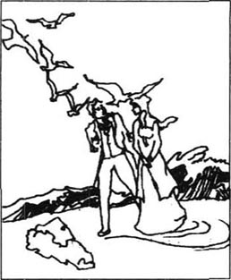
有阿格尼斯的鼓励，我的劲头更足了，并不再消沉。我的生活如今有了目标。我打算尽可能努力工作，为帮助我姨婆，也为娶朵拉而挣足够的钱。我每天早上5点钟起床，走着去位于伦敦城另一端的斯特朗博士家，每个上午跟他干两个小时，然后走回来到斯本罗先生的办公室，把我大部分时间花在法庭上。晚上，我又回到斯特朗博士处，干上两到三个小时，最后才回到我的寓所，我姨婆、辟果提和迪克先生在那儿等我。我很高兴地告诉姨婆，斯特朗博士将付给我每年70英镑的酬劳。加上姨婆在肯特的房租，我们能生活得很不错，只消谨慎安排就是了。由于我年轻、健康，我不在乎工作艰辛。累的时候，我对自己说，“一切为了朵拉！”那样我就会更努力地工作。
一天，我在法院附近遇上特拉德尔，我告诉他我的近况，他表示很同情。
“可我也有消息告诉你，科波菲尔！”他说，“米考伯一家搬到了坎特伯雷城。”
“噢！那就是说他们有了转机！”我很感兴趣地回答。
“是的，米考伯先生将成为一位名叫尤赖亚·希普的人的助手，他是坎城一家律师事务所的合伙人。”
“希普！”我惊恐地叫道，“我知道他！米考伯先生怎么会想到给他干？”
“嘿，反正我知道希普为米考伯先生偿还了他在伦敦欠下的所有债务，”特拉德尔回答，“他们一家明天就离开。他们要我告诉你。”
我不明白希普为什么找米考伯给他干活，但我肯定尤赖亚丑陋的脑子里又在捉摸什么坏计划。
第二天，辟果提要回雅茅斯照顾哈姆，因为丹尼尔不在。我把她送到长途马车站，跟她道别后，我急冲冲地来到米尔斯小姐的住处。我还未曾告诉朵拉我生活中的变化，因为我不想仅以一封信解释这一切。而今天她要来看看朱莉亚·米尔斯，并约我一起喝茶。
当我在客厅见着朵拉时，她是那么高兴，那么美丽！当我突然问她：“你会爱一个穷光蛋吗，朵拉？”时，她是那么震惊，那么痛苦！我美丽的小朵拉！她不明白我的意思。
“别犯傻了，大卫！”她叫道，“你在说什么？”
“真的，朵拉，我的宝贝！”我叫道，“我失去了所有的钱！我成了穷光蛋！”我显得很认真，竟把朵拉吓哭了，她靠在我肩上痛苦地抽泣起来。
“可我爱你，朵拉，永远爱你！”我继续道，“穷并没关系，因为我会努力工作，买到面包，只要有你有我，我们不需要更多的！告诉我你的心依然属于我，亲爱的朵拉！”
“噢，是的！”她哭道，“噢，是的，全部属于你！只要你别再吓我！别再谈努力工作和面包！我不懂！我几乎没吃过面包！”
我比以前更爱她了，但我感觉到她很不现实。过了一会儿，当她停止哭泣，渐渐平静下来时，我又一次试图让她明白。
“我最亲爱的！可以跟你说些事吗？”
“噢，请别谈现实”！她乞求道，可爱的双眼涌出泪水，“它让我好害怕！”
“我的爱人，如果我们一起工作，一起克服困难，那将会使我们的爱情更坚固。”
“可我一点儿都不坚强”！她痛苦地哭道，“你问朱莉亚！她会告诉你——我很懦弱，很愚蠢！”
“可如果你有时想一想，我的心肝朵拉，你要嫁的是一位穷人——如果你用心注意一下你父亲是怎么管理用人们，市场上的食品需要多少钱，那对我们将很有帮助。我们必须勇敢，亲爱的朵拉！我们的生活道路坎坎坷坷，很不平坦——”
我开始情绪激昂，可突然我发现自己说得太过火了。可怜的小朵拉恐怖地抽泣，尖叫着，不一会儿倒在沙发上，失去了知觉。我真以为自己杀了她。我往她脸上洒水，并跪下来请求她原谅。我骂自己是自私、无情的畜生，并大声呼喊朱莉亚·米尔斯。最后她赶来了，我解释了发生的一切。朵拉睁开眼睛时，她朋友扶着她上了楼。
当朵拉上楼洗脸以使自己镇静的时候，我征求米尔斯小姐的意见，怎样通过最合适的渠道让朵拉变得更切实际。米尔斯小姐忧郁地摇了摇头。
“实不相瞒，科波菲尔先生。我们最亲爱的朵拉是一位美丽、天真的自然之子，充满了生机和快乐。她超越了世间万物，不像我们凡俗之辈这样操心。我想你只能接受这一事实。”
当朵拉又下楼时，她看上去是那么的可爱以致我痛恨自己带给她痛苦，即使是片刻的痛苦。我们开始喝茶，她给我唱法文歌曲，弹奏吉他。我们重新快乐起来，直到我愚蠢地提到我第二天必须五点钟起床。突然，她美丽的脸上露出忧伤，不再继续弹唱。当我起身要走时，她来到我跟前，动情地说道：“你这个坏东西，别这么犯傻了！用不着五点就起来！为什么你该这样？”
“可是，我的宝贝，我有工作要做！为了生存我必须工作！”我回答。
“工作？别犯傻了，大卫，亲爱的！”她似乎觉得事情就这么解决了，并发自她天真的内心给了我一个吻。
我爱她，而且一直都爱她。可我也得坚持拼命工作，拼命挣钱。有几天晚上，当我累了一整天，在我那小客厅里与我姨婆相对而坐时，想着我必须一个人克服这些困难，就感到十分害怕。
就这样过去了好几个月。朵拉和我每天通信，时而我也能去米尔斯小姐的住所看她。可有一天早上，当我来到办公室工作时，斯本罗先生冷冷地和我打了一声招呼，并要我到他办公室跟我单独谈谈。我走进房间，意外地发现摩德斯通小姐站在他的书桌边，很不愉快地盯着我。我立刻意识到朵拉的父亲已经发现了我们的秘密，而且猜到是谁告的状。
“科波菲尔先生，”斯本罗先生朝我严肃地皱皱眉，说道，“我很抱歉告诉你，摩德斯通小姐发现了一些似乎是你写给我女儿朵拉的信。是你写的吗？”
我看了一下他递给我的几封信，红着脸轻声说道：“是的，先生。”可怜的小朵拉！希望她没被这位可怕的摩德斯通女人吓着。我不愿想象朵拉在丢失我的信后的痛苦状。
“我就觉察到斯本罗小姐上次从米尔斯小姐那儿回来时有些不太对劲。”摩德斯通小姐说，显得对自己很满意。“我一直说朱莉亚·米尔斯不是斯本罗小姐合适的朋友，我说对了！”
斯本罗先生表示同意，可他十分忧郁。
“非常抱歉，先生，”我说，“那都是我的错。请别责怪朵拉——”
“你只能称她斯本罗小姐，年轻人！”她父亲气愤地说道。
“我知道保守秘密不对，先生，但我爱您的女儿，我希望有一天——”
“别跟我谈爱，科波菲尔先生！”斯本罗先生叫起来，“你们俩都太年轻！我们会把这些信件烧掉，你必须保证忘掉这整件事。你不可能娶朵拉！”
“可是，先生，我不能忘掉她！我爱她！”我反驳道。
“这是我的最后通牒，科波菲尔先生！你要有时间考虑一下，就会意识到照我说的做是明智的。现在，干活去吧！”
我一整天都在想可怜的心肝朵拉，想她会是什么感觉。到了晚上，我急急忙忙来到米尔斯小姐处，可虽然她对爱情和破碎的心有高见，但她也不能给我提供切合实际的建议。
第二天，经过无眠的一夜后，我按老时间照常来到办公室，可我发现所有的职员都站在前门聊天。这一现象很反常，我停下来问他们发生了什么。
“怎么，你不知道？”其中一位回答，“警察发现斯本罗先生死了！”我大为震惊，向后倒去。
“你脸色苍白，科波菲尔先生！”另一位说道，“坐这儿吧，先生。”
“告诉我——告诉我怎么回事，”我喘着粗气说道。
“嗯，他昨晚去城里吃晚饭，午夜时分马和马车回来了，车上没有他。他是自己驾着车去的，你知道。所以用人们出去找他，发现他已死在路边。他一定是病了，从马车上摔了下来。不管怎样，反正他们找到他时他已经死了。”
这对我可是一个可怕的打击。或许是因为他对我的愤怒使他发病。要是那样的话，对他的死我就要负部分的责任。可我很抱歉，我还嫉妒朵拉的悲伤。因为当她为死去的父亲哭泣的时候，心里就没有我了，而我却自私地想成为她生活中唯一的人。
接下来的几周我变得十分绝望，因为我不能与我的心肝朵拉见面或聊天。据米尔斯小姐说，朵拉整天哭泣，当别人提到我的名字时，她只会哭得更厉害，并且说道：“噢，可怜的、亲爱的父亲！我有多坏呀，竟然对他严守秘密！噢！噢！”所以我没有勇气去看她。她父亲的葬礼结束不久，朵拉被带到伦敦南部的普特纳，和她的两位姑姑生活在一起。她似乎离我更远了。
与此同时，姨婆开始真正地担心起我的身体状况，因为我一天比一天抑郁。所以她建议我去多佛待几天，看看她的房子是否依然完好，然后再去坎特伯雷城看看威克菲尔父女。我欣然同意了，因为我总是很高兴见着阿格尼斯。而且从我工作的法院和斯特朗博士那儿请几天假比较容易。
我很欣慰，发现租用我姨婆在多佛那套房子的人把房子照看得很好。这样，我就有更多的时间继续我旅行的下一站，坎特伯雷，那个美丽而古老的城市，自从我上学时代到现在似乎也没什么改变。这儿轻柔、洁净的空气令我的感觉好了许多，走出了这几个星期以来的阴影。
我到威克菲尔住所时，看见米考伯先生在尤赖亚·希普原来的办公室。我们彼此都很高兴见到对方，但都感到有点尴尬。我注意到他不想透露有关希普·威克菲尔律师事务所的机密消息，他知道我不喜欢他的雇主希普。所以谈话很难展开，最后，我很高兴跟他告别，来到楼上找阿格尼斯。
我在客厅里发现了她，她抬眼看我，热情地朝着我微笑，以示欢迎，我颇为感动。
“啊，阿格尼斯！”我说，“我最近非常想你！你在过去给过我那么多帮助，我想我从未学会独立思考。我总感觉需要你的帮助和建议。现在我陷入了困境，十分苦恼，没有一点自信，但跟你在一起时，你却使我目标明确！你让我充满力量！你的秘诀是什么，我亲爱的姐姐？”
阿格尼斯伸给我一只手，我吻了一下，她继续像大姐姐一样，十分同情地倾听我诉说过去这几周里发生的每一件事情。像往常一样，她知道该怎么做。她建议我给朵拉的姑姑写信，询问是否能常去看朵拉，她还鼓励我实现结婚的希望，我又一次感受到阿格尼斯带给我的心灵的宁静。
我们俩还没坐多会儿，希普太太就进来了。她整个晚上都没有离开我们一步。我不知道是否是尤赖亚派她来监视我们的。我每次注视阿格尼斯可爱的脸时，总看见希普太太邪恶的黑眼睛紧盯着我不放。
第二天，希普太太没给阿格尼斯和我留下片刻单独在一起的时间。这希普母子，在我看来，就像是徘徊在房子里的两只丑陋的大黑鸟，他们使我感到十分不舒服，所以到了下午，我就独自走出去散步。我沿着房子附近的一条小道走着，捉摸着我是否应该告诉阿格尼斯尤赖亚的结婚计划，这时我听见身后的脚步声，转身看见尤赖亚自己跑来追我。
“等等我，科波菲尔先生！”他叫道。
“其实，”我说，“我出来是想单独待会儿。”
“啊！”他僵硬地一笑，说，“你不喜欢我母亲总在那里，是吧？”
“是的，不喜欢。”我回答，没在乎自己的说话是否粗鲁。
“可你知道，”他继续说道，“处在我这样卑微的位置，我不得不十分谨慎。我还没有把阿格尼斯娶过门，而你是一位危险的对手，科波菲尔先生。”
“什么！”我厌恶地叫道，“你不让威克菲尔小姐在自己家里有片刻的宁静是因为我？你没发现我只是把她当成我十分亲密的姐姐，仅此而已？我告诉你吧，我已经和另一位女士订了婚！瞧！放心了吧？”
“噢，科波菲尔先生！”尤赖亚叫道，用他那冰凉的手，颇为感激地握了握我的手，“我马上告诉母亲停止对你的监视！你干吗不早跟我说呢？我知道你从来都没有喜欢过我、相信过我，而我却喜欢你！”
我们俩一起走回屋里，谁也没说话。那天吃完晚饭后，阿格尼斯和希普太太出去了，尤赖亚对威克菲尔先生说：“我们来点酒吧，我的伙伴，祝年轻的科波菲尔先生健康。我们不是能常常有幸请着他的，是吧，朋友？”
我知道尤赖亚故意鼓动威克菲尔先生酗酒，但我看出尽管阿格尼斯的父亲意识到自己身体虚弱，但他已不能克制自己。一晚上下来，我看见，随着威克菲尔先生越喝越醉，尤赖亚变得越来越高兴，这使我很气愤。最后，尤赖亚手中举着一杯酒站起来。
“来，我的伙伴！”他阴险地笑了笑，说，“让我们为世界上最美丽的女人的健康干杯！”
可怜的、心碎的威克菲尔先生抬头看了一会儿墙上已过世的妻子的画像，她那么像阿格尼斯。
“我也许卑微，”尤赖亚继续道，“但我敬重，不，我爱你的女儿阿格尼斯！”
突然，威克菲尔先生发出一声可怕的叫喊，他站起身来，愤怒地尖叫着。他的行为如此疯狂、绝望，我真觉得他已经疯了。“我的孩子和你，希普！不，不可能！你夺走了我的一切，我的事业，我的名誉，我的房子，但你决夺不走她！”
“或许我说得太多太早了，”尤赖亚不自在地说道，“但你要再说话，你会后悔的，伙伴！你需要我，记得吗？没有我你什么都得不到！在你指责我任何事之前记住这一点！”
正在这时，门开了，阿格尼斯静静地走进来。“你不舒服，父亲，来，跟我走。”她温和地轻声说道，扶着这位深受羞辱的老人走出了房间。我想她一定听见了刚才的话。
那天晚上晚些时候，我正一个人在客厅里看书，她进来道晚安。
“阿格尼斯，我亲爱的姐姐，”我对她说，“答应我你决不同意嫁给那个恶毒的畜生，不管出于什么原因！”
透过泪水，她平静地冲我笑笑，“别担心，弟弟，我不怕他。我的职责就是照顾父亲，我相信上帝会安排一切。晚安，大卫。”
9．David gets married
9
David gets married
When I returned to London, I was delighted to discover that Dora's aunts had decided to allow me to visit her. So every Saturday and Sunday I walked to their house in Putney, and spent the afternoons there. Sometimes Dora sang or played the guitar, sometimes we walked by the river, and sometimes I brought Traddles or my aunt with me. What happy times they were!
Mr Spenlow had seemed a very rich man to me, but when he died the lawyers discovered that Dora would not inherit much from him after all, as there were many debts to pay. So I did not feel worried that anyone would suspect me of marrying Dora for her money. Mr Spenlow's firm lost a lot of business after his death, and I realized I would have to find another profession. I had always been good at writing, so I continued as secretary to Dr Strong, and also began reporting what was said in parliament, for the daily newspapers. I even wrote some stories, which were published in magazines, and was very pleased with the money I was earning.
The months passed, and I reached my twenty-first birthday. Traddles was still studying to be a lawyer, and still hoping to marry 'the dearest girl in the world'. I had moved out of my flat into a pleasant little house, and at last Dora's aunts had agreed to our marriage. I was looking forward to the happiest day of my life. The next few days went by very fast in a mist of excitement and happiness. My aunt and Mr Dick moved into an even smaller house near mine, and Peggotty travelled from Yarmouth to be present at my wedding.
I had always wanted Agnes to meet Dora, so I was glad when they met, the day before the wedding. It was beautiful to see Dora's pretty face next to Agnes's calm one, and Dora whispering her secrets into Agnes's ears, as a child does to its mother. But after Agnes had gone to see my aunt, Dora said seriously to me, when we were alone, 'Perhaps if I'd had Agnes as a friend when I was younger, David dear, I wouldn't be so foolish and silly.'
'But I love you as you are, Dora!' I replied.
'I wonder why you ever fell in love with me!'
'Because nobody can see you, and not fall in love with you!'
'But if you'd never seen me, David, I wonder who you'd have married...'
I laughed and kissed her pretty lips, and she was soon as cheerful as usual again.
I cannot remember much about the wedding, except Dora by my side, in her beautiful dress and with a blushing face. Only when we were driving away from Putney together, did I wake from the dream. I believed it at last! It was my dear little wife I was sitting next to, whom I loved so much!
It seemed strange to return from our week's holiday and to find myself in my own small house with Dora. It was difficult to believe that we were going to spend the rest of our lives together. But soon I realized that married life was not as comfortable as it appeared. Neither Dora nor I knew anything about managing the house. We had a servant, of course, who managed us. She served our meals late, drank all our wine, and stole all our silver spoons. When she finally left, we had another who behaved in a similar way. I felt I had to speak to Dora about it.
'My love,' I began, 'couldn't you perhaps control the servants a little better?'
'David, don't be cross with your little Dora,' she said, coming to sit on my knee. But I wanted to show I could be firm.
'My sweet Dora, I really do think you should do something. I mean, yesterday I had no supper at all because the beef was burnt, and last week, when Traddles came to dinner, the meat wasn't cooked at all!'
'You knew before you married me what a silly girl I am! You shouldn't have married me if you were going to be angry with me! I don't think you love me at all!' And large tears ran down her pretty little face.
'Dora, my love! Of course I love you! Don't cry!' I could not continue our conversation then. But when she was calmer, and had dried her tears, she said very seriously, 'David, will you do something for me? Will you call me your child-wife?'
'Whatever do you mean, my dearest?' I asked in surprise.
'Just that, whenever you feel I'm being very foolish, you should remember that I'm like a child, not as clever as you, or anyone else. Don't be disappointed with me, just remember that your child-wife loves you very, very much.'
Of all the conversations we had, I remember that one very clearly. It made a strong impression on me, and I am glad now that I did not try to change Dora any more. I had fallen in love with an innocent child-like girl, and I could not expect her to become a wise, experienced woman in such a short time. But this meant that I had to carry all our problems on my own shoulders, and sometimes I felt sorry that I did not have a real partner in life, with whom to share these worries.
At about this time, my first book was published, and was a great success. Dora and my aunt were equally proud of me. I was becoming, however, rather worried about Dora. She had been ill for some time, and did not seem to be getting better. She was not strong, and could not walk anywhere by herself. I began to carry her downstairs every morning, and upstairs every night, and my aunt came every day to look after her. My little wife was still very pretty, and cheerful, but I knew how light she was, and how weak. I began to fear she would not be with me for much longer.
Early one morning when I was walking in the garden, I saw Daniel Peggotty opening the gate and coming towards me. His clothes were dusty, and he looked older than before, with white hair escaping untidily from under his hat. But his face was brown, and he looked healthy and strong.
'Master David!' he said gladly, when he saw me. 'I've come to tell you—you were always our friend—I've found her!'
'You've found little Emily!' I cried delightedly. 'But where—and how?'
'I heard she'd travelled with that wicked Steerforth to Italy, and lived there for a while. But in the end he became tired of her, and left her. She didn't know what to do, or where to go, poor thing! But she came back to London. And that's where I found my dear child! Because I've been all over Europe looking for her, but I knew she'd come back to England one day. So every night I've been searching the city streets for her. And last night I found her, hopeless and exhausted, on a bridge looking down into the river. If I hadn't found her then, I don't like to think what she would have done! But God was looking after my dear girl, and she's safe with me now.' He passed his strong hand over his eyes, and smiled at me. 'I've planned what we'll do, Master David, and I want to tell you about it. Emily and I are going to Australia. It's a new country, where nobody knows anything about her past. We'll be able to start a new life together. We'll be leaving in about six weeks.'
'Very sensible,' I said. 'And what about the rest of your family? Are Ham and Peggotty going to Australia too?'
'No, they aren't. Poor Ham will never be the same again. I really think his heart is broken. But he's got a good job, and is very popular in Yarmouth, so he'll stay there. My sister wants to stay too, partly because of you, Master David, and partly to look after Ham. She cooks and cleans for him in Yarmouth, you know.'
'Well, my friend,' I said, shaking hands firmly with the old boatman, 'I wish you and Emily all the best in your new life.'
'I'll do my duty, whether I'm in England or Australia,' said Daniel. 'And I'll never be separated from my little Emily again!'
pay debt 偿付欠债。
parliament n. supreme law-making council or assembly 国会。
publish v. have (a book, periodical) printed and announce that it is for sale 出版。
be pleased with 满意，感到满意。
at last in the end 最后，终于。
go by pass 过，经过。
mine pron. 我的。
wedding n. marriage ceremony 婚礼。
next to coming immediately after, in order and in space 紧邻的。
laugh v. make sounds and movement of the face and body, showing amusement, joy 笑，发笑。
believe v. feel sure of the truth of sth. 相信。
silver spoon 银勺。
behave v. act, conduct oneself 行为。
I really do think... 我确实认为。
run v. (of liquid, grain, sand) flow and spread 流，滴。
I'm being very foolish... 我表现得很不通情理……。
make an impression 留下印象。
success n. sb. or sth. that succeeds 成功的人或事。
equally adv. in an equal manner, in the same degree 同样地。
fear v. afraid 害怕。
escape v. get free 摆脱，逃脱。
Italy 意大利。
become tired of sth. 厌倦。
thing n. creature（可爱的、可厌的）人。
search v. look carefully at (sth.) in order to find 搜寻。
past n. what happened in time before the present 过去，过去的事情。
popular a. liked and admired 受欢迎的。
boatman n. man who rows or sails a small boat for pay 船员。
9 大卫结婚了
9 大卫结婚了
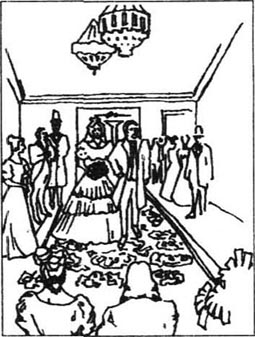
我回到伦敦，欣喜地发现朵拉的姑姑决定允许我去看望朵拉。所以，每到星期六和星期天，我就徒步走到普特纳她们的家，把下午的时间花在那儿。有时，朵拉唱歌、弹吉他，有时，我们到河边散步，有时我带上特拉德和我姨婆一起去。那是多快乐的一段时光！
斯本罗先生在我看来似乎很富有，但他死后，律师们发现朵拉居然从他那儿继承不到什么，因为还有很多债务要还。所以，我不用担心别人会怀疑我与朵拉结婚是图她的钱。斯本罗先生死后，事务所失去了许多业务，我意识到我必须另找一份职业。我的文笔一直不错，所以我继续充当斯特朗博士的秘书，此外，我开始为一些日报报导国会日常议事。我甚至写一些短篇故事，发表在一些杂志上，我很高兴就此挣到钱。
几个月过去了，我迎来了21岁的生日。特拉德依旧在学律师，依旧准备和他那位“世界上最可爱的女孩”结婚。我已从我的公寓搬出，搬到一所比较舒适的小房子里。终于，朵拉的姑姑们同意了我们的婚事。我盼望着这一生中最幸福的一天。接下来的几天在激动和喜悦中过得飞快。姨婆和迪克先生搬进了离我不远的一所更小的房子，辟果提也从雅茅斯赶来，准备参加我的婚礼。
我一直想让阿格尼斯见见朵拉，所以我很高兴婚礼前一天她们见面了。朵拉美丽的脸挨着阿格尼斯恬静的脸，真是美妙极了。朵拉对着阿格尼斯的耳朵说着悄悄话，就像一个孩子跟她母亲说话一样。可当阿格尼斯去看我姨婆，房间里就剩我们俩时，朵拉认真地对我说：“也许我要是从小就有阿格尼斯这样的朋友，大卫，亲爱的，我就不会这么蠢，这么笨。”
“可我爱你这样，朵拉！”我回答。
“我不明白你为什么竟然爱上我！”
“因为任谁见到你都会产生爱慕之心！”
“但假如你从未遇见我，大卫，我猜想你要娶的人会是…”
我笑起来，亲吻她美丽的嘴唇，她很快又像往常一样高兴了。
我不记得婚礼上更多的事情，只记得朵拉在我身边，穿一身漂亮的衣服，羞红了脸。一直到我们驾车离开普特纳，我才从梦中醒来。我最终相信了这一切！坐在我身边的是我钟爱着的、我的亲爱的娇妻！
度完一周的蜜月，和朵拉一起回到我的小房子，自己似乎总觉着别扭。很难相信这以后我俩要一起度过下半辈子。然而，我很快意识到婚后的生活并不像表面看上去那么舒适。朵拉和我谁也不知道如何管家。当然，我们有一位用人来管我们。她饭开得晚，喝掉了我们所有的酒，还偷走了我们所有的银汤勺。最后她走了，我们又请了一位用人，但情况一模一样。我觉得有必要跟朵拉谈谈了。
“我的宝贝，”我开始了，“你能不能，哪怕是稍微管好一点用人们？”
“大卫，别冲你的小朵拉发火。”她说着，走过来坐到我膝盖上。但我想显示一下我的严厉。
“我的心肝朵拉，我真觉得你应该做点什么。我是说，昨天我压根儿没吃晚饭，因为牛肉烧糊了；上星期特拉德来家里吃饭，肉根本就没做熟！”
“结婚前你知道我是个多笨的女孩！你要对我发火就不该娶我！我想你根本就不爱我！”大大的泪珠顺着她美丽的脸庞滑下来。
“朵拉，我的宝贝！当然我爱你！别哭了！”我不能再继续谈这个话题了。可她平静下来后，擦干眼泪，十分认真地说道：“大卫，能为我做点事吗？你能叫我童妻吗？”
“你这是什么意思，我最亲爱的？”我奇怪地问道。
“就这意思，不管什么时候你觉得我很愚蠢，你就记住我像个孩子，不如你聪明，不如任何人。别对我失望，只要记住你的童妻非常非常爱你。”
在所有我们俩的谈话中，这一次我记得很清楚。给我留下了很深的印象，我很高兴我当时没再设法改变朵拉。我爱上了天真的、没长大的女孩，我不能期望在短时间内把她变成一位聪慧、能干的女人。可这意味着我将一个人承担所有的困难，有时我感到很遗憾，生活中没有一位真正的伴侣，一位能分担忧愁的伴侣。
这期间，我的第一本书问世，而且十分成功。朵拉和姨婆为我同样骄傲。然而，我开始非常担心朵拉的身体状况。她病了一段时间，似乎并没有好转。她浑身没劲，不能自己走动。我开始每天早上背她下楼，每天晚上背她上楼，姨婆也天天来照顾她。我的娇妻依旧很美丽、很开心，但我知道她体重有多轻，身体有多虚弱。我开始害怕她可能不会跟我生活太久了。
有一天一大早，我在花园里散步，看见丹尼尔·辟果提推开门朝我走来。他的衣服上满是尘土，看上去比以前老了许多，白头发零乱地散落在帽子外边。但他脸色棕红，显得健康。
“大卫少爷！”他看见我高兴地说，“我来告诉你——你是我们永远的朋友——我找到她了！”
“你找到小埃米莉了！”我兴奋地叫起来，“在哪儿——怎么找着的？”
“我听说她和恶棍斯提福兹去了意大利，在那儿住了一段。最后他厌倦她了，离开了她。她不知道怎么办，不知该去哪儿，可怜的孩子！但她回到了伦敦。我就是在那儿找到了我亲爱的孩子！因为我已经找遍了整个欧洲，我知道她总有一天会回到英国，所以我每天晚上走街串巷寻找她。昨天晚上我发现了她，万念俱灰、疲惫不堪，站在一座桥上看着河水。要是我当时没发现她，我不敢想象她会怎么办！然而，上帝在照看着我亲爱的孩子，她现在安全了，和我在一起。”他用强劲有力的手抹了一下眼睛，冲我笑了笑。“我已订好计划我们下一步该做什么，大卫少爷，我想把打算告诉你。埃米莉和我准备去澳大利亚，那是个新国家，没有人知道她的过去。我们俩要一起开创一种新生活。我们6个星期后出发。”
“非常明智的决定，”我说，“那家里其他人怎么办？哈姆和辟果提也去澳大利亚吗？”
“不，他们不去。可怜的哈姆不再是以前的他了。我想他的心是彻底地碎了。可他有一份好工作，在雅茅斯很受欢迎，所以他留在那儿。我妹妹也想留下，一半是因为你，大卫少爷，一半是为了照顾哈姆，她在雅茅斯给他做饭、洗衣，你知道。”
“好啊，我的朋友，”我说着，紧紧地握着这位老船员的手，“我祝你和埃米莉在新的生活中一切顺利！”
“我会尽自己的职责，不管在英国还是澳大利亚，”丹尼尔说，“我再不和我的小埃米莉分开了！”
10．Death and discovery
10
Death and discovery
Traddles and I had both received rather strange letters from Mr Micawber, in which he asked us to come to Canterbury, with my aunt. At this meeting, he said, he would show to all of us the proof of Uriah Heep's wickedness. Dora was too ill to come with us, so Traddles, my aunt, Mr Dick and I travelled to Canterbury by coach, spent the night in a hotel there, and arrived punctually at the Wickfields' house the next morning. Mr Micawber met us at the door and showed us into Uriah Heep's office. Uriah himself seemed rather surprised to see us, but pretended to welcome us as old friends. Mr Micawber brought Agnes into the room too, and then stood firmly by the door.
'Don't wait, Micawber,' said Uriah to his assistant.
But Mr Micawber did not move. He stared coldly at his employer.
'Did you hear what I said, Micawber?' said Uriah angrily, his little eyes becoming redder while his long face went very pale.
'Yes!' replied Micawber. 'But I don't choose to leave. Listen to me, Heep! I don't care if I lose my job! I don't wish to work any longer for the wickedest man in England!'
Uriah fell back, shocked. Looking slowly round at us, with a dark, evil expression on his face, he said, 'I see! You've all arranged this between you! But I know who to blame for this! It's you, Copperfield! You're jealous of my new position, aren't you? But I know things about all of you which I can use against you—for example, I know about your father's business mistakes, Miss Agnes, and I know about your past in the warehouse, Copperfield! So be careful, I warn you all!'
'Mr Micawber,' I said calmly, 'please tell us what you were going to say about this man!'
Just then Traddles, who had disappeared a few minutes before, reappeared with Mrs Heep. Uriah had not noticed Traddles before. 'Who are you?' he demanded angrily.
'I am a lawyer and a friend of Mr Wickfield, sir,' said Traddles, in a businesslike way. 'And he's asked me to carry out all his business arrangements from now on.' This came as a surprise to me as well as to Uriah.
'The old fool has been drinking too much again!' said Uriah, looking uglier than ever. 'You can't believe anything he says! And you've bribed my assistant, I suppose, to speak against me!'
'It's you who have been dishonest,' said Traddles firmly, 'as we shall hear from Mr Micawber.' And we all looked expectantly towards that large, important-looking gentleman. He was clearly delighted to have such an interested audience, and cleared his throat several times before starting to speak. As he spoke, his voice became louder and louder with excitement, until he was almost shouting.
'Ladies and gentlemen,' he began, 'when very poor and desperate for work, I came to Canterbury as assistant to this evil man Heep. I am sorry to say I was soon involved in all his wicked plans. I may be poor, but I can't accept his lies, his cheating, his bribes and all the rest of it. And so I've brought you here today, ladies and gentlemen, to hear me accuse Heep publicly! One, he has confused and lied to his partner so often that poor Mr Wickfield now thinks he has himself been dishonest. Two, he has sometimes copied Mr Wickfield's signature on to false documents and cheques. Three, for years he has been stealing large amounts of money from Mr Wickfield and the firm!'
'You can never prove it!' cried Uriah wildly.
'I have taken copies of all the necessary documents,' said Mr Micawber confidently, 'while working as your clerk. And just to make sure, I've given them to Mr Traddles to keep safely.'
'Uriah, my dear boy,' cried his mother, sobbing bitterly, 'tell them how humble you are! Say you didn't mean to hurt anyone! Say you're sorry, and arrange matters with these gentlemen! Do, dear boy!'
'Mother, be quiet!' he whispered angrily. 'Don't help my enemies! Copperfield here would have given you a hundred pounds to say what you've just said!'
Suddenly my aunt attacked Uriah, hitting his head with her umbrella. 'Give me back my investments!' she cried. 'I thought Mr Wickfield had lost my money, and I didn't want to hurt Agnes by saying so! But now I know you 've had control of the firm, and you 've stolen my money...' Somehow I managed to get her away from him before she hurt him too badly.
Then Mrs Heep fell on her knees to all of us, begging us to forgive her dear boy, and to remember how humble he always was.
'Be silent, Mother!' said her son. He turned to Traddles and asked unpleasantly, 'Well? What are you asking me to do?'
'Not asking, demanding, Heep. You will give us the keys to all your boxes and drawers, all your documents and chequebooks, everything in fact that belongs to the firm. You will stay in this house until we've checked all the documents.'
'And if I don't agree?' he asked, frowning.
'Copperfield, perhaps you would fetch a couple of policemen. Things move slowly in the lawcourts, but in the end Mr Wickfield will get his business back, and you, Heep, will be in prison for a very long time.'
Uriah realized that he had to do what we wanted, and went to fetch the documents, with Mr Dick at his side. At the door, with his blackest, most evil expression, Heep turned and said to me, 'I've always hated you, Copperfield!' Then he was taken away.
In the next few days Traddles and Micawber worked very hard together to put right what Uriah had done. They discovered my aunt's money and gave it back to her, and paid all the firm's debts. Mr Wickfield decided to sell his business, and retire. The Wickfields would not have much money, but at least they did not owe anything. In the end Uriah Heep and his mother left Canterbury, but we all thought he was too evil to stay out of trouble for long.
My aunt had a wonderful idea for the Micawber family. 'Have you ever thought of going to live in Australia?' she suggested. 'It's a new country, with a lot of business opportunities.'
Mr Micawber was very interested. 'Something could easily turn up there,' he agreed. My aunt generously offered to lend him the necessary money to pay for the journey, and the whole Micawber family started planning and packing immediately.
When I returned to London, I realized my poor Dora was much worse. She stayed upstairs all the time now, and the sitting-room seemed very quiet without my little child-wife in her usual place. One day when I was sitting with her in her room, she said lovingly, 'You know, David dear, I'm afraid I was too young.'
'Don't say that, Dora!' I whispered, conscious that she was speaking of herself in the past.
'I was a silly little girl, David, and you know it. It's just as well that I won't live much longer. Perhaps if I lived, you'd wish you'd married someone more sensible, more practical, someone like...' She did not finish what she was saying.
'But we've been so happy, Dora!' I said, trying not to cry.
She took my hand and kissed it. 'We have, haven't we? David, do you think if you asked Agnes, she'd come and see me? I have something particular to say to her.'
'Of course, my love, I'll write to her tonight.'
Agnes came the next day, and went straight upstairs to see Dora. Although the doctor and my aunt had told me there was no hope that Dora would live, when I held her hand and saw her love for me in her innocent blue eyes, I could not believe she would be taken from me. But when Agnes came downstairs so calmly and silently, and said nothing, but raised her hand and pointed upwards, I knew! It was over, and I remembered only darkness for a long time afterwards.
In the middle of my terrible sadness I received a message from Emily. She asked me to take a letter from her to Ham—her last words to the man who had loved her so much—before she and Daniel left England for Australia. They were sailing in two weeks' time, and the Micawbers were going on the same ship. I remembered my childish love for little Emily, and agreed to do what she asked.
The weather was very stormy as I travelled through the night to Yarmouth. Several times the coach was almost knocked off the road by the wind and the rain. By the time we arrived in Yarmouth, most of the local people were in the streets, afraid to stay in their houses, in case the roof or the chimney blew down. Many women were crying, afraid for their husbands or brothers who were out fishing in their small boats. The sea itself, with its huge waves crashing noisily on the beach, frightened us all very much.
I went to the hotel, and tried to sleep a little after my tiring journey. But the wind made so much noise that I could not sleep, and I went down to the beach again, where a lot of people were standing together, watching the waves. By now the storm had got even worse.
'Two ships have gone down, sir!' a local fisherman shouted to me. 'A few miles away! We couldn't save any of the men on them! The waves were too high! And look! There's another!'
And suddenly I gasped in horror. I could see a great ship, which had been pushed violently on to the rocks by the waves. It was in danger of falling back into the waves, or of breaking in half, at any moment. Several figures were visible on the ship, especially one very active, curly-haired young man, who seemed to be giving orders. The crowd on the beach cried out as the ship rolled and a huge wave swept over it, carrying the men into the rushing water. In a moment the only figure we could see was the curly-haired young man, holding desperately on to the side of the ship and calling for help. What could we do? It was certain death for any man to enter those waves.
Just then I saw Ham Peggotty running through the crowd to the edge of the water. One end of a rope was tied around his waist, and the other end was held firmly be three strong men standing on the beach.
'No, Ham!' I cried, trying to hold him back. 'Don't try to rescue that poor sailor! You'll kill yourself!'
'Let me go, Master David!' he replied cheerfully, shaking both my hands. 'If God thinks it's time for me to die, then I'm ready! Friends, I'm going in! Give me more rope!'
He dived in under a great wave, and swam strongly towards the ship. In another moment he would have reached it, when a high green hill of water appeared, and the ship went down with a great crash. The people on the beach pulled on Ham's rope, and he arrived at my feet—dead. They carried him to the nearest house, and I called a doctor, but nothing could be done for him. He had been beaten to death by that great wave, and his generous heart had stopped for ever.
As I sat hopelessly by his bed, a fisherman who had known me when Emily and I were children, came to tell me he recognized the curly-haired sailor, whose body had been thrown out of the water by the waves. I went to see. And there on the beach where she and I had played, I saw Steerforth lying, with his handsome face on his arm. He would never smile at me or Emily again.
I was surrounded by too many ghosts to return to London and my old life. I was selfishly sad that I had lost my child-wife and my childhood friend, and sometimes I felt I wanted to die. So I left England, and travelled for many months in Europe. I lived in a dark, miserable dream, with no hope or interest in my future.
One evening I arrived in a village in Switzerland, and received a packet of letters that had been waiting for me. The first one I opened was from Agnes. She gave me no advice, but she told me simply that she trusted me to find a purpose in life, and that she would always be proud of me, and love me as a sister.
As the light died out of the sky, and I watched the colour of the snow on the mountain tops change, I felt I was waking from my unhappy dream, and I began to understand how much I loved Agnes. She had been the one who had always guided and supported me, and now I realized I needed her love for the rest of my life. Had falling in love with Dora been a mistake? We had both been very young, it is true. I had always called Agnes sister, and now perhaps I no longer had the right to ask whether her love for me was more than sisterly.
However, I decided to return, and travelled home to England, after three years of absence. I was delighted to find that Traddles had married his Sophy, and was doing well as a lawyer. My aunt had moved back to her old Dover house, and was living happily there with Mr Dick and Peggotty. When I visited my aunt, I took the opportunity of asking her about Agnes.
'Has she—has she any young man she'd like to marry?' I asked as lightly as possible.
My aunt looked carefully at me as she replied, 'I suspect she has, David. She's never mentioned it to me, but I think—I feel sure she's going to marry soon.'
I was firm with myself and did not show my feelings. I borrowed a horse and rode to Canterbury to ask Agnes myself. When I saw that beautiful, gentle face again, I knew I had come home. I knew how dear she was to me, and would always be.
'Agnes,' I said, 'I am so grateful to you, for making me what I am, for helping me to be good! But I think you have a secret. Let me share it, Agnes, as your brother! Tell me whom you love!'
Agnes turned away from me and burst into tears. Somehow these tears did not sadden me, but gave me hope. 'My dear Agnes! Don't cry!'
'David, leave me! I can't talk about it now!' she sobbed.
'Agnes, you're dearer to me than anything in the world. Don't think I'll be jealous of any man you choose to marry. I only want you to be happy!'
She had stopped crying now and was calmer. 'If I have a secret, David, it is—not a new one. It has been my secret—for a long time!'
I was wild with hope. 'Not a new one'! Did she mean...? 'Dearest Agnes! Dare I hope to call you more than a sister!' She was in my arms and sobbing again, but this time with happiness. 'I went away, Agnes, loving you! I returned home, loving you!'
We held each other for some time, sure now of each other's love.
'There is something I must tell you, David,' she said gently, looking calmly into my face. 'I have loved you all my life!' She added, 'And something else—before our sweet Dora died, she asked me—can you guess—to fill the empty place in your heart.' And Agnes laid her head on my shoulder, and cried. And I cried with her, although we were both so happy.
My story has almost come to an end. I have published several books now, and I am a well-known writer. Agnes and I have been married for twenty years, and live in perfect happiness, with our children around us. We have heard from Daniel Peggotty in Australia. He and Emily have made friends there and are happy. Mr Micawber has become an important figure in a large Australian town, and his family are quite used to living there. My aunt, Mr Dick and Peggotty are all white-haired and old now, but still very fit, and they love playing with our children whenever they can. My old friend Traddles has two sons of his own, and will soon become a judge.
When I think of my friends and family, Agnes's lovely face shines above them all. She is here, next to me, as I write, and I hope that when my life comes to its end, she will be with me in the shadows, pointing upwards to the light!
proof n. evidence 证据。
be too ill to come 病得太重，不能来。
punctually adv. neither early nor late 准时地。
choose v. pick out from a greater number 选择。
fall back move or turn back 后退。
arrange between you 私下安排。
position n. job, employment 职位。
mistake n. wrong act 错误。
reappear v. appear again 再出现。
businesslike a. calmly with common sense 一本正经的。
bribe v. influence unfairly with favours or gifts 贿赂。
audience n. gathering of persons for the purpose of hearing a speaker 听众。
lie n. untrue statement purposely made to deceive 谎言。
cheat v. act in an dishonest way to win an advantage or profit 欺骗。
confuse v. put into disorder, mix up in the mind 使混乱，使糊涂。
copy v. imitate 仿效，摹仿。
cheque n. written order to a bank to pay money 支票。
document n. sth. written or printed, to be used as a record or an evidence 文件。
drawer n. box-like container which slides in or out of a piece of furniture 抽屉。
belong to be the property of 属于。
a couple of 几个，两三个。
prison n. building in which wrongdoers are kept locked up 监狱。
opportunity n. favourable time or chance 机会，时机。
pack v. put things in a box and get ready for a journey 整理行装。
all the time 总是，一直。
It's just as well... with no loss of advantage 无何损失。
point v. direct attention to 指向。
leave for 出发，动身去。
sail v. travel on the water 乘船旅行。
stormy a. marked by strong wind or heavy rain or snow or hail 暴风雨的。
by the time 到……时候。
local a. of, special to, a place or a district 当地的。
roof n. top covering of a building 房顶。
chimney n. structure through which smoke from a fire is carried away through the wall or roof of a building 烟囱。
gasp v. struggle for breath 喘气。
visible a. that can be seen 看得见的。
edge n. outer limit or boundary of a surface 边缘。
waist n. part of the body between the ribs and the hips 腰，腰部。
rescue v. deliver, make safe 救，救出。
beat v. hit repeatedly 连续击打。
ghost n. spirit of the dead person appearing to sb. still living 幽灵。
miserable a. wretched, unhappy 不幸的，悲惨的。
packet n. small parcel or bundle 捆，小包。
right n. sth. to which one has a just claim 权利。
absence n. being away 离开，不在。
delighted a. happy 高兴的。
burst into tears 突然哭了起来。
sadden v. make sad 使……痛苦。
wild with hope 欣喜若狂。
mean v. signify 意思是。
look into look at the inside of 注视。
come to an end 结束。
make friends 交朋友。
be used to be accustomed to 习惯于。
fit a. in good health 健康的。
judge n. public officer with authority to hear and decide cases in a law court 法官。
10 死亡与发现
10 死亡与发现
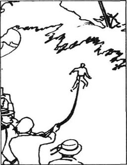
特拉德和我都接到米考伯先生写来的奇怪的信，他要我俩和我姨婆去一趟坎特伯雷城。这次会面，他说，他要让我们看看尤赖亚·希普的恶劣行径的罪证。朵拉身体太弱不能和我们一起去，所以，特拉德、姨婆、迪克先生和我搭上长途马车，来到了坎特伯雷，在当地的旅馆住了一宿，第二天早上很准时地来到威克菲尔住所。米考伯先生在门口迎接我们并把我们带到了尤赖亚·希普的办公室。尤赖亚本人见到我们似乎很吃惊，但装着迎接老朋友似地欢迎了我们。米考伯先生把阿格尼斯也带到了办公室，自己则坚定地站在门口。
“出去，米考伯，”尤赖亚对他的助手说道。
可米考伯先生没走，他冷冷地盯着他的雇主。
“你听见我的话了吗，米考伯？”尤赖亚生气地说道，他的小眼睛越来越红，他的长脸开始苍白。
“听见了，”米考伯回答，“可我不准备离开。听着，希普！我不在乎丢掉饭碗！我不想再为英国最恶毒的人卖命！”
尤赖亚大惊失色倒退一步，之后，他慢慢地环视着我们，带着一种阴暗、邪恶的表情说道：“我明白了！你们几个都串通好了！可我知道谁该受谴责！是你，科波菲尔！你嫉妒我的新职位，是不是？可我知道可以用来对付你们的所有事情——比方说，我知道你父亲生意上的失误，阿格尼斯小姐；我知道你在仓库的一段过去，科波菲尔！所以，小心点，我警告你们！”
“米考伯先生，”我平静地说，“请你告诉我们，关于这个人你要说些什么！”
正在这个时候，几分钟之前离开了房间的特拉德尔带着希普太太重新出现了。尤赖亚在此之前没注意到特拉德尔。“你是谁？”他愤愤地问道。
“我是一名律师，威克菲尔先生的朋友，先生，”特拉德尔说道，俨然一副公事公办的样子，“他要求我从现在起处理他的一切业务往来。”这话出乎我的意料，尤赖亚也始料不及。
“这个老浑蛋又喝多了！”尤赖亚说，显得比以前更丑陋。“你们不要相信他说的任何一句话！我料想你是贿赂了我的助手，让他反对我！”
“不诚实的是你，”特拉德尔坚定地说道，“米考伯先生会讲给我们听。”我们都迫不及待地看着这位宽脸庞、大人物长相的先生。他显然很高兴拥有如此专注的听众，在开始说话之前清了好几下嗓子。说的时候，他的声音因激动而越来越大，直至几乎成了高喊。
“女士们，先生们，”他开始道，“由于贫穷，极需工作，我来到坎特伯雷城担任这个恶魔希普的助手。我很抱歉，我很快卷入了他全部的罪恶计划。我虽贫穷，可我不能忍受他的谎言、他的欺诈行为、他的贿赂和其他种种劣行。所以我今天把你们叫来。女士们，先生们，倾听我对希普的公开控诉！第一，他经常扰乱、迷惑他的合伙人，以致可怜的威克菲尔先生误以为是他自己不诚实。第二，他有时仿造威克菲尔的签字签写文件和支票。第三，几年来他一直盗用威克菲尔先生和事务所的大量现金！”
“你证明不了这一切！”尤赖亚疯狂地叫道。
“我保留了所有重要文件的副本，”米考伯先生自信地说，“在作为你的职员而工作的时候。为确凿起见，我已把它们交由特拉德先生妥善保管。”
“尤赖亚，我亲爱的孩子，”他母亲痛哭道，“告诉他们你是多么卑谦恭顺！说你无意伤害任何人！说你很抱歉，愿意和先生们协调这些事！说，亲爱的孩子！”
“母亲，安静点！”他愤愤地低声说道，“不要帮助我的敌人们！科波菲尔情愿出价100英镑买你刚才一番话！”
突然，我姨婆对尤赖亚发起进攻，她用伞打他的脑袋，“把我的投资还给我！”她叫道，“我以为是威克菲尔先生把钱弄丢了，我没这么说是不想伤害阿格尼斯！而现在我知道是你控制了事务所，是你偷了我的钱……”在她没来得及痛揍他之前，我设法把她拉开了。
这时，希普太太给我们大家跪下了，乞求我们饶恕他亲爱的孩子并想想他以前一惯的卑微相。
“安静，母亲！”她儿子说。他转向特拉德尔，令人不悦地问道，“怎样？你让我做什么？”
“不是让你，而是命令你，希普。你把你所有箱子、抽屉的钥匙，所有的文件、支票簿，以及所有属于事务所的东西都交出来。你必须留在这所房子里直到我们核对完所有的文件。”
“要是我不同意呢？”他皱了皱眉，问道。
“科波菲尔，或许你该去叫几个警察来。通过法庭事情处理起来要慢些，但最终威克菲尔先生会要回他的事务所，而你，希普，将要在牢里待上很长一段时间。”
尤赖亚意识到他必须按我们的要求去做，于是就去取文件，迪克先生跟在他身边。走到门口，希普转过身，带着最阴暗、最邪恶的表情跟我说道：“我早就恨你，科波菲尔！”然后他被带走了。
接下来的几天，特拉德尔和米考伯一起辛苦工作，把尤赖亚所干的一切更正过来。他们发现了我姨婆的那笔钱，并把钱退给了她，还付清了公司的所有债务。威克菲尔先生决定卖掉公司，然后退休。威克菲尔父女剩下的钱不多，但至少他们不欠下什么。最后，尤赖亚·希普和他母亲离开了坎特伯雷，可我们都认为他那么恶毒，离惹祸的日子不远了。
姨婆给米考伯一家出了一个极妙的主意。“你们想过移居澳大利亚吗？”她建议道，“那是个新国家，多的是做生意的机会。”
米考伯先生很感兴趣，“那儿很容易出现转机，”他赞同地说。姨婆很慷慨地提出借他一路所需的费用，于是米考伯一家上下很快就开始准备，收拾行装。
我回到伦敦，意识到可怜的朵拉病得更厉害了。她现在一直待在楼上，客厅里没有我的小童妻在她以往的位置上似乎非常安静。一天，我在她房间坐在她身边，她动情地说，“你知道，大卫，亲爱的，恐怕我太年轻了。”
“别这么说，朵拉！”我轻声说道，感觉她在说自己的过去。
“我是一个傻小孩，大卫，你是知道的。我活不长了正好。或许要是我活下去，你会希望自己应该娶一位更懂事理、更现实的人，就像……”她没有接下去说完。
“但我们一直那么快乐，朵拉！”我说，竭力不让自己哭出来。
她握住我的手，吻了吻。“我们是快乐，不是吗？大卫，你觉得假如你要阿格尼斯来一趟，她会来看我吗？我有特别的事要跟她说。”
“当然，我的宝贝，我今晚就给她写信。”
第二天，阿格尼斯来了，径直来到楼上看望朵拉。尽管医生和姨婆都告诉过我朵拉活下来的希望很渺茫，当我握着她的手，从她天真无邪的蓝眼睛里看出她对我的爱时，我还是不相信她会离我而去。但当阿格尼斯平静、悄然地下楼来，一句话不说，只是抬手指了指楼上时，我明白了！一切都结束了，此后很长一段时间我的记忆里只有一片黑暗。
正当我处在万分悲痛之中，我收到了埃米莉的便条，她要我在她和丹尼尔离开英国前往澳大利亚之前给哈姆送去一封信——她对这位曾经是那么爱她的人所说的最后的话。他们两周后起航，米考伯一家在同一艘轮船上。我回想起对小埃米莉那孩童般的爱，就同意了她的要求。
我去往雅茅斯的那晚是一个暴风雨天气。有几次，风和雨差点把马车掀到路下。我们到达雅茅斯时，大多数当地的人都跑到街上，他们害怕待在家里，怕房顶或烟囱会被风刮倒。许多妇女都在哭泣，担心驾着小船出海的丈夫们或兄弟们。大海的巨浪呼啸着拍打海岸，没有人不害怕。
我来到旅馆，准备睡一会，消消旅途的劳累。可风声如此狂虐，让我无法入睡，于是我又来到海岸边，那里聚集了很多人，注视着海浪。此时暴风雨更猛烈了。
“已经沉了两艘船了，先生！”当地一位渔民对我喊道，“就在几里开外！我们无法营救船上的人！浪太高了！瞧，又有一艘船！”
突然，我惊恐地倒吸一口凉气。我看见一艘巨轮被海浪无情地搁在了礁石上。随时都有可能被冲回浪里，或折成两半的危险。船上有几个人影依晰可见，尤其是一位非常活跃的、卷头发的青年，看上去像是在指挥。当轮船摇晃了几下，一个巨浪横扫过去，把船上的人卷入激流时，岸上的人群发出一阵叫喊。这时，我们唯一能看见的只剩那位卷头发的青年人了，他拼命地抓着船沿呼救。我们能做什么？任何人进入这海浪中都必死无疑。
正在这时，我看见哈姆·辟果提冲出人群，跑向海边。一条绳子的一端系在他的腰上，另一端由站在岸上的三个壮小伙子紧紧地拉着。
“别，哈姆！”我叫道，试图拉回他，“不用试着去救那可怜的水手！你自己会没命的！”
“让我去，大卫少爷！”他握住我的两个手，心甘情愿地回答，“如果上帝认为现在是我的死期，那么我已经准备就绪！伙计们，我要下去了！放绳！”
他潜入到一个巨浪底下，很有力地朝轮船游去。再有一会儿，他就要触到轮船了，这时，一个巨大得像山一样的绿色海浪迎面袭来，轮船被打得粉碎沉了下去。岸上的人们收回哈姆的绳索，他来到我的脚边——死了。他们把他扛到距离最近的一所房子，我叫来了医生，但已无济于事。他被那一阵巨浪打死了，他的博大的心脏停止了跳动。
我心灰意冷地坐在他床边，一位在我和埃米莉还小的时候就认识我的渔夫进来告诉我，他认出了那位卷头发的水手，他的尸体被海浪冲上了海滩。我过去一看，在埃米莉和我过去常玩的海滩上，斯提福兹躺在那儿，胳膊枕在他那英俊的脸下面。他再也不会对我或埃米莉笑了。
我被太多的幽灵包围着，我不能再回伦敦，回到我的旧生活。我只顾悲痛失去了我的童妻，失去了儿时的朋友，有时我觉得自己都想死。所以我离开了英国，到欧洲游历了数月。我生活在黑暗、痛苦的梦境中，对未来毫无希望和兴趣。
一天晚上，我到达瑞士的一个小村落，收到了早已等在那儿的一捆信。我首先拆开的是阿格尼斯的信，她没给我任何建议，只简单地告诉我，她相信我能寻找到生活的目标，她将永远为我骄傲，并且像姐姐一样爱我。
天空的夜色逐渐消退，我注视着山顶上的雪慢慢转变颜色，感觉自己正从不愉快的梦境中醒来，我开始明白自己是那么地爱阿格尼斯。她才是一直引导我、支持我的人，现在我意识到我的余生需要她的爱。爱上朵拉是个错误吗？我们俩都很年轻，这是事实。我一直把阿格尼斯称做姐姐，或许现在我已没资格问她对我的爱是否能超越姐弟般的爱。
不管怎样，在阔别三年之后，我决定回去，回到英国的家。我欣喜地发现，特拉德已经和他的索菲结婚，还干律师，干得不错。姨婆已搬回到多佛她的老房子里，和迪克先生和辟果提愉快地生活在一起。我去看望我姨婆时，趁机打听了一下阿格尼斯的情况。
“她有——她有意中人了吗？”我尽可能轻松地问道。
姨婆仔细地打量着我回答：“我估计她有，大卫。她从未跟我提起过，可我认为——我肯定她很快就要结婚了。”
我稳住自己不流露任何情绪。我借了一匹马，骑到坎特伯雷当面去问阿格尼斯。当我再一次看着她美丽、温柔的脸时，我感觉自己回到了家。我知道她对我有多亲，而且永远那么亲。
“阿格尼斯，”我说，“我是那么感激你，感谢你造就如今的我，感谢你帮助我走上正路！可我觉得你有事瞒着我，说给我听听，说给你的弟弟听，阿格尼斯！告诉我你爱的是谁！”
阿格尼斯转过身去，痛哭起来。可不知怎么地，她的眼泪并不令我忧伤，反而给了我希望。“我亲爱的阿格尼斯！别哭了！”
“大卫，别管我！我现在没法说！”她抽泣道。
“阿格尼斯，在这个世界上，你对我比任何人都亲。别以为我会嫉妒你选择要嫁的男人，我只想让你快乐！”
她这时停止了哭泣，平静多了。“要是我有什么秘密，大卫，那也是——不是什么新的。那一直是我的秘密——保留了很长时间。”
我欣喜若狂，“不是新的”！难道她指的是……？“最亲爱的阿格尼斯！我能叫你比姐姐更亲的称呼吗！”她投进我的怀里，又一次哭起来，但这次是出于高兴。“我离开时，阿格尼斯！爱着你，我回到家时，爱着你！”
我们互相拥抱了一会儿，感受着对方对自己的爱。
“有一件事我必须告诉你，大卫，”她温柔地说，并平静地看着我的脸，“我一辈子都在爱你！”她又说道，“还有一件事——我们亲爱的朵拉临死前，她要求我——你猜猜看——填补她在你心中的空缺。”阿格尼斯把头靠在我肩上哭起来，我也跟着哭了，尽管我们都感到幸福。
我的故事将近尾声。我至今已出版了好几本书，成了一位著名的作家。阿格尼斯和我结婚已有20年，生活得幸福、美满，而且现已儿女成群。我们收到了远在澳洲的丹尼尔·辟果提的消息，他和埃米莉在那儿广交朋友，生活得很快乐。米考伯先生在澳洲一个大集镇里成了一位重要人物。他一家很习惯那儿的生活。我姨婆、迪克先生和辟果提已成了白发苍苍的老人，但依然很健朗，他们只要一有时间就来陪我们的孩子们一起玩耍。我的老朋友特拉德尔已有两个儿子，自己很快将升为法官。
当我想着我的朋友、家人时，阿格尼斯可爱的脸总闪耀在我眼前。现在，她就在我身边，陪伴我写作。我希望等我的人生之路走到尽头时，她能在黑暗中与我同在，为我指引光明！
〈完〉
Exercises
Exercises
A Checking your understanding
Chapters 1–2 How much can you remember? Check your answers.
1 What was Mrs Copperfield's, and her servant's, first name?
2 Which town did Daniel Peggotty live in?
3 How long was David kept locked in his room after his beating?
4 How much money did Peggotty give David?
5 What was Barkis' message to Peggotty?
6 Who collected David from the coach station in London?
7 What was the name of David's school?
8 What was the headmaster's name?
9 Who was the unluckiest boy in the school?
10 What was different about David's home when he returned?
Chapters 3–5 Are these sentences true (T) or false (F)?
1 After Mrs Copperfield's death Peggotty was asked to stay on as the Murdstones' servant.
2 David started work in the warehouse at the age of twelve.
3 Mrs Micawber was not used to having so little money.
4 Miss Betsey Trotwood recognized David as soon as she saw him.
5 Mr Dick's suggestions were all very practical.
6 Dr Strong's boarding school was in Dover.
7 Steerforth was studying at Oxford University.
8 Mr wickfield asked Uriah Heep to become his partner.
B Working with language
1 Put this summary of Chapter 6 in the right order, and then join the parts together to make five sentences.
1 that he wanted to marry Agnes one day
2 the day after Barkis's funeral Ham brought the terrible news
3 David returned to Yarmouth
4 he explained to David
5 soon afterwards David met Tommy Traddles and the Micawbers
6 when Uriah Heep came to David's rooms for coffee
7 in order to help his old friend Peggotty
8 that Emily had run away with Steerforth
9 and immediately fell in love with Dora Spenlow
10 whose husband, Barkis, was dying
11 one day David was invited to Mr Spenlow's house
12 who were delighted to see him again
2 Put together these beginnings and endings of sentences. Check your answers in Chapter 7.
1 Sitting next to Dora was a young lady
2 I was very surprised
3 I did not notice the dust,
4 Miss Mills said nothing,
5 I told her
6 If I had only known then,
7 but smiled kindly on us both.
8 I would die without her.
9 to see my aunt coming upstairs.
10 what I discovered long afterwards!
11 or the road we were taking.
12 I had not noticed before.
C Activities
1 Write Julia Mills's diary for the day when David explained to Dora that he no longer had any money (Chapter 8).
2 Do you think David was right to marry Dora? Why did he not think of marrying Agnes until later?
What would you have done in his situation? Write an essay giving your opinions.
3 You are a Yarmouth newspaper reporter. Write a report of the storm, the shipwreck and Ham's rescue attempt (Chapter 10).
封底
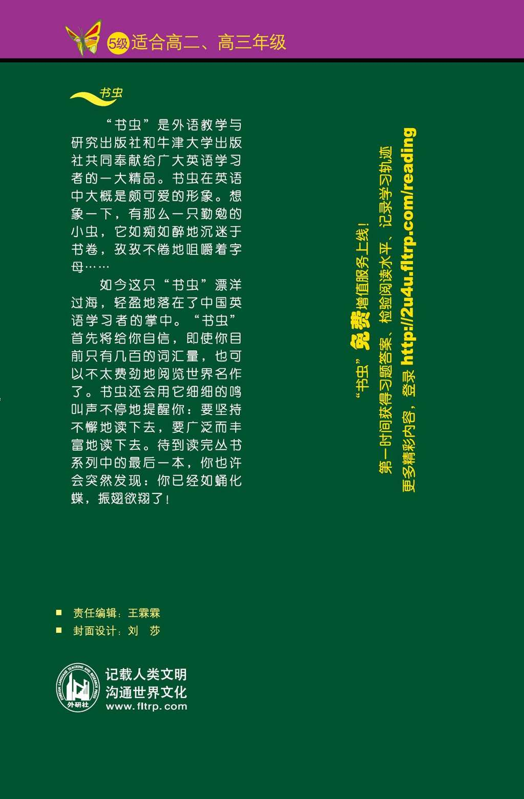